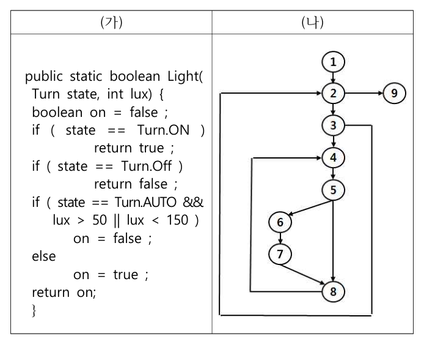
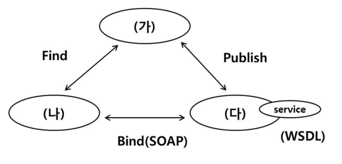
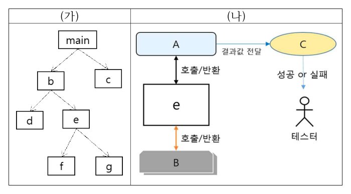
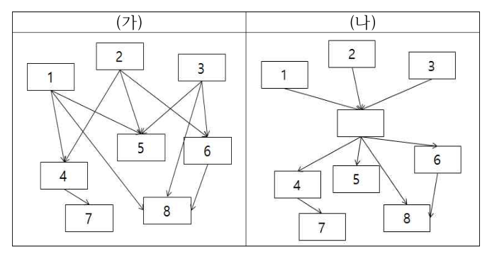
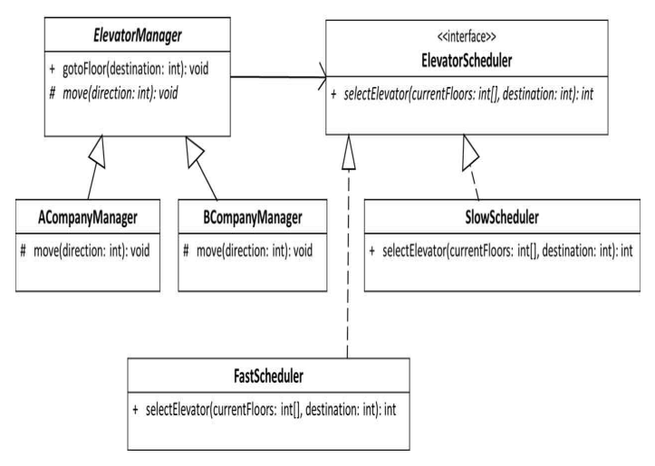
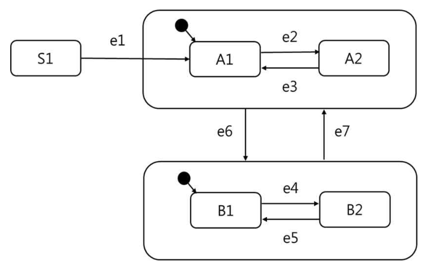
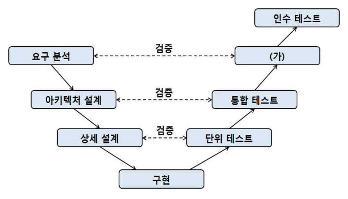
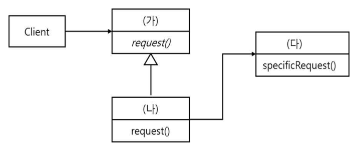
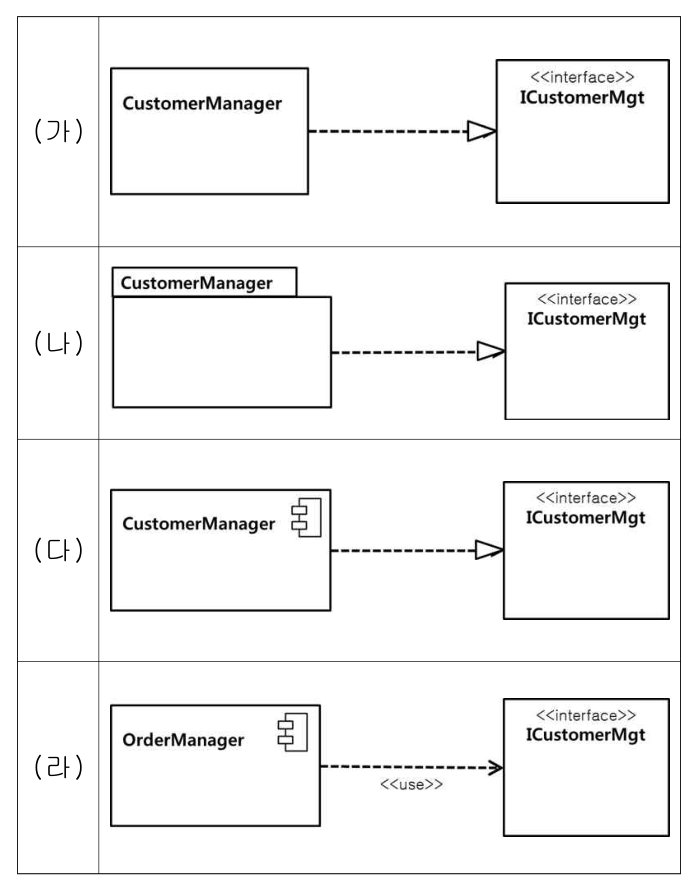

작성 기준: 업로드된 소프트웨어공학 강의자료(Part I~III, [1]1. SW 공학) 우선 근거, 외부지식은 보조적으로만 사용(강의자료 미수록 항목은 각 문항에 명시)
정답 출처: 2018년(제19회) 정보시스템 감리사 필기시험 문제 및 답안.pdf (원본 Bold 표시 정답 - 페이지 렌더 이미지 직접 대조 확인)
정답 신뢰도: 매우 높음 (stroke-text 자동추출 25/25 + 보기 영역 렌더 확대 육안 대조 25/25 일치, 계산·코드 문항은 별도 재검산)
기준 버전 주의: 본 회차는 2018년 시행분이다. ISO/IEC 25010:2011(29·35·40번)·ISO/IEC/IEEE 29119-2(37번)·SP 품질인증(42번) 등 기준이 명시된 문항은 이후 개정이 있었으므로, 각 문항의 「관련 이론 정리」 말미에 현행(2025년 기준) 변경사항을 병기하였다.
| 번호 | 정답 | 번호 | 정답 | 번호 | 정답 |
|---|---|---|---|---|---|
| 26 | ③ | 36 | ④ | 46 | ② |
| 27 | ④ | 37 | ④ | 47 | ② |
| 28 | ③ | 38 | ② | 48 | ③ |
| 29 | ③ | 39 | ① | 49 | ③ |
| 30 | ③ | 40 | ④ | 50 | ② |
| 31 | ④ | 41 | ① | ||
| 32 | ① | 42 | ④ | ||
| 33 | ③ | 43 | ② | ||
| 34 | ② | 44 | ① | ||
| 35 | ④ | 45 | ③ |
2018년 제19회 소프트웨어공학은 "표준과 다이어그램" 두 축으로 요약된다. 전항정답·복수정답은 없었고, 그림 판독 문항 9개(28·31·32·39·41·45·47·48·50) 로 최근 5개년 중 도해 비중이 가장 높다.
영역별 배분은 ① 테스트 6문항(30·32·36·37·45·47), ② 디자인 패턴·UML 5문항(39·41·48·50 + 32), ③ 품질 표준 5문항(29·35·40·34·42), ④ 애자일 1문항(33), ⑤ 아키텍처·재사용 2문항(27·31), ⑥ 코드 추적 2문항(44·49), ⑦ 비용산정·형상관리·리팩터링·응집도 4문항(26·43·38·46) 이다.
이 회차의 특징 세 가지.
첫째, 국제 표준을 정면으로 물었다. ISO/IEC 25010이 세 문항(29 성능효율성 지표, 35 8대 주특성, 40 특성 매칭), ISO/IEC/IEEE 29119-2가 한 문항(37 테스트 설계 활동 순서), SPICE가 한 문항(34 능력수준 순서), 국내 SP 인증이 한 문항(42)이다. 표준의 항목 이름과 순서를 정확히 외웠는지가 곧 점수였다.
둘째, 계산·추적 문항이 까다롭다. 28번은 의사코드와 제어 흐름 그래프의 순환복잡도를 각각 구해야 하고, 30번은 동등 클래스 개수를 조합으로 세야 하며, 36번은 단축평가를 하지 않는다는 단서 아래 문장·조건·결정 커버리지를 동시에 채우는 테스트 케이스를 찾아야 한다. 44번은 || 단축평가가, 49번은 참조 매개변수와 복합대입 연산이 핵심이다. 44번과 36번이 단축평가를 서로 반대로 다룬다는 점이 이 회차의 묘미다.
셋째, UML 표기의 적정성을 50번에서 물었다. 클래스·패키지·컴포넌트 중 패키지는 인터페이스를 실체화할 수 없다는 것을 아는지가 갈림길이었다.
강의자료 커버리지는 디자인 패턴·응집도·형상관리·테스트 기법에서 양호하나, SP 품질인증 등급(42번)·ISO/IEC 29119-2 활동 순서(37번)·동등 클래스 all combinations(30번) 은 업로드된 강의자료에 직접 수록되어 있지 않아 외부지식으로 보완했다.
| 항목 | 내용 |
|---|---|
| 문서명 | 정보시스템 감리사 소프트웨어공학 기출문제 해설집 - 2018년 제19회 |
| 대상 문항 | Q26 ~ Q50 (소프트웨어공학) |
| 원본 출처 | 2018년(제19회) 정보시스템 감리사 필기시험 문제 및 답안.pdf (p.6~11) |
| 정답 확인 방법 | stroke-text(글리프 render mode) 자동추출 + 보기 영역 렌더 확대 육안 대조 (25/25 일치) |
| 특이 문항 | 없음 (전항정답·복수정답 없음) |
| 그림 포함 문항 | 28 의사코드·제어흐름그래프, 31 SOA 구성요소, 32 모듈 호출관계도·테스트 환경, 39 모듈 구조 재구성, 41 엘리베이터 클래스 다이어그램, 45 상태 다이어그램, 47 V 모델, 48 Adapter 클래스 다이어그램, 50 UML 관계 표기 4종 — 모두 이미지 + 서술 전사 병기 |
| 표·코드 제시 문항 | 27·29·30·33·36·37·38·40·42·43·44·46·49번 — 이미지 대신 마크다운 표/코드블록으로 전사 |
| 근거 강의자료 | SE01 Part I(V1.2), SE02·SE03 Part I(아키텍처), SE04 Part II(디자인·UML), SE05 디자인 패턴, SE06 Part II(SW 개발), SE07 Part III(테스트·유지관리), SE08 Part III(품질관리·비용산정), SE09 [1]1. SW 공학(V1.1) |
| 강의자료 미수록(외부지식 보완) 항목 | SP 품질인증 등급별 심사항목(42번), ISO/IEC 29119-2 테스트 설계 활동 순서(37번), all combinations 동등 클래스 계수(30번), 소프트웨어 프로덕트 라인(27번) |
| 기준 버전 | 2018년 출제 당시 기준 + 현행(2025년) 개정사항 병기 |
다음 중 기능 점수를 계산할 때 사용되는 소프트웨어 요소로 가장 적절하지 않은 것은?
① 입력
② 출력
③ 알고리즘
④ 파일
정답 : ③번 (가장 적절하지 않은 것)
정답 신뢰도 : 매우 높음 (원본 Bold 확인)
| 항목 | 내용 |
|---|---|
| 연도 | 2018년 (제19회) |
| 과목 | 소프트웨어공학 |
| 문항번호 | 26번 |
| 난이도 | 하 |
| 출제주제 | 기능점수(FP) - 계산에 사용되는 소프트웨어 요소 |
기능점수는 매 회차 1문항 이상 출제되는 고정 주제다. 난이도 스펙트럼이 넓어 본 문항처럼 개념 확인(하) 수준부터 2020년 48번의 DET/RET 계수(상)까지 다양하게 나온다.
| 연도 | 문항번호 | 핵심개념 |
|---|---|---|
| 2020 | 48 | ILF의 DET/RET 산정 |
| 2021 | 45 | FP 기능 유형 분류 |
| 2023 | 48 | 기능점수 계산 |
"FP 5종 = 입력(EI)·출력(EO)·조회(EQ)·내부파일(ILF)·외부파일(EIF)"
알고리즘·언어·코드량은 FP와 무관 — 그것이 FP의 장점(구현 독립성)이다.
IFPUG 기능점수는 "사용자가 요구하고 인식할 수 있는 기능" 만을 계수한다. 구성은 데이터 기능 2종 + 트랜잭션 기능 3종, 총 5가지다.
| 구분 | 기능 유형 | 보기 대응 |
|---|---|---|
| 트랜잭션 기능 | EI(External Input, 외부입력) | ① 입력 |
| EO(External Output, 외부출력) | ② 출력 | |
| EQ(External inQuiry, 외부조회) | (보기 없음) | |
| 데이터 기능 | ILF(Internal Logical File, 내부논리파일) | ④ 파일 |
| EIF(External Interface File, 외부연계파일) | ④ 파일 |
③ 알고리즘은 5가지 어디에도 속하지 않는다.
기능점수가 알고리즘·기술·언어와 무관하게 설계된 것은 의도적이다. 같은 기능을 정렬 알고리즘 A로 만들든 B로 만들든 사용자가 얻는 기능의 크기는 같기 때문이다. 이 구현 독립성이 기능점수가 LOC(코드 라인 수) 방식보다 우수하다고 평가받는 핵심 이유다.
따라서 가장 적절하지 않은 것은 ③번.
기능점수 5대 기능 유형과 복잡도 요소
| 유형 | 정의 | 복잡도 결정 요소 |
|---|---|---|
| ILF | 내부에서 유지·관리하는 데이터 그룹 | DET, RET |
| EIF | 외부에서 관리, 참조만 하는 데이터 그룹 | DET, RET |
| EI | 외부 → 내부, ILF 갱신 | DET, FTR |
| EO | 내부 → 외부, 가공 포함 | DET, FTR |
| EQ | 내부 → 외부, 가공 없음 | DET, FTR |
EO vs EQ 구분 (자주 출제)
| 구분 | EO | EQ |
|---|---|---|
| 가공·계산 | 있음 | 없음 |
| 파생 데이터 생성 | 있음 | 없음 |
| ILF 변경 | 가능 | 불가 |
| 예 | 월별 매출 집계표 | 고객 상세 조회 |
기능점수 산정 방식
| 방식 | 내용 | 용도 |
|---|---|---|
| 정규법(상세법) | 5개 기능 식별 + DET/RET/FTR로 복잡도 판정 | 설계 완료 후 정밀 산정 |
| 간이법 | 기능 유형만 식별, 복잡도는 평균값 일괄 적용 | 국내 공공 대가산정 표준 |
미조정 기능점수(UFP) 가중치 (정규법)
| 유형 | Low | Average | High |
|---|---|---|---|
| ILF | 7 | 10 | 15 |
| EIF | 5 | 7 | 10 |
| EI | 3 | 4 | 6 |
| EO | 4 | 5 | 7 |
| EQ | 3 | 4 | 6 |
LOC 방식과의 비교
| 구분 | 기능점수(FP) | LOC |
|---|---|---|
| 산정 시점 | 설계 단계에서 가능 | 구현 후에야 확정 |
| 언어 의존 | 없음 | 있음 |
| 사용자 이해 | 가능 | 어려움 |
| 국내 공공 | 대가산정 표준 | 참고용 |
공공 SW 사업의 사업비 산정은 「SW사업 대가산정 가이드」의 기능점수 간이법을 표준으로 한다. 감리에서는 ① ILF와 EIF의 구분이 정확한가(참조만 하는 데이터를 ILF로 계상하면 과다 산정), ② 하나의 논리 파일을 여러 개로 쪼개 세지 않았는가, ③ 화면 단위로 EI/EO/EQ를 중복 계상하지 않았는가를 점검한다.
기능점수 문항의 기본은 "5가지 유형 = 입력·출력·조회·내부파일·외부파일" 이다. 오답으로는 알고리즘·소스 코드 라인 수·화면 수·테이블 컬럼 수·개발 인력 처럼 구현·기술·자원에 속하는 항목이 등장한다. "사용자가 인식하는 기능인가" 를 기준으로 판단하면 된다.
EI(외부입력) — 애플리케이션 경계 밖에서 데이터를 받아 ILF를 갱신하는 기능. 등록·수정·삭제 화면이 전형적이다.
EO(외부출력) — 데이터를 경계 밖으로 내보내되 가공·계산·파생 데이터 생성을 동반한다. 통계 보고서, 집계 화면이 해당한다. (가공 없이 단순 조회만 하면 EQ로 분류된다.)
ILF/EIF — 애플리케이션이 유지·관리하면 ILF, 다른 시스템이 관리하는 것을 참조만 하면 EIF다. 물리적 파일이 아니라 사용자가 인식하는 논리적 데이터 그룹을 뜻한다는 점이 중요하다.
다음의 설명에 가장 적합한 개념은 무엇인가?
- 항상 동일한 방식으로 시스템을 구성하는 대신에 고객별 요구사항을 충족시켜야 한다.
- 재사용 가능한 컴포넌트 포트폴리오를 바탕으로 고객별 소프트웨어를 구축한다.
- 다양한 고객들의 요구사항을 수용하기 위하여 기능, 대상 플랫폼, 비기능적 요구사항 등의 가변성(variability) 을 고려해야 한다.
① 서비스 지향 아키텍처(service oriented architecture)
② 소프트웨어 자산 관리(software asset management)
③ 소프트웨어 재사용(software reuse)
④ 소프트웨어 프로덕트 라인(software product lines)
정답 : ④번
정답 신뢰도 : 매우 높음 (원본 Bold 확인)
| 항목 | 내용 |
|---|---|
| 연도 | 2018년 (제19회) |
| 과목 | 소프트웨어공학 |
| 문항번호 | 27번 |
| 난이도 | 중 |
| 출제주제 | 재사용 - 소프트웨어 프로덕트 라인(Software Product Lines) |
재사용·제품라인은 3~4년 주기로 출제된다. 2018년 27번(개념 식별)과 2019년 31번(feature diagram 표기)이 짝을 이루며, 개념 → 모델링 도구 순으로 심화되는 형태다.
| 연도 | 문항번호 | 핵심개념 |
|---|---|---|
| 2018 | 31 | SOA 구성요소 |
| 2019 | 31 | feature diagram(가변성 모델) |
| 2022 | 27 | 컴포넌트 기반 개발 |
"가변성(variability)이 나오면 소프트웨어 프로덕트 라인."
일반 재사용 = 기회적·부품 단위 / SPL = 계획적·제품군 단위 + 가변성 관리
지문의 세 문장이 각각 SPL의 정의 요소를 가리킨다.
| 지문 | SPL 개념 |
|---|---|
| "항상 동일한 방식 대신 고객별 요구사항 충족" | 대량 맞춤화(mass customization) — 제품군 안에서 변형 생산 |
| "재사용 가능한 컴포넌트 포트폴리오를 바탕으로 구축" | 핵심 자산(core asset) 기반의 계획된 재사용 |
| "기능·플랫폼·비기능 요구의 가변성 고려" | 가변성 관리(variability management) — SPL의 핵심 활동 |
결정적 단서는 "가변성(variability)" 이다. 이 용어는 소프트웨어공학에서 거의 SPL 전용어로 쓰인다. 2019년 31번의 feature diagram(가변성 모델링)이 바로 이 SPL의 도구다.
SPL의 정의는 다음과 같다.
특정 시장 세그먼트나 임무의 요구를 만족시키는, 공통의 관리된 기능 집합을 공유하는 소프트웨어 집약 시스템들의 집합으로, 공통의 핵심 자산으로부터 정해진 방식으로 개발된다. (SEI)
따라서 정답은 ④번.
느슨하게 결합된 서비스 단위로 시스템을 구성하는 아키텍처 스타일이다(2018년 31번 참조). 재사용을 지향한다는 공통점은 있으나, 초점이 "서비스 단위 통합·연계" 이지 "제품군의 가변성 관리" 가 아니다. 지문의 "고객별 소프트웨어 구축", "가변성"과 맞지 않는다.
조직이 보유한 소프트웨어 라이선스와 자산을 관리하는 활동이다(구매·설치·사용 현황·컴플라이언스). 개발 방법론이 아니라 자산·라이선스 관리 프로세스이므로 지문과 전혀 다른 영역이다.
가장 유력한 오답이다. SPL도 재사용의 일종이기 때문이다. 그러나 범위와 체계성에서 결정적 차이가 있다.
| 구분 | 일반적 소프트웨어 재사용 | 소프트웨어 프로덕트 라인 |
|---|---|---|
| 범위 | 개별 컴포넌트·라이브러리 | 제품군(family) 전체 |
| 계획 | 기회적(opportunistic) — 있으면 쓴다 | 전략적·계획적 — 재사용을 전제로 설계 |
| 가변성 | 고려하지 않음 | 명시적으로 모델링·관리 |
| 산출 | 재사용 가능한 부품 | 핵심 자산 + 파생 제품들 |
| 조직 | 개발팀 단위 | 조직 차원의 프로세스 |
지문이 "고객별 소프트웨어를 구축한다", "가변성을 고려해야 한다" 고 명시한 것은 제품군 관점의 계획된 재사용, 즉 SPL을 가리킨다. 단순 재사용에는 "고객별 제품 파생"이라는 개념이 없다.
SPL의 3대 활동 (SEI 프레임워크)
| 활동 | 내용 |
|---|---|
| 핵심 자산 개발(Core Asset Development) | 제품군 공통 아키텍처·컴포넌트·요구사항·테스트 자산 구축 |
| 제품 개발(Product Development) | 핵심 자산 + 제품별 가변 부분 조합으로 개별 제품 생산 |
| 관리(Management) | 조직·기술 양면의 관리, 자산 진화 통제 |
공통성과 가변성
| 개념 | 의미 | 예 (은행 앱 제품군) |
|---|---|---|
| 공통성 | 모든 제품이 공유 | 로그인, 계좌 조회 |
| 가변성 | 제품마다 다름 | 방언 UI, 지역별 규제 대응, 특정 카드사 연동 |
가변성의 3가지 차원
| 차원 | 예 |
|---|---|
| 기능(feature) | 특정 기능 포함/제외 |
| 플랫폼 | Android / iOS / Web |
| 비기능 | 보안 등급, 성능 목표, 다국어 |
지문이 정확히 이 세 차원("기능, 대상 플랫폼, 비기능적 요구사항")을 열거했다는 점에 주목할 것.
가변성 실현 기법
| 시점 | 기법 |
|---|---|
| 컴파일 시 | 조건부 컴파일, 빌드 프로파일 |
| 배포·설치 시 | 설정 파일, 플러그인 선택 |
| 실행 시 | 기능 토글(feature toggle), DI 구성 |
2019년 32번의 바인딩 지연(defer binding) 전술과 직접 연결된다. 가변성을 늦게 결정할수록 유연하다.
SPL의 기대 효과와 비용
| 효과 | 비용 |
|---|---|
| 개발 생산성 향상, 출시 기간 단축 | 초기 투자 큼(핵심 자산 구축) |
| 품질 향상(검증된 자산 재사용) | 조직·프로세스 변화 필요 |
| 유지보수 비용 절감 | 제품 수가 적으면 손익분기 미달 |
일반적으로 제품이 3개 이상일 때 SPL이 경제적으로 유리해진다고 본다.
강의자료 수록 여부: 강의자료는 재사용·컴포넌트 기반 개발(CBD) 을 다루나 소프트웨어 프로덕트 라인은 직접 수록되어 있지 않아 외부지식(SEI SPL 프레임워크)으로 보완했다.
동일 솔루션을 여러 지자체·기관에 공급하는 패키지 사업이 SPL의 전형적 적용 대상이다. 감리에서 자주 발견되는 문제는 기관별로 소스를 통째로 복제(fork)해 관리하는 것으로, 공통 결함 수정 시 모든 사본을 각각 고쳐야 한다. 개선 권고는 공통 코어 + 기관별 설정·플러그인 분리 구조로의 전환이다.
"가변성(variability)" 이라는 단어가 지문에 등장하면 거의 확정적으로 SPL이다. 여기에 "제품군", "핵심 자산", "대량 맞춤화", "feature model" 이 함께 나오면 더 확실하다. 단순 "재사용"과 구분하는 기준은 "계획적인가, 제품군 단위인가" 두 가지다.
다음 (가)의 의사코드(pseudo code)와 (나)의 제어 흐름 그래프(control flow graph)에서 McCabe's 순환복잡도(cyclomatic complexity)를 각각 구한 것은?

(가) 의사코드 서술 전사
public static boolean Light(Turn state, int lux) {
boolean on = false;
if ( state == Turn.ON )
return true;
if ( state == Turn.Off )
return false;
if ( state == Turn.AUTO && lux > 50 || lux < 150 )
on = false;
else
on = true;
return on;
}
(나) 제어 흐름 그래프 서술 전사
노드 ①~⑨ 로 구성되며, ①에서 시작해 ②·③·④로 순차 분기가 이어지고, ⑨는 별도 종료(early return) 노드다. ④에서 ⑥·⑦로 갈라진 뒤 ⑧로 합류한다. 간선 수 E = 11, 노드 수 N = 9 로 읽힌다.
① (가) 3, (나) 3
② (가) 3, (나) 4
③ (가) 4, (나) 4
④ (가) 4, (나) 5
정답 : ③번
정답 신뢰도 : 매우 높음 (원본 Bold 확인)
| 항목 | 내용 |
|---|---|
| 연도 | 2018년 (제19회) |
| 과목 | 소프트웨어공학 |
| 문항번호 | 28번 |
| 난이도 | 상 |
| 출제주제 | McCabe 순환복잡도 - 의사코드와 제어 흐름 그래프에서 각각 산출 |
순환복잡도는 2년에 1회 이상 출제되는 대표 계산 문항이다. 형태는 ① 코드 제시, ② 제어 흐름 그래프 제시, ③ 둘 다 제시(본 문항), ④ UML 시퀀스 다이어그램 제시로 다양하지만 계산법은 동일하다.
| 연도 | 문항번호 | 핵심개념 |
|---|---|---|
| 2018 | 36 | 조건·결정 커버리지 |
| 2020 | 32 | 순환복잡도(코드) |
| 2020 | 33 | 경로 커버리지 탐침 수 |
"V(G) = if 개수 + 1 = E − N + 2 = 영역 수"
(가)와 (나)는 같은 프로그램 → 값이 같아야 한다. 보기에서 두 값이 다른 것은 먼저 소거.
(가) 의사코드 — V(G) = 4
결정문(if)을 센다.
| # | 결정문 |
|---|---|
| 1 | if ( state == Turn.ON ) |
| 2 | if ( state == Turn.Off ) |
| 3 | if ( state == Turn.AUTO && lux > 50 \|\| lux < 150 ) |
V(G) = 3 + 1 = 4
주의 — 이 문항의 핵심 판단
세 번째 if 는 A && B || C 로 개별 조건이 3개다. 조건 단위로 세면 P = 5가 되어 V(G) = 6이 나온다. 그러나 보기에 6이 없고, 문제가 (나)의 제어 흐름 그래프와 값을 맞추라고 요구하고 있다.
제시된 그래프가 복합 조건을 하나의 결정 노드로 묶어 표현했다면(즉 단축평가를 그래프에 반영하지 않았다면) 결정문 단위 계수가 맞다. 따라서 (가) = 4.
실무·엄밀한 정의에서는
&&·||각각을 결정점으로 세는 것이 원칙(확장 순환복잡도, ECC)이지만, 본 문항은 제어 흐름 그래프와의 정합을 전제로 결정문 단위로 계수한다. 이 점을 명확히 이해해야 보기 선택이 흔들리지 않는다.
(나) 제어 흐름 그래프 — V(G) = 4
V(G) = E − N + 2 공식을 쓴다.
V(G) = 11 − 9 + 2 = 4
또는 영역(region) 수로 세도 된다. 평면 그래프에서 닫힌 영역 3개 + 외부 영역 1개 = 4.
따라서 (가) 4, (나) 4 → 정답 ③
빠른 소거법
(가)와 (나)는 동일한 프로그램의 두 표현이므로 값이 같아야 정상이다. 보기 중 두 값이 같은 것은 ① (3,3)과 ③ (4,4) 뿐이다. 여기서 의사코드의 if 가 3개임을 확인하면 V(G) = 4 → ③. 그래프를 세지 않고도 답이 나온다.
두 값이 같다는 점은 맞으나, +1을 빠뜨린 결과다. if 3개 → V(G)는 3이 아니라 4다. 순환복잡도 계산의 최다 실수다.
(가)에서 +1을 누락하고 (나)만 정확히 계산한 경우다. 같은 프로그램인데 값이 다르다는 점에서 논리적으로 성립하지 않는다.
(가)는 맞지만 (나)를 5로 셌다. 그래프에서 early return 노드(⑨)로 가는 간선을 중복으로 세거나, 종료 노드를 두 개로 취급하면 이런 값이 나온다. 순환복잡도 계산 시 종료 노드는 하나로 통합해서 세는 것이 관례다.
순환복잡도 계산 3가지 방법
| 방법 | 공식 | 본 문항 |
|---|---|---|
| 결정문 기반 | V(G) = P + 1 | 3 + 1 = 4 |
| 그래프 기반 | V(G) = E − N + 2 | 11 − 9 + 2 = 4 |
| 영역 기반 | V(G) = 닫힌 영역 + 1 | 3 + 1 = 4 |
세 방법의 결과가 일치해야 정상이며, 불일치하면 그래프를 잘못 그린 것이다.
복합 조건의 처리 — 두 가지 관점
| 관점 | 계수 방식 | 본 문항 적용 |
|---|---|---|
| 결정문 기반(decision) | if (A && B \|\| C) 를 1개로 |
본 문항 (그래프와 정합) |
| 조건 기반(condition, ECC) | &&·\|\| 각각을 +1 |
3개 조건 → P에 3 기여 |
시험에서는 함께 제시된 그래프나 보기 값으로 어느 관점인지 판단해야 한다. 그래프가 복합 조건을 단일 마름모로 그렸으면 결정문 기반, 여러 마름모로 분해했으면 조건 기반이다.
제어 흐름 그래프 작성 규칙
| 규칙 | 내용 |
|---|---|
| 순차 문장 | 하나의 노드로 묶을 수 있다(기본 블록) |
| 분기 | 하나의 노드에서 2개 이상 간선이 나감 |
| 합류 | 여러 간선이 하나의 노드로 들어옴 |
| 종료 노드 | 하나로 통합(여러 return이 있어도 가상 종료 노드 1개) |
| 반복 | back edge(되돌아가는 간선) 생성 |
V(G)의 의미와 활용
| 의미 | 설명 |
|---|---|
| 독립 경로의 최대 수 | 기본 경로 테스트에 필요한 최소 TC 수 |
| 구조적 복잡도 지표 | 유지보수성 예측 |
| 권고 기준 | 메서드당 10 이하 |
본 코드의 논리적 결함 (참고)
state == Turn.AUTO && lux > 50 || lux < 150 은 연산자 우선순위상 (state==AUTO && lux>50) || (lux<150) 로 해석된다. lux < 150 이 참이면 앞 조건과 무관하게 전체가 참이 되므로, AUTO 여부를 사실상 무시하는 버그성 코드다. 실제 감리라면 지적 대상이다.
SonarQube 등 정적 분석 도구는 Cyclomatic Complexity(결정문 기반)와 Cognitive Complexity(중첩 깊이 반영)를 함께 제공한다. 공공 SW 사업 품질 목표로 "메서드당 복잡도 10 이하" 를 설정하는 경우가 많으며, 종료단계 감리에서 기준 초과 모듈의 목록과 개선 계획을 확인한다.
이 유형의 풀이 순서를 고정하자.
1. 보기에서 두 값이 같은 것부터 후보로 추린다 (같은 프로그램의 두 표현이므로).
2. 의사코드의 if 개수 + 1 을 계산한다.
3. 필요하면 그래프에서 E − N + 2 로 검산한다.
+1을 잊지 않는 것이 가장 중요하며, 복합 조건은 함께 주어진 그래프의 표현 방식에 맞춰 판단한다.
다음 중에서 ISO/IEC 25010의 성능(performance efficiency) 과 관련된 지표를 모두 고른 것은?
| 기호 | 지표 |
|---|---|
| 가 | 동시 접속 가능한 사용자 수 |
| 나 | 네트워크 Bandwidth 사용률 |
| 다 | 평균 소요시간(turnaround time) |
| 라 | 단위 시간당 평균 처리량 |
| 마 | 지원 가능한 프로토콜 수 |
① 가, 나
② 가, 나, 다
③ 가, 나, 다, 라
④ 가, 나, 다, 라, 마
정답 : ③번
정답 신뢰도 : 매우 높음 (원본 Bold 확인)
| 항목 | 내용 |
|---|---|
| 연도 | 2018년 (제19회) |
| 과목 | 소프트웨어공학 |
| 문항번호 | 29번 |
| 난이도 | 중 |
| 출제주제 | ISO/IEC 25010 - 성능 효율성(performance efficiency) 지표 |
ISO 25010은 매 회차 1문항 이상 출제되는 최상위 빈출 표준이다. 2018년 회차는 29번(성능 부특성)·35번(8대 주특성)·40번(특성 매칭)으로 세 문항이나 배치되었다. 형태는 ① 부특성 소속 판정, ② 주특성 목록 확인, ③ 상황 → 특성 매칭이다.
| 연도 | 문항번호 | 핵심개념 |
|---|---|---|
| 2018 | 35 | ISO 25010 8대 주특성 |
| 2018 | 40 | 품질 특성 매칭 |
| 2020 | 44 | 유지보수 유형 + ISO 25010 |
성능 효율성 = "시간(time) · 자원(resource) · 용량(capacity)"
동시 사용자 수 = 용량(성능 O) / 지원 프로토콜 수 = 호환성(성능 X)
다섯 지표를 ISO/IEC 25010의 부특성에 대입한다.
| 기호 | 지표 | 소속 부특성 | 성능 효율성? |
|---|---|---|---|
| 가 | 동시 접속 가능한 사용자 수 | 용량(capacity) | O |
| 나 | 네트워크 Bandwidth 사용률 | 자원 활용성(resource utilization) | O |
| 다 | 평균 소요시간(turnaround time) | 시간 반응성(time behaviour) | O |
| 라 | 단위 시간당 평균 처리량(throughput) | 시간 반응성(time behaviour) | O |
| 마 | 지원 가능한 프로토콜 수 | 호환성(Compatibility) - 상호운용성 | X |
가·나·다·라 네 개가 성능 효율성 → 정답 ③
개별 판단 근거
- 가(동시 사용자 수): 25010에서 capacity(용량)는 "제품·시스템 파라미터의 최댓값이 요구사항을 충족하는 정도" 로 정의되며, 동시 사용자 수·트랜잭션 처리 한계·저장 용량이 대표 지표다. 성능 효율성의 부특성이므로 포함된다.
- 나(대역폭 사용률): resource utilization 은 CPU·메모리·네트워크·디스크 등 자원을 얼마나 효율적으로 쓰는지를 본다. 명백히 포함된다.
- 다(turnaround time): 응답시간(response time)·처리시간(processing time)과 함께 time behaviour 의 핵심 지표다.
- 라(처리량): throughput 역시 time behaviour 에 속한다. 단위 시간당 처리 건수는 성능의 대표 척도다.
- 마(프로토콜 수): 지원 프로토콜이 많다는 것은 다른 시스템과 잘 연동된다는 뜻으로, 호환성(Compatibility)의 상호운용성(interoperability) 지표다. 빠르거나 효율적인 것과 무관하므로 성능이 아니다.
다(turnaround time)와 라(처리량)를 빠뜨렸다. 시간 반응성이야말로 성능 효율성의 가장 대표적인 부특성인데 이를 제외한 것은 명백한 오류다.
라(처리량)를 빠뜨렸다. 응답시간(다)과 처리량(라)은 성능의 양대 지표로 항상 함께 다뤄진다. 하나만 포함시킬 이유가 없다.
마(프로토콜 수)까지 포함시켰다. "많이 지원한다"는 것이 성능이 좋다는 뜻은 아니다. 이것이 이 문항의 유일한 함정이며, 호환성 vs 성능의 구분을 묻는 지점이다.
ISO/IEC 25010:2011 성능 효율성의 3개 부특성
| 부특성 | 정의 | 대표 지표 |
|---|---|---|
| 시간 반응성(Time behaviour) | 기능 수행 시 응답·처리 시간과 처리율이 요구를 충족 | 응답시간, 처리시간, turnaround time, throughput |
| 자원 활용성(Resource utilization) | 기능 수행 시 사용하는 자원의 양·종류가 요구를 충족 | CPU·메모리 사용률, 네트워크 대역폭, 디스크 I/O |
| 용량(Capacity) | 파라미터 최댓값이 요구를 충족 | 동시 사용자 수, 최대 저장 용량, 최대 트랜잭션 수 |
ISO/IEC 25010:2011 8대 주특성 (복습)
| 주특성 | 부특성 |
|---|---|
| 기능 적합성 | 완전성, 정확성, 적절성 |
| 성능 효율성 | 시간 반응성, 자원 활용성, 용량 |
| 호환성 | 공존성, 상호운용성 ← 마(프로토콜) |
| 사용성 | 적합성 인지, 학습성, 운용성, 오류 방지, UI 심미성, 접근성 |
| 신뢰성 | 성숙성, 가용성, 결함 허용성, 복구성 |
| 보안성 | 기밀성, 무결성, 부인 방지, 책임 추적성, 인증성 |
| 유지보수성 | 모듈성, 재사용성, 분석성, 수정가능성, 시험가능성 |
| 이식성 | 적응성, 설치성, 대체성 |
성능 관련 용어 구분 (혼동 주의)
| 용어 | 의미 |
|---|---|
| 응답시간(response time) | 요청 → 첫 응답까지 |
| turnaround time | 요청 → 작업 완료까지 (배치·일괄 처리에서 중요) |
| 처리량(throughput) | 단위 시간당 처리 건수 (TPS, RPS) |
| 지연시간(latency) | 네트워크 전송 지연 |
| 용량(capacity) | 감당 가능한 최대치 |
현행(2025년) 기준: ISO/IEC 25010:2023 개정판에서 품질 특성이 9개로 늘었다(Safety 신설, Compatibility·Usability 재편 등). 다만 Performance Efficiency와 그 3개 부특성(시간 반응성·자원 활용성·용량)은 유지되므로 본 문항의 정답은 현행 기준으로도 동일하다.
비기능 요구사항 정의서에서 성능 요구는 세 부특성을 모두 명시해야 완결된다.
- 시간 반응성: "조회 화면 평균 2초, 95 percentile 3초 이내"
- 자원 활용성: "피크 시 CPU 70% 이하"
- 용량: "동시 접속 5,000명 수용"
감리에서는 성능 요구가 응답시간 하나만 정의되어 있는 경우를 지적한다. 용량·자원 기준이 없으면 부하 시험 설계와 인프라 규모산정의 근거가 부족해진다.
ISO 25010 문항은 부특성 이름을 통째로 외우는 것이 정공법이다. 성능 효율성만큼은 "시간·자원·용량" 세 단어로 압축해 기억하자. 오답으로 자주 섞이는 것들도 정리해 둘 것.
- 프로토콜·표준 지원 → 호환성(상호운용성)
- 장애 없이 운영되는 정도 → 신뢰성(가용성)
- 암호화·접근 통제 → 보안성
- 모듈 분리·복잡도 → 유지보수성
편의점에 근무하는 아르바이트 직원의 일급을 계산하기 위한 프로그램을 작성하려 한다. 이 프로그램에 대한 명세와 제한 조건이 다음과 같을 때, 동등 클래스 분할 기법에서 all combinations 기법을 사용하여 테스트 케이스를 도출하려고 할 경우 필요한 동등 클래스 분할의 개수로 가장 적절한 것은?
명세: 아르바이트 직원은 경력자와 초보자로 나뉜다. 경력자는 5시간 이하로 근무할 경우 8천원/시간, 5시간 초과 10시간 이하의 경우 1만원/시간, 10시간 초과의 경우에는 1.2만원/시간으로 일급을 계산한다. 초보자의 경우에는 경력자의 75%의 급여를 지급한다. 하루의 최대 허용 근무시간은 15시간이다.
제한 조건: 이 프로그램은 근무 시간 입력을 위해 GUI를 제공하며, 경력자와 초보자의 선택은 라디오 버튼으로 구현되고(default 값: 초보자), 근무 시간 입력칸은 텍스트 박스로 구현되어야 한다. 계산의 편의를 위해 근무 시간은 시간 단위로 처리되며 사사오입이 적용된다. 즉 3시간 20분 근무했을 경우 3시간으로, 3시간 40분 근무했을 경우 4시간으로 처리한다.
① 6개
② 9개
③ 10개
④ 15개
정답 : ③번
정답 신뢰도 : 높음 (원본 Bold 확인 / 무효 클래스 포함 여부에 대한 해석을 아래에 정리)
| 항목 | 내용 |
|---|---|
| 연도 | 2018년 (제19회) |
| 과목 | 소프트웨어공학 |
| 문항번호 | 30번 |
| 난이도 | 상 |
| 출제주제 | 동등 분할(equivalence partitioning) - all combinations 기법의 클래스 개수 |
동등 분할·경계값은 테스트 영역의 기본 문항으로 2~3년 주기로 출제된다. 최근에는 조합 전략과 결합한 계산형(본 문항, 2020년 29번 페어와이즈)으로 난이도가 올라가는 추세다.
| 연도 | 문항번호 | 핵심개념 |
|---|---|---|
| 2018 | 36 | 조건·결정 커버리지 |
| 2020 | 29 | 페어와이즈 조합 |
| 2023 | 35 | 경계값 분석 |
"클래스는 유효 + 무효를 함께 센다. 라디오 버튼은 무효 없음, 텍스트 박스는 무효 있음."
본 문항: 직원 2 × 시간 5(무효 2 포함) = 10
1단계 — 입력 인자를 식별한다.
제한 조건에서 입력 요소가 두 개임을 알 수 있다.
| 인자 | 입력 수단 |
|---|---|
| 직원 구분 | 라디오 버튼(경력자 / 초보자) |
| 근무 시간 | 텍스트 박스(정수 시간) |
2단계 — 인자별 동등 클래스를 나눈다.
① 직원 구분 → 2개 클래스
| 클래스 | 값 |
|---|---|
| C1 | 경력자 |
| C2 | 초보자 |
라디오 버튼이므로 무효 입력이 존재하지 않는다(둘 중 하나는 반드시 선택되며 기본값도 있다).
② 근무 시간 → 5개 클래스
급여 계산식이 달라지는 경계는 5시간, 10시간이고, 허용 한계는 15시간이다. 텍스트 박스 입력이므로 범위를 벗어나는 무효 입력도 클래스가 된다.
| 클래스 | 범위 | 성격 |
|---|---|---|
| T1 | 시간 < 0 (음수) | 무효 |
| T2 | 0 ≤ 시간 ≤ 5 | 유효 (8천원/시간) |
| T3 | 5 < 시간 ≤ 10 | 유효 (1만원/시간) |
| T4 | 10 < 시간 ≤ 15 | 유효 (1.2만원/시간) |
| T5 | 시간 > 15 | 무효 (최대 허용 초과) |
유효 3개 + 무효 2개 = 5개
3단계 — all combinations로 조합한다.
all combinations(전수 조합)는 각 인자 클래스의 곱집합을 모두 취한다.
2 × 5 = 10개
따라서 정답은 ③ 10개.
해석에 대한 주석
문제가 "동등 클래스 분할의 개수"라고 표현했으나, 보기 값(6·9·10·15)과 "all combinations 기법을 사용하여 테스트 케이스를 도출"이라는 문맥을 보면 조합 결과의 개수를 묻는 것으로 읽어야 한다. 실제로 2×5=10 외에 다른 조합으로 10을 만들기 어렵다.
2 × 3 = 6 — 근무 시간의 유효 클래스 3개만 세고 무효 클래스(음수·15시간 초과)를 제외한 값이다.
동등 분할의 정의상 무효 클래스도 반드시 포함한다. 특히 이 문항은 텍스트 박스 입력이라는 제한 조건을 명시했는데, 이는 사용자가 임의의 값을 넣을 수 있음을 뜻한다(라디오 버튼과 대비되는 설정). 즉 무효 입력 처리를 테스트해야 한다는 의도적 단서다.
3 × 3 = 9 로 보이며, 직원 구분을 3개로 세거나 시간을 유효 3개만 센 조합이다. 직원 구분은 라디오 버튼이므로 2개가 명확하다.
3 × 5 = 15 또는 최대 근무시간 15시간을 그대로 답한 값이다. 후자라면 문제를 전혀 읽지 않은 경우이고, 전자라면 직원 구분을 3개로 잘못 센 것이다.
동등 분할(Equivalence Partitioning)
| 항목 | 내용 |
|---|---|
| 원리 | 같은 방식으로 처리되는 입력들을 하나의 클래스로 묶고, 각 클래스에서 대표값 1개만 테스트 |
| 목적 | 테스트 케이스 수를 줄이면서 커버리지 유지 |
| 유효 클래스 | 정상 처리되어야 하는 입력 범위 |
| 무효 클래스 | 오류 처리되어야 하는 입력 (빠뜨리기 쉬움) |
조합 전략 비교 (2020년 29번 페어와이즈와 연결)
| 전략 | 요건 | 본 문항 TC 수 |
|---|---|---|
| Each Choice(1-way) | 각 인자의 각 클래스가 1회 이상 | 5 |
| Base Choice | 기준값 고정 후 한 인자씩 변화 | 6 |
| Pairwise(2-way) | 모든 인자쌍의 모든 조합 | 10 (인자가 2개라 전수와 동일) |
| All Combinations(전수) | 모든 조합 | 10 |
인자가 2개뿐일 때는 pairwise와 all combinations의 결과가 같다. 인자가 3개 이상일 때 비로소 차이가 난다.
경계값 분석(BVA)과 함께 쓰기
동등 분할로 클래스를 나눈 뒤, 각 클래스의 경계에서 값을 뽑는 것이 표준 실무다. 본 문항이라면 다음 값들이 후보다.
| 경계 | 값 |
|---|---|
| 0 근처 | −1, 0, 1 |
| 5 근처 | 4, 5, 6 |
| 10 근처 | 9, 10, 11 |
| 15 근처 | 14, 15, 16 |
사사오입 조건의 의미
"3시간 20분 → 3시간, 3시간 40분 → 4시간"이라는 단서는 입력을 정수 시간으로 정규화한다는 뜻이다. 따라서 소수점·분 단위를 별도 클래스로 나눌 필요가 없다. 이 조건이 없었다면 클래스 수가 더 늘어났을 것이다. 문제의 제약이 클래스 분할을 단순화해 주는 장치로 쓰였다.
강의자료 수록 여부: 강의자료는 동등 분할·경계값 분석을 다루나 all combinations 등 조합 전략의 명칭별 구분은 수록되어 있지 않아 외부지식으로 보완했다.
입력 폼 테스트 설계에서 입력 수단(위젯) 종류가 클래스 수를 좌우한다. 라디오 버튼·드롭다운은 값이 제한되어 무효 클래스가 없지만, 텍스트 박스는 무효 입력(음수·문자·범위 초과·공백) 을 반드시 테스트해야 한다. 감리에서 "입력값 검증 테스트 케이스가 유효값 위주로만 작성되었는지" 를 점검하는 근거가 이것이다.
동등 분할 계수 문항의 풀이 순서를 고정하자.
1. 입력 인자를 몇 개인지 센다 (제한 조건에 위젯으로 힌트가 있다).
2. 인자별로 유효 + 무효 클래스를 나눈다. 무효를 빠뜨리지 않는 것이 핵심.
3. 입력 수단이 값을 제한하면(라디오·드롭다운) 무효 클래스가 없다.
4. all combinations이면 곱, each choice면 최댓값.
다음은 SOA(Service-Oriented Architecture)의 구성요소와 이들 간의 관계를 그림으로 나타내고 있다. (가) ~ (다)에 가장 적합한 구성요소는?

(그림 서술 전사) 세 개의 타원이 삼각형 구도로 배치된 SOA 표준 도해다.
| 위치 | 라벨 | 연결된 화살표 |
|---|---|---|
| 상단 | (가) | Find(왼쪽 아래에서 올라옴) / Publish(오른쪽 아래에서 올라옴) |
| 좌하단 | (나) | (가)로 Find / (다)와 Bind(SOAP) 로 연결 |
| 우하단 | (다) | (가)로 Publish / 옆에 service, 아래에 (WSDL) 표기 |
즉 (나)가 (가)에서 서비스를 찾고(Find), (다)가 (가)에 서비스를 등록하며(Publish), (나)와 (다)가 직접 결합(Bind) 하는 구조다.
① (가) service registry, (나) service provider, (다) service requester
② (가) service requester, (나) service provider, (다) service registry
③ (가) service provider, (나) service requester, (다) service registry
④ (가) service registry, (나) service requester, (다) service provider
정답 : ④번
정답 신뢰도 : 매우 높음 (원본 Bold 확인)
| 항목 | 내용 |
|---|---|
| 연도 | 2018년 (제19회) |
| 과목 | 소프트웨어공학 |
| 문항번호 | 31번 |
| 난이도 | 중 |
| 출제주제 | SOA - 구성요소 3자 관계(registry / requester / provider) |
SOA는 2~3년 주기로 출제되며, 형태는 ① 3자 관계 그림 채우기(본 문항), ② 웹서비스 표준 역할 매칭(2019년 48번), ③ SOA vs MSA 비교다. 최근에는 MSA 비중이 늘고 있다.
| 연도 | 문항번호 | 핵심개념 |
|---|---|---|
| 2018 | 27 | 소프트웨어 프로덕트 라인 |
| 2019 | 48 | WSDL/SOAP/HTTP 역할 |
| 2024 | 43 | MSA·API 게이트웨이 |
"Publish(제공자→등록소) · Find(요청자→등록소) · Bind(요청자↔제공자)"
두 화살표를 받는 노드 = Registry. WSDL이 붙은 노드 = Provider.
SOA의 상호작용은 세 개의 동사(Publish - Find - Bind) 로 완전히 규정된다.
| 동사 | 주체 → 대상 | 의미 |
|---|---|---|
| Publish | Provider → Registry | 내 서비스 명세(WSDL)를 등록소에 올린다 |
| Find | Requester → Registry | 필요한 서비스를 등록소에서 찾는다 |
| Bind | Requester → Provider | 찾은 서비스를 직접 호출한다 (SOAP) |
그림에 대입한다.
따라서 (가) registry, (나) requester, (다) provider = ④번.
결정적 단서 두 가지
1. Publish를 보내는 쪽이 Provider — 등록할 서비스를 가진 것은 제공자뿐이다.
2. WSDL이 붙은 쪽이 Provider — 서비스 인터페이스 명세는 제공자가 작성한다(2019년 48번 참조).
(가)는 registry로 맞지만 (나)와 (다)가 뒤바뀌었다. (나)는 Find 를 보내므로 requester여야 하고, (다)에는 WSDL이 표기되어 있으므로 provider여야 한다. ④와 단 두 자리 차이인 최유력 오답이다.
(가)는 Find와 Publish를 모두 받는 위치인데, requester는 서비스를 찾는 주체이지 등록을 받는 대상이 아니다. Publish 화살표가 requester를 향한다는 것은 성립하지 않는다.
(가)를 provider로 보면 "provider가 Publish를 받는다"는 모순이 생긴다. 또 (다)에 붙은 service·WSDL 표기는 registry가 아니라 provider의 것이다.
10초 소거법: Find와 Publish를 동시에 받는 노드는 Registry뿐이다. 이 사실 하나로 (가)=registry가 확정되어 ②·③이 즉시 탈락하고, 남은 ①·④에서 WSDL이 붙은 (다)=provider 를 확인하면 ④가 남는다.
SOA 3자 모델 전체 흐름
[Service Registry] ← (가)
↗ ↖
② Find ① Publish
↗ ↖
[Service Requester] ─── ③ Bind ─── [Service Provider]
(나) (SOAP) (다)
+ WSDL
웹서비스 표준과의 대응 (2019년 48번과 연결)
| 역할 | 표준 |
|---|---|
| 서비스 기술(Description) | WSDL |
| 서비스 등록·검색(Discovery) | UDDI |
| 서비스 호출(Messaging) | SOAP |
| 전송(Transport) | HTTP 등 |
SOA의 핵심 원칙
| 원칙 | 내용 |
|---|---|
| 느슨한 결합(loose coupling) | 서비스 간 의존 최소화 |
| 서비스 재사용성 | 여러 업무에서 동일 서비스 활용 |
| 표준 계약(contract) | WSDL로 인터페이스 명세 |
| 위치 투명성 | 레지스트리를 통해 위치 은닉 |
| 자율성 | 서비스가 자신의 로직을 독립 제어 |
| 추상화 | 내부 구현 은닉 |
SOA vs MSA 비교 (최근 출제 증가)
| 구분 | SOA | MSA |
|---|---|---|
| 서비스 크기 | 대형(엔터프라이즈 단위) | 소형(비즈니스 기능 단위) |
| 통신 | ESB 경유(스마트 파이프) | 경량 통신(REST/메시지, 덤 파이프) |
| 데이터 | 공유 DB 가능 | 서비스별 독립 DB |
| 거버넌스 | 중앙집중 | 분산·자율 |
| 배포 | 통합 배포 | 독립 배포 |
현행(2025년) 기준: UDDI 공개 레지스트리는 2006년 종료되었고, 현재는 API 게이트웨이·서비스 메시·서비스 디스커버리(Eureka, Consul)가 레지스트리 역할을 대신한다. 그러나 Publish-Find-Bind 3자 모델의 개념 구조는 그대로 유효하며, 시험에서도 계속 출제된다.
공공 부문의 행정정보 공동이용 시스템이 SOA 3자 모델의 실물이다. 정보 제공기관(provider)이 연계 서비스를 등록하고, 이용기관(requester)이 목록에서 검색해 이용 신청 후 직접 연계한다. 감리에서는 ① 서비스 카탈로그(레지스트리)가 최신 상태로 유지되는가, ② 인터페이스 정의서(WSDL)와 실제 연계 규격이 일치하는가, ③ 연계 오류·재전송 정책이 정의되어 있는가를 점검한다.
SOA 그림 문항은 화살표 라벨 세 개로 끝난다.
- Publish → 도착점이 Registry, 출발점이 Provider
- Find → 도착점이 Registry, 출발점이 Requester
- Bind → Requester와 Provider 사이
그림이 회전되거나 배치가 달라져도 이 규칙은 변하지 않는다.
다음 (가)와 같은 모듈 호출 관계도에서 모듈 e를 단위 테스트하기 위해, (나)와 같이 격리된 테스트 환경을 구축하였다. (나)의 구성요소 A, B, C의 역할을 나타낸 것 중 가장 적절한 것은?

(그림 서술 전사)
(가) 모듈 호출 관계도
main
/ \
b c
/ \
d e ← 테스트 대상
/ \
f g
(나) 격리된 테스트 환경
| 구성요소 | 위치 | 연결·라벨 |
|---|---|---|
| A | e의 위 | A → e, e → A : 호출/반환 |
| e | 중앙 | 테스트 대상 모듈 |
| B | e의 아래(음영 처리) | e → B, B → e : 호출/반환 |
| C | 오른쪽(타원) | "결과값 판단" → "성공 or 실패" → 테스터(사람 아이콘) |
즉 A는 상위 모듈 b를 대신하고, B는 하위 모듈 f·g를 대신하며, C는 실행 결과의 정오를 판정한다.
① A: 테스트 드라이버, B: 테스트 스터브, C: 테스트 오라클
② A: 테스트 드라이버, B: 테스트 데이터 생성기, C: 테스트 모니터
③ A: 테스트 데이터 생성기, B: 테스트 스터브, C: 테스트 오라클
④ A: 테스트 데이터 생성기, B: 테스트 드라이버, C: 테스트 모니터
정답 : ①번
정답 신뢰도 : 매우 높음 (원본 Bold 확인)
| 항목 | 내용 |
|---|---|
| 연도 | 2018년 (제19회) |
| 과목 | 소프트웨어공학 |
| 문항번호 | 32번 |
| 난이도 | 중 |
| 출제주제 | 단위 테스트 - 테스트 드라이버 / 스터브 / 오라클의 역할 |
드라이버·스터브는 테스트 영역의 기본 개념으로 2~3년 주기로 출제된다. 형태는 ① 그림 기반 역할 식별(본 문항), ② 통합 테스트 방식과 필요한 대역 매칭, ③ 오라클 종류 구분이다.
| 연도 | 문항번호 | 핵심개념 |
|---|---|---|
| 2018 | 47 | V 모델과 테스트 단계 |
| 2020 | 34 | 테스트 가능성 전술 |
| 2022 | 37 | 통합 테스트 전략 |
"드라이버는 위(호출하는 쪽), 스터브는 아래(호출당하는 쪽), 오라클은 판정."
하향식 통합 = 스터브 / 상향식 통합 = 드라이버.
(가) 호출 관계에서 e의 위치를 먼저 확인한다.
| 관계 | 모듈 |
|---|---|
| e의 상위(e를 호출하는 쪽) | b |
| e의 하위(e가 호출하는 쪽) | f, g |
e만 격리해서 테스트하려면 b와 f·g가 없는 상태에서도 e가 동작해야 한다. 그래서 각각을 대신할 가짜 모듈을 만든다.
A = 테스트 드라이버 (상위 b를 대체)
그림에서 A가 e의 위에 있고 A → e 호출이 표시되어 있다. 상위 모듈이 없으면 e를 실행시킬 주체가 없으므로, e를 호출하고 매개변수를 넘기고 결과를 받는 가짜 상위 모듈이 필요하다. 이것이 테스트 드라이버다.
B = 테스트 스터브 (하위 f·g를 대체)
B는 e의 아래에 있고 e → B 호출이 표시되어 있으며 음영 처리되어 있다. e가 호출하는 하위 모듈이 아직 없거나 격리해야 하므로, 정해진 값만 반환하는 가짜 하위 모듈을 둔다. 이것이 테스트 스터브다.
C = 테스트 오라클 (결과 판정)
C는 "결과값 판단 → 성공 or 실패 → 테스터" 로 이어진다. 실행 결과가 기대값과 맞는지 판정하는 메커니즘, 즉 테스트 오라클이다.
따라서 ① A: 드라이버, B: 스터브, C: 오라클.
A(드라이버)는 맞지만 B·C가 틀렸다.
- 테스트 데이터 생성기는 입력 데이터를 대량 생성하는 도구로, e가 호출하는 하위 모듈 자리에 놓일 것이 아니다. 데이터는 드라이버(A) 쪽에서 공급한다.
- 테스트 모니터는 실행 상황을 관찰·기록하는 도구이지 정오를 판정하지 않는다. 그림의 C는 "성공 or 실패"를 판단하므로 오라클이다.
B(스터브)·C(오라클)는 맞지만 A가 틀렸다. A는 e를 호출하는 위치이므로 데이터 생성기가 아니라 드라이버다. 데이터 생성기는 드라이버가 사용할 입력을 만들어 주는 보조 도구일 뿐 호출 주체가 아니다.
세 개 모두 틀렸다. 특히 B를 드라이버로 본 것은 위·아래 관계를 정반대로 읽은 것이다. 드라이버는 항상 위, 스터브는 항상 아래다.
테스트 하네스(test harness) 구성요소
| 구성요소 | 역할 | 위치 |
|---|---|---|
| 테스트 드라이버(driver) | 테스트 대상을 호출하고 결과를 받음 (상위 모듈 대역) | 위 |
| 테스트 스터브(stub) | 테스트 대상이 호출하는 하위 모듈 대역, 고정값 반환 | 아래 |
| 테스트 오라클(oracle) | 결과의 참·거짓 판정 기준 | 옆 |
| 테스트 케이스 | 입력값과 기대 출력의 집합 | - |
| 테스트 스크립트 | 자동 실행 절차 | - |
| 목 오브젝트(mock) | 스터브 + 호출 여부·횟수 검증 | 아래 |
통합 테스트 방식과 드라이버·스터브 필요성
| 방식 | 필요한 것 | 설명 |
|---|---|---|
| 하향식(top-down) | 스터브 | 상위부터 통합, 아직 없는 하위를 스터브로 대체 |
| 상향식(bottom-up) | 드라이버 | 하위부터 통합, 아직 없는 상위를 드라이버로 대체 |
| 샌드위치(혼합) | 둘 다 | 중간 계층 기준 양방향 |
| 빅뱅 | 원칙적으로 불필요 | 전부 한꺼번에 통합 (결함 격리 어려움) |
암기법: 하향식 = 스터브, 상향식 = 드라이버. "위에서 내려오면 아래가 비니 스터브, 아래에서 올라가면 위가 비니 드라이버."
테스트 오라클의 종류
| 종류 | 내용 |
|---|---|
| 참(true) 오라클 | 모든 입력에 대해 기대값을 알고 있음 (가장 이상적, 비용 큼) |
| 샘플링(sampling) 오라클 | 일부 입력에 대해서만 기대값 제공 |
| 휴리스틱(heuristic) 오라클 | 일부는 참 오라클, 나머지는 추정으로 판정 |
| 일관성 검사(consistent) 오라클 | 이전 수행 결과와 비교해 판정 (회귀 테스트) |
오라클 문제(oracle problem)
복잡한 시스템에서는 "올바른 결과가 무엇인지" 를 알기 어렵다(예: AI 모델 출력, 복잡한 시뮬레이션). 이를 오라클 문제라 하며, 메타모픽 테스팅(입력 변형에 따른 출력 관계를 검증) 같은 기법으로 우회한다.
단위 테스트에서 DB·외부 API 호출을 목(mock)으로 대체하는 것이 스터브의 현대적 형태다(Mockito, JMock). 감리에서는 "단위 테스트가 실제 DB·외부 시스템에 접속하고 있지 않은가" 를 점검하는데, 그럴 경우 테스트가 느리고 불안정해지며 비결정적(nondeterministic) 이 된다(2020년 34번 testability와 연결).
이 유형은 그림에서의 위·아래 위치만 보면 된다.
- 테스트 대상보다 위에 있고 대상을 호출 → 드라이버
- 테스트 대상보다 아래에 있고 대상이 호출 → 스터브
- 결과의 성공/실패를 판정 → 오라클
오답으로는 테스트 모니터·데이터 생성기·프로파일러 같은 보조 도구가 섞여 들어온다. 이들은 호출 관계에 끼어드는 대역이 아니라는 점으로 구분한다.
애자일(agile) 프로세스 모델에는 XP, Scrum, Crystal 방법들이 있다. Scrum 방식에서 우선순위가 매겨진, 사용자의 요구사항 목록에 해당하는 것을 (가) 라 하고, 계획대비 작업의 진행 정도를 날짜별로 남은 작업량으로 나타낸 것을 (나) 라고 하며, 스프린트에서 수행한 활동을 돌아보고 검토하는 과정을 (다) 라고 한다. (가) ~ (다)에 해당하는 용어로 가장 적절한 것은?
① (가) sprint backlog, (나) sprint, (다) daily scrum meeting
② (가) release backlog, (나) task board, (다) sprint review
③ (가) product backlog, (나) burndown chart, (다) sprint respective
④ (가) user story, (나) story point, (다) sprint planning meeting
정답 : ③번
정답 신뢰도 : 매우 높음 (원본 Bold 확인)
sprint respective 는 retrospective의 오기| 항목 | 내용 |
|---|---|
| 연도 | 2018년 (제19회) |
| 과목 | 소프트웨어공학 |
| 문항번호 | 33번 |
| 난이도 | 하 |
| 출제주제 | 스크럼 - 산출물과 이벤트 용어 (product backlog / burndown chart / retrospective) |
스크럼 용어는 애자일 영역의 기본 문항으로 매 회차 1문항 내외 출제된다. 난이도는 낮아 확실히 득점해야 한다. 심화 형태는 이벤트 순서(2019년 45번)나 속도 계산(2019년 37·40번)이다.
| 연도 | 문항번호 | 핵심개념 |
|---|---|---|
| 2019 | 45 | 스크럼 이벤트 순서 |
| 2020 | 30 | 번업 차트 |
| 2022 | 33 | 스크럼 이벤트 |
"제품 백로그(전체 우선순위) · 번다운(남은 양) · 회고(돌아보기)"
Product ↔ Sprint 백로그, 번다운 ↔ 번업, 리뷰(제품) ↔ 회고(프로세스) — 세 쌍의 구분이 전부다.
세 정의를 스크럼 용어에 대입한다.
(가) "우선순위가 매겨진, 사용자의 요구사항 목록" → Product Backlog
제품에 필요한 모든 요구사항을 비즈니스 가치 순으로 정렬한 목록이며, Product Owner가 소유·관리한다. 살아 있는 문서로 계속 정제(refinement)된다.
(나) "계획대비 작업의 진행 정도를 날짜별로 남은 작업량으로" → Burndown Chart
"남은 작업량" 이 결정적 단서다. 번다운 차트는 y축에 잔여 작업량을 놓고 0을 향해 내려가는 그래프다. (완료 누적량을 그리면 번업 차트 — 2020년 30번 참조.)
(다) "스프린트에서 수행한 활동을 돌아보고 검토하는 과정" → Sprint Retrospective
"돌아보고(회고)" 가 단서다. 팀이 일하는 방식을 성찰하고 개선안을 도출하는 이벤트다.
보기 ③의 표기
sprint respective는retrospective(회고)의 오기로 보인다. 나머지 두 항목(product backlog, burndown chart)이 정확히 일치하고, 다른 보기에는 회고에 해당하는 용어가 아예 없으므로 ③이 정답이다. 원본 표기 그대로 옮겼다.
따라서 정답은 ③번.
(가)와 (다)의 혼동을 동시에 노린 보기로, product backlog와 sprint backlog의 구분이 핵심이다.
review vs retrospective는 스크럼 최빈출 함정이다(2019년 45번 참조). 리뷰는 제품, 회고는 프로세스.
스크럼 3-3-5 구조
| 구분 | 구성 |
|---|---|
| 3역할 | Product Owner, Scrum Master, Development Team |
| 3산출물 | Product Backlog, Sprint Backlog, Increment(+ Burndown Chart) |
| 5이벤트 | Sprint, Sprint Planning, Daily Scrum, Sprint Review, Sprint Retrospective |
Product Backlog vs Sprint Backlog (핵심 구분)
| 구분 | Product Backlog | Sprint Backlog |
|---|---|---|
| 범위 | 제품 전체 | 이번 스프린트 |
| 소유 | Product Owner | 개발팀 |
| 단위 | 사용자 스토리·기능 | 스토리 + 세부 작업(task) |
| 정렬 | 비즈니스 가치 우선순위 | 스프린트 목표 달성 순서 |
| 변경 | 언제든 가능 | 스프린트 중 원칙적으로 고정 |
번다운 vs 번업 (2020년 30번과 연결)
| 구분 | 번다운(burndown) | 번업(burn-up) |
|---|---|---|
| y축 | 남은 작업량 | 완료 누적량 |
| 방향 | 우하향 ↘ | 우상향 ↗ |
| 범위 변경 식별 | 어려움 | 가능(범위선 별도) |
| 주 사용 | 스프린트 단위 | 릴리스 단위 |
Sprint Review vs Sprint Retrospective
| 구분 | Review | Retrospective |
|---|---|---|
| 대상 | 제품 | 프로세스 |
| 참석 | 팀 + 이해관계자 | 팀 내부만 |
| 순서 | 먼저 | 나중 |
| 산출 | 백로그 조정 | 개선 액션 |
스크럼 용어의 한국어 대응
| 영문 | 한국어 |
|---|---|
| Product Backlog | 제품 백로그 |
| Sprint Backlog | 스프린트 백로그 |
| Burndown Chart | 번다운 차트, 소멸 차트 |
| Retrospective | 회고 |
| Review | 검토·시연 |
| Increment | 증분 |
애자일 사업의 사업관리 감리에서 "제품 백로그가 우선순위와 함께 관리되고 있는가", "번다운 차트가 실제 잔여 작업 기준으로 갱신되는가" 를 점검한다. 흔한 문제는 ① 백로그가 단순 요구사항 나열로만 되어 있고 우선순위가 없는 경우, ② 번다운이 시간 소진율로 그려져 실제 진척과 괴리되는 경우다.
스크럼 용어 문항은 정의 문장의 핵심어 하나로 갈린다.
- "전체·우선순위 목록" → Product Backlog / "이번 스프린트 분" → Sprint Backlog
- "남은 작업량" → Burndown / "완료 누적량" → Burn-up
- "돌아본다·성찰" → Retrospective / "시연·이해관계자" → Review
- "매일 15분" → Daily Scrum
소프트웨어 개발 조직의 프로세스를 평가하기 위한 SPICE 모델을 고려하자. SPICE의 성숙도 수준을 낮은 단계에서 높은 단계 순으로 나열한다고 할 때, 다음 보기 중에서 가장 올바른 것은?
① established - performed - managed - optimizing - predictable
② performed - managed - established - predictable - optimizing
③ established - managed - performed - predictable - optimizing
④ performed - established - managed - optimizing – predictable
정답 : ②번
정답 신뢰도 : 매우 높음 (원본 Bold 확인)
| 항목 | 내용 |
|---|---|
| 연도 | 2018년 (제19회) |
| 과목 | 소프트웨어공학 |
| 문항번호 | 34번 |
| 난이도 | 중 |
| 출제주제 | SPICE(ISO/IEC 15504) - 프로세스 능력 수준의 순서 |
프로세스 품질 모델은 2~3년 주기로 출제되며, SPICE와 CMMI를 번갈아 묻는다. 2018년은 34번(SPICE 순서), 2019년은 34번(CMMI 레벨 판정)으로 연속 출제되었다. 형태는 ① 순서 나열, ② 상황 → 레벨 판정, ③ 두 모델 비교다.
| 연도 | 문항번호 | 핵심개념 |
|---|---|---|
| 2018 | 42 | SP 품질인증 등급 |
| 2019 | 34 | CMMI 성숙도 레벨 판정 |
| 2019 | 42 | ISO/IEC 33063 프로세스 그룹 |
SPICE 0~5: "불완전 → 수행 → 관리 → 확립 → 예측 → 최적화"
Established·Predictable = SPICE / Defined·Quantitatively Managed = CMMI
SPICE의 능력 수준은 0부터 5까지 6단계이며, 보기에 제시된 다섯 개는 수준 1~5에 해당한다.
| 수준 | 명칭 | 의미 |
|---|---|---|
| 0 | Incomplete(불완전) | 프로세스가 구현되지 않았거나 목적 달성 실패 |
| 1 | Performed(수행) | 프로세스가 수행되어 목적은 달성하나 관리되지는 않음 |
| 2 | Managed(관리) | 계획·모니터링·조정되며 산출물이 관리됨 |
| 3 | Established(확립) | 표준 프로세스를 기반으로 테일러링하여 수행 |
| 4 | Predictable(예측) | 정량적 측정으로 성과를 예측·통제 |
| 5 | Optimizing(최적화) | 지속적 개선·혁신 |
낮은 단계부터 나열하면
performed → managed → established → predictable → optimizing
따라서 정답은 ②번.
논리적으로 순서를 도출하는 법 (외우지 못했을 때)
1. 가장 먼저: 일단 "수행"부터 되어야 한다 → performed
2. 수행되면 그다음은 "관리"한다 → managed
3. 개별 관리가 되면 조직 차원의 "표준 확립" → established
4. 표준이 있어야 "정량 측정·예측"이 가능 → predictable
5. 예측 데이터가 있어야 "최적화" → optimizing
이 인과 사슬이 곧 순서다. 보기 ①·③은 established가 맨 앞이라 즉시 탈락하고(표준 확립이 수행보다 먼저일 수 없다), ④는 optimizing이 predictable보다 먼저라 탈락한다(측정 없이 최적화 불가).
두 군데가 틀렸다. established가 맨 앞에 왔고(수행보다 표준 확립이 먼저일 수 없음), 끝에서 optimizing과 predictable의 순서가 뒤바뀌었다.
뒤쪽 순서(predictable → optimizing)는 맞지만 앞의 세 개가 완전히 뒤섞였다. performed가 3번째로 밀려난 것은 논리적으로 성립하지 않는다.
앞은 performed로 맞게 시작했으나 managed와 established가 뒤바뀌었고, 끝에서 optimizing과 predictable도 뒤바뀌었다. 특히 managed(2) < established(3) 순서는 CMMI와도 동일하므로 반드시 기억해야 한다.
소거 요령: 첫 단어가 performed가 아닌 보기(①·③)를 먼저 지우고, 남은 ②·④에서 끝이 optimizing인 것을 고르면 ②만 남는다.
SPICE vs CMMI 대응
| SPICE 능력수준 | 명칭 | CMMI 성숙도 | 명칭 |
|---|---|---|---|
| 0 | Incomplete(불완전) | — | (해당 없음) |
| 1 | Performed(수행) | 1 | Initial(초기) |
| 2 | Managed(관리) | 2 | Managed(관리) |
| 3 | Established(확립) | 3 | Defined(정의) |
| 4 | Predictable(예측) | 4 | Quantitatively Managed(정량적 관리) |
| 5 | Optimizing(최적화) | 5 | Optimizing(최적화) |
핵심 차이 두 가지
1. SPICE는 0부터 시작해 6단계, CMMI는 1부터 시작해 5단계.
2. 레벨 3·4의 명칭이 다르다 — SPICE는 Established·Predictable, CMMI는 Defined·Quantitatively Managed. 명칭으로 어느 모델인지 판별할 수 있다.
SPICE의 구조
| 차원 | 내용 |
|---|---|
| 프로세스 차원 | 프로세스 범주(고객-공급자, 공학, 지원, 관리, 조직) |
| 능력 차원 | 능력 수준 0~5 + 프로세스 속성(PA) |
SPICE 프로세스 범주 5종
| 범주 | 약어 | 내용 |
|---|---|---|
| 고객-공급자 | CUS | 인수·공급·요구도출·운영 |
| 공학 | ENG | 개발·유지보수 |
| 지원 | SUP | 문서화·형상관리·품질보증·검증·확인 |
| 관리 | MAN | 프로젝트·품질·위험 관리 |
| 조직 | ORG | 조직 정렬·개선·인적자원·재사용 |
표준의 계보
| 표준 | 관계 |
|---|---|
| ISO/IEC 15504(SPICE) | 프로세스 평가의 원조 |
| ISO/IEC 330xx 시리즈 | 15504를 대체·확장한 프레임워크 |
| ISO/IEC 33020 | 프로세스 능력 측정 프레임워크 |
| ISO/IEC 33063 | 테스팅 프로세스 평가 모델 (2019년 42번) |
| ISO/IEC 12207 | SW 생명주기 프로세스 |
현행(2025년) 기준: ISO/IEC 15504는 2015년 폐지되고 ISO/IEC 330xx 시리즈로 대체되었다. 다만 능력 수준 0~5의 명칭과 순서는 ISO/IEC 33020에서도 그대로 유지되므로 본 문항의 정답은 현행 기준으로도 동일하다.
국내 SP(소프트웨어 프로세스) 품질인증 (2018년 42번과 연결)
SPICE·CMMI를 참고해 국내 실정에 맞게 만든 제도로, 1~3등급 체계다. 42번에서 등급별 심사 항목을 묻는다.
공공 SW 사업 제안 평가에서 SP 인증이나 CMMI 레벨이 가점 요소가 되는 경우가 있다. 감리에서는 인증 보유 여부보다 "제안한 방법론이 실제로 테일러링되어 적용되고 있는가"(Established 수준의 실질), "프로세스 준수 여부가 측정·보고되는가" 를 확인한다.
프로세스 평가 모델 문항은 모델을 먼저 식별해야 한다.
- Established / Predictable 이 보이면 → SPICE
- Defined / Quantitatively Managed 가 보이면 → CMMI
- 0단계(Incomplete)가 있으면 → SPICE
순서는 "수행 → 관리 → 확립 → 예측 → 최적화" 인과 사슬로 외우면 헷갈리지 않는다.
ISO/IEC 25010:2011의 제품 품질 모델에서는 8가지의 품질 주특성을 정의하고 있다. 다음 중에서 품질 주특성과 가장 거리가 먼 것은?
① 보안성(security)
② 사용성(usability)
③ 신뢰성(reliability)
④ 테스트용이성(testability)
정답 : ④번 (가장 거리가 먼 것)
정답 신뢰도 : 매우 높음 (원본 Bold 확인)
| 항목 | 내용 |
|---|---|
| 연도 | 2018년 (제19회) |
| 과목 | 소프트웨어공학 |
| 문항번호 | 35번 |
| 난이도 | 중 |
| 출제주제 | ISO/IEC 25010:2011 - 제품 품질 8대 주특성 |
ISO 25010은 매 회차 1문항 이상 출제되는 최상위 빈출 표준이다. 2018년은 29번(성능 부특성)·35번(8대 주특성)·40번(특성 매칭)으로 세 문항이 나왔다. 형태는 ① 주특성 목록 확인(본 문항), ② 부특성 소속 판정, ③ 상황 → 특성 매칭이다.
| 연도 | 문항번호 | 핵심개념 |
|---|---|---|
| 2018 | 29 | 성능 효율성 지표 |
| 2018 | 40 | 품질 특성 매칭 |
| 2020 | 44 | 유지보수 유형 + ISO 25010 |
8대 주특성 = "기·성·호·사·신·보·유·이"
testability는 주특성이 아니라 유지보수성의 부특성.
9126의 6개 + 보안성·호환성 = 25010의 8개.
ISO/IEC 25010:2011의 제품 품질 모델은 8개의 주특성(characteristic) 과 그 아래 31개의 부특성(sub-characteristic) 으로 구성된다.
8대 주특성
| # | 주특성 | 영문 |
|---|---|---|
| 1 | 기능 적합성 | Functional Suitability |
| 2 | 성능 효율성 | Performance Efficiency |
| 3 | 호환성 | Compatibility |
| 4 | 사용성 | Usability ← 보기 ② |
| 5 | 신뢰성 | Reliability ← 보기 ③ |
| 6 | 보안성 | Security ← 보기 ① |
| 7 | 유지보수성 | Maintainability |
| 8 | 이식성 | Portability |
보기 ①②③은 모두 이 목록에 있다. ④ 테스트용이성(testability) 만 없다.
testability의 정확한 위치
유지보수성(Maintainability) 의 5개 부특성 중 하나
| 유지보수성의 부특성 | 영문 |
|---|---|
| 모듈성 | Modularity |
| 재사용성 | Reusability |
| 분석성 | Analysability |
| 수정가능성 | Modifiability |
| 시험가능성 | Testability |
즉 testability는 품질 특성이 아닌 것이 아니라, 한 단계 아래 층위(부특성) 에 있다. 문제가 "주특성과 가장 거리가 먼 것"이라고 정확히 물었으므로 답이 된다.
따라서 정답은 ④번.
ISO/IEC 25010:2011 8대 주특성과 부특성 전체
| 주특성 | 부특성 |
|---|---|
| 기능 적합성 | 기능 완전성, 기능 정확성, 기능 적절성 |
| 성능 효율성 | 시간 반응성, 자원 활용성, 용량 |
| 호환성 | 공존성, 상호운용성 |
| 사용성 | 적합성 인지, 학습성, 운용성, 사용자 오류 방지, UI 심미성, 접근성 |
| 신뢰성 | 성숙성, 가용성, 결함 허용성, 복구성 |
| 보안성 | 기밀성, 무결성, 부인 방지, 책임 추적성, 인증성 |
| 유지보수성 | 모듈성, 재사용성, 분석성, 수정가능성, 시험가능성 |
| 이식성 | 적응성, 설치성, 대체성 |
ISO/IEC 9126 → 25010 주요 변화
| 항목 | 9126 (6개) | 25010 (8개) |
|---|---|---|
| 기능성 | 주특성 | 기능 적합성으로 명칭 변경 |
| 효율성 | 주특성 | 성능 효율성으로 명칭 변경 |
| 보안성 | 기능성의 부특성 | 주특성으로 승격 |
| 호환성 | 기능성의 부특성(상호운용성) | 주특성으로 승격 |
| 신뢰성·사용성·유지보수성·이식성 | 주특성 | 유지 |
암기법: "9126의 6개 + 보안성·호환성 = 25010의 8개"
25010의 두 가지 품질 모델
| 모델 | 내용 |
|---|---|
| 제품 품질 모델(Product Quality) | 8대 주특성 — 소프트웨어 자체의 정적·동적 속성 (본 문항) |
| 사용 품질 모델(Quality in Use) | 5개 특성 — 효과성, 효율성, 만족도, 위험 회피성, 상황 커버리지 |
사용 품질 모델의 특성이 오답으로 섞이는 경우가 있으므로 두 모델을 구분해 두어야 한다.
현행(2025년) 기준: ISO/IEC 25010:2023 개정판에서 주특성이 9개로 늘었다.
- Safety(안전성) 신설
- Usability → Interaction Capability 로 명칭 변경
- Compatibility → Flexibility·Compatibility 관련 재편다만 Testability가 Maintainability의 부특성이라는 점은 개정판에서도 동일하므로 본 문항의 정답은 변하지 않는다.
품질 요구사항 정의서와 인수 시험 기준을 작성할 때 25010의 주특성-부특성 체계를 프레임으로 사용한다. 감리에서는 "품질 요구가 8대 특성을 고르게 다루는가", "각 특성에 정량 지표와 측정 방법이 정의되었는가" 를 점검한다. 특히 보안성·이식성이 누락되는 경우가 많다.
25010 문항의 핵심은 주특성과 부특성의 층위 구분이다. 오답으로 자주 등장하는 "주특성처럼 보이는 부특성" 을 정리해 두자.
| 자주 나오는 오답 | 실제 소속 |
|---|---|
| testability(시험가능성) | 유지보수성의 부특성 |
| availability(가용성) | 신뢰성의 부특성 |
| interoperability(상호운용성) | 호환성의 부특성 |
| integrity(무결성) | 보안성의 부특성 |
| reusability(재사용성) | 유지보수성의 부특성 |
| adaptability(적응성) | 이식성의 부특성 |
8대 주특성 암기법: "기·성·호·사·신·보·유·이" (기능적합성·성능효율성·호환성·사용성·신뢰성·보안성·유지보수성·이식성)
2011년 개정판에서 신설된 주특성이다. 이전 표준인 ISO/IEC 9126에서는 기능성(Functionality)의 부특성이었으나, 보안의 중요성이 커지면서 독립 주특성으로 승격되었다. 부특성은 기밀성·무결성·부인방지·책임추적성·인증성 5개다.
9126에서도 주특성이었다. 25010에서 부특성이 확대되어 적합성 인지·학습성·운용성·사용자 오류 방지·UI 심미성·접근성 6개를 갖는다.
9126부터 유지된 주특성이다. 부특성은 성숙성·가용성·결함 허용성·복구성 4개이며, 가용성(availability)이 25010에서 추가되었다.
소스 코드와 이를 테스트하기 위한 테스트 케이스가 다음과 같이 주어졌다. 이 테스트 케이스는 문장(statement) 커버리지, 조건(condition) 커버리지, 결정(decision) 커버리지를 100% 만족하지 못한다고 판명되었다. 다음 보기 중 이 세 가지 커버리지를 모두 100% 만족하기 위해 추가되어야 할 테스트 케이스로 가장 적절한 것은? (단, short-circuit evaluation은 수행하지 않음)
[소스 코드]
1 if (x < 7 || y > 0)
2 z = x + y - 3;
3 else
4 z = x * (y + 5);
5 if (x > 0 && y < 0)
6 w = -1 * x + z;
7 else
8 w = y + x * z;
[기존 테스트 케이스]
T = { t1: <x = -2, y = -3>,
t2: <x = -9, y = 10> }
① {t3:\<x = -5, y = 12>}
② {t3:\<x = 10, y = 0>}
③ {t3:\<x = 5, y = -5>}
④ {t3:\<x = 8, y = -2>}
정답 : ④번
정답 신뢰도 : 매우 높음 (원본 Bold 확인 + 전 조건 재추적)
||·&& 의 두 번째 조건도 항상 평가| 항목 | 내용 |
|---|---|
| 연도 | 2018년 (제19회) |
| 과목 | 소프트웨어공학 |
| 문항번호 | 36번 |
| 난이도 | 상 |
| 출제주제 | 커버리지 - 문장·조건·결정 커버리지를 모두 100% 만족시키는 추가 테스트 케이스 |
커버리지는 매 회차 1문항 이상 출제되는 최빈 계산 유형이다. 2018년 36번(추가 TC 도출)은 그중에서도 난이도가 높은 편으로, 2019년 50번(최소 TC 수)·2020년 47번(미커버 경로)과 함께 커버리지 삼종 세트를 이룬다.
| 연도 | 문항번호 | 핵심개념 |
|---|---|---|
| 2018 | 28 | 순환복잡도 |
| 2019 | 50 | 문장·분기 최소 TC 수 |
| 2020 | 47 | 미테스트 경로 식별 |
"조건은 개별, 결정은 전체." 조건 100%여도 결정 100%가 아닐 수 있다.
본 문항 정답 조건: x ≥ 7 그리고 y < 0 → (8, −2)
y = 0은y > 0도y < 0도 아니다 — 경계값 함정.
1단계 — 기존 테스트 케이스의 커버 현황을 표로 만든다.
개별 조건은 네 개다: C1 = x < 7, C2 = y > 0, C3 = x > 0, C4 = y < 0
결정문은 두 개다: D1 = C1 || C2, D2 = C3 && C4
| TC | x | y | C1 (x<7) | C2 (y>0) | D1 | C3 (x>0) | C4 (y<0) | D2 | 실행 문장 |
|---|---|---|---|---|---|---|---|---|---|
| t1 | -2 | -3 | T | F | T | F | T | F | 2, 8 |
| t2 | -9 | 10 | T | T | T | F | F | F | 2, 8 |
2단계 — 무엇이 빠졌는지 정리한다.
| 커버리지 | 커버됨 | 미커버 |
|---|---|---|
| 문장 | 2, 8 | 4, 6 |
| 조건 C1 | T, T | F |
| 조건 C2 | F, T | ✓ 완료 |
| 조건 C3 | F, F | T |
| 조건 C4 | T, F | ✓ 완료 |
| 결정 D1 | T, T | F |
| 결정 D2 | F, F | T |
3단계 — 추가 TC가 만족해야 할 조건을 도출한다.
빠진 것을 한 번에 채우려면 다음을 모두 만족해야 한다.
| 요구 | 조건식 |
|---|---|
| C1 = F | x ≥ 7 |
| D1 = F (= C1 F 그리고 C2 F) | x ≥ 7 AND y ≤ 0 |
| C3 = T | x > 0 |
| D2 = T (= C3 T 그리고 C4 T) | x > 0 AND y < 0 |
| 문장 4 실행 | D1 = F ✓ (위와 동일) |
| 문장 6 실행 | D2 = T ✓ (위와 동일) |
종합하면 → x ≥ 7 이고 y < 0
4단계 — 보기를 대입한다.
| 보기 | x | y | C1(x<7) | C2(y>0) | D1 | C3(x>0) | C4(y<0) | D2 | 판정 |
|---|---|---|---|---|---|---|---|---|---|
| ① | -5 | 12 | T | T | T | F | F | F | C1 F 미충족 ✗ |
| ② | 10 | 0 | F | F | F ✓ | T | F | F | D2 T 미충족 ✗ |
| ③ | 5 | -5 | T | F | T | T | T | T | C1 F·D1 F 미충족 ✗ |
| ④ | 8 | -2 | F ✓ | F | F ✓ | T ✓ | T | T ✓ | 전부 충족 ✓ |
보기 ④ (x=8, y=-2) 상세 검증
8 < 7 → F (미커버였던 C1의 거짓 확보 ✓)-2 > 0 → F (이미 커버됨)8 > 0 → T (미커버였던 C3의 참 확보 ✓)-2 < 0 → T (이미 커버됨)t1, t2, t3(④) 세 개로 문장·조건·결정 커버리지가 모두 100%가 된다. → 정답 ④
x = -5 이므로 C1 = T. 미커버였던 C1의 거짓을 채우지 못한다. D1도 여전히 T라 문장 4가 실행되지 않는다. t2와 사실상 같은 경로다.
x = 10 으로 C1 = F, y = 0 으로 C2 = F → D1 = F ✓ (문장 4 확보). C3 = T ✓ 도 확보한다.
그러나 y = 0 이므로 C4 = 0 < 0 = F 가 되어 D2 = T && F = F. 결정 D2의 참과 문장 6을 여전히 커버하지 못한다.
가장 유력한 오답이다.
y = 0이라는 경계값이 함정으로,y > 0도y < 0도 아닌 값이다. 부등호에 등호가 없다는 점을 놓치면 이 보기를 고르게 된다.
x = 5 < 7 이므로 C1 = T, 따라서 D1 = T. 미커버였던 C1의 거짓과 D1의 거짓을 채우지 못하고 문장 4도 실행되지 않는다. (D2 = T는 확보하지만 절반만 해결된다.)
커버리지 3종의 정확한 정의
| 커버리지 | 대상 | 요건 |
|---|---|---|
| 문장(statement) | 문장 | 모든 문장 1회 이상 실행 |
| 결정(decision/branch) | 결정문 전체 | 각 결정문이 T와 F 모두 |
| 조건(condition) | 개별 조건 | 각 개별 조건이 T와 F 모두 |
| 조건/결정(C/DC) | 둘 다 | 조건 + 결정 동시 만족 |
| MC/DC | 독립 영향 | 각 조건이 단독으로 결과를 바꾸는 케이스 존재 |
주의: 조건 커버리지 100%가 결정 커버리지 100%를 보장하지 않는다. 예컨대
A && B에서 (A=T,B=F), (A=F,B=T) 두 케이스는 조건 커버리지 100%지만 결정은 항상 F라 결정 커버리지 50%다. 그래서 C/DC가 별도로 존재한다.
short-circuit evaluation의 영향
| 구분 | 동작 | 커버리지에 미치는 영향 |
|---|---|---|
| 단축평가 수행(기본) | A \|\| B 에서 A가 T면 B를 평가하지 않음 |
B의 참·거짓을 관찰할 수 없는 케이스 발생 |
| 단축평가 미수행(본 문항 단서) | 모든 조건을 항상 평가 | 각 조건의 T/F를 독립적으로 셀 수 있음 |
문제가 "short-circuit evaluation은 수행하지 않음" 을 명시한 이유가 여기 있다. 이 단서가 없으면 t1에서 x < 7이 T이므로 y > 0이 평가되지 않아 C2의 값을 셀 수 없게 된다.
대비되는 문항: 같은 회차 44번은
||의 단축평가가 핵심이다. 36번은 "하지 않는다", 44번은 "한다" — 한 시험지 안에서 두 방향을 모두 물었다.
본 코드의 완전 커버리지 달성 현황 (t1, t2, t3=④)
| 항목 | 커버 |
|---|---|
| 문장 2 | t1, t2 |
| 문장 4 | t3 |
| 문장 6 | t3 |
| 문장 8 | t1, t2 |
| C1 T/F | t1 / t3 |
| C2 T/F | t2 / t1 |
| C3 T/F | t3 / t1 |
| C4 T/F | t1 / t2 |
| D1 T/F | t1 / t3 |
| D2 T/F | t3 / t1 |
전부 100% 달성.
커버리지 도구(JaCoCo, gcov)는 기본적으로 문장·분기(결정) 커버리지를 제공하지만 조건 커버리지는 별도 설정이 필요한 경우가 많다. 안전 관련 시스템(DO-178C, ISO 26262)은 등급에 따라 MC/DC를 요구한다. 감리에서는 "커버리지 목표가 어떤 종류인지 명시되었는가" 를 확인하는데, 단순히 "커버리지 80%"라고만 쓰면 어떤 기준인지 알 수 없어 검증이 불가능하다.
이 유형은 표를 그려야 풀린다. 암산으로는 반드시 실수한다.
1. 개별 조건과 결정문을 분리해 나열한다.
2. 기존 TC를 넣어 T/F 표를 채운다.
3. 빠진 칸을 확인한다.
4. 보기를 하나씩 대입해 빠진 칸이 모두 채워지는지 본다.
함정은 대개 경계값(0) 이나 등호 유무에 있다. 본 문항의 보기 ②(y = 0)가 정확히 그 경우다.
ISO/IEC/IEEE 29119-2 표준에서 테스트 설계 및 구현 프로세스는 다음의 6개의 활동(activity)으로 구성된다. 이 프로세스를 구성하는 활동들을 올바른 순서로 나열한 것은?
| 기호 | 활동 |
|---|---|
| 가 | 테스트 커버리지 아이템 유도 (derive test coverage items) |
| 나 | 테스트 절차 유도 (derive test procedures) |
| 다 | 테스트 집합 조합 (assemble test sets) |
| 라 | 테스트 케이스 유도 (derive test cases) |
| 마 | 테스트 조건 유도 (derive test conditions) |
| 바 | 피처 집합 식별 (identify feature sets) |
① 바 - 다 - 라 - 마 - 가 - 나
② 바 - 라 - 나 - 가 - 다 - 마
③ 바 - 가 - 라 - 마 - 나 - 다
④ 바 - 마 - 가 - 라 - 다 - 나
정답 : ④번
정답 신뢰도 : 높음 (원본 Bold 확인 / 순서 근거는 ISO/IEC/IEEE 29119-2 표준)
| 항목 | 내용 |
|---|---|
| 연도 | 2018년 (제19회) |
| 과목 | 소프트웨어공학 |
| 문항번호 | 37번 |
| 난이도 | 상 |
| 출제주제 | ISO/IEC/IEEE 29119-2 - 테스트 설계 및 구현 프로세스의 활동 순서 |
테스트 표준(29119)은 3~4년 주기로 출제된다. 2018년 37번(설계 활동 순서)과 2019년 42번(프로세스 그룹 분류)이 연속 출제되어, 표준의 구조를 두 각도에서 물었다. 앞으로도 파트별 내용·문서 종류가 논점이 될 가능성이 높다.
| 연도 | 문항번호 | 핵심개념 |
|---|---|---|
| 2018 | 34 | SPICE 능력수준 순서 |
| 2019 | 42 | 29119-2 프로세스 그룹 |
| 2022 | 39 | 테스트 프로세스 |
"피처 → 조건 → 커버리지 아이템 → 케이스 → 집합 → 절차"
추상에서 구체로. 두 번째 자리는 항상 테스트 조건(derive test conditions).
29119-2의 테스트 설계 및 구현 프로세스는 추상적인 것에서 실행 가능한 것으로 6단계에 걸쳐 내려간다.
| 순서 | 활동 | 산출물 | 추상도 |
|---|---|---|---|
| 1 | 바. 피처 집합 식별(identify feature sets) | 테스트 대상 기능 묶음 | 가장 추상적 |
| 2 | 마. 테스트 조건 유도(derive test conditions) | "무엇을 검증할 것인가" | ↓ |
| 3 | 가. 테스트 커버리지 아이템 유도(derive test coverage items) | 각 조건에서 커버해야 할 구체 항목 | ↓ |
| 4 | 라. 테스트 케이스 유도(derive test cases) | 입력 + 기대 결과 | ↓ |
| 5 | 다. 테스트 집합 조합(assemble test sets) | 목적·우선순위별로 케이스를 묶음 | ↓ |
| 6 | 나. 테스트 절차 유도(derive test procedures) | 실행 순서·사전조건을 담은 실행 명세 | 가장 구체적 |
바 → 마 → 가 → 라 → 다 → 나 = ④번
각 단계의 의미를 예로 이해하기 (로그인 기능)
| 단계 | 예 |
|---|---|
| 피처 집합 | "인증 기능군"(로그인, 로그아웃, 비밀번호 재설정) |
| 테스트 조건 | "올바른 자격증명으로 로그인할 수 있어야 한다" |
| 커버리지 아이템 | 동등 분할 클래스: 유효 ID·무효 ID·유효 PW·무효 PW |
| 테스트 케이스 | ID=user1, PW=pass1 → 성공 / ID=user1, PW=xxx → 실패 메시지 |
| 테스트 집합 | "스모크 테스트 세트", "회귀 테스트 세트" |
| 테스트 절차 | ① 브라우저 실행 → ② URL 접속 → ③ TC1 실행 → ④ TC2 실행 … |
순서를 논리로 도출하는 법
1. 무엇을 테스트할지(피처) 를 먼저 정해야 한다 → 바가 첫 번째임은 네 보기 모두 동의한다.
2. 그다음 "무엇을 검증할 것인가"(테스트 조건) 를 뽑는다 → 마
3. 조건을 만족시키려면 어떤 항목을 커버해야 하는지 정한다 → 가
4. 그 항목을 실제 입력·기대값으로 구체화 한다 → 라
5. 케이스가 여러 개 생기면 묶는다 → 다
6. 묶인 것을 실행 순서로 배열 한다 → 나
핵심 판별: 케이스(라)를 만들기 전에 커버리지 아이템(가)을 먼저 뽑는다는 점이 이 문항의 갈림길이다. 커버리지 아이템은 "무엇을 몇 개 커버할 것인가"를 정하는 설계 기준이고, 테스트 케이스는 그 기준을 충족하는 구체적 값이다.
다(테스트 집합 조합)가 두 번째에 왔다. 케이스가 아직 만들어지지도 않았는데 묶을 수는 없다. 논리적으로 성립하지 않는다.
라(테스트 케이스)가 두 번째, 마(테스트 조건)가 마지막이다. 테스트 조건 없이 케이스를 만들 수 없고, 조건이 맨 끝에 오는 것은 완전히 역순이다.
가(커버리지 아이템)가 마(테스트 조건)보다 먼저 왔다. 커버리지 아이템은 테스트 조건으로부터 유도되는 것이므로 순서가 뒤집혔다. 또 다(집합 조합)가 나(절차)보다 뒤에 온 것도 부적절하다.
소거 요령: 네 보기 모두 바로 시작한다. 그다음 두 번째 자리를 보면 ①=다, ②=라, ③=가, ④=마. 가장 추상적인 것이 두 번째여야 하므로 마(테스트 조건) → ④가 남는다. 두 번째 자리만 보면 끝난다.
ISO/IEC/IEEE 29119-2 프로세스 계층 (2019년 42번과 연결)
| 계층 | 프로세스 |
|---|---|
| 조직 테스트 프로세스 | 조직 테스트 명세(정책·전략) 개발·유지 |
| 테스트 관리 프로세스 | Test Planning / Test Monitoring & Control / Test Completion |
| 동적 테스트 프로세스 | Test Design & Implementation(본 문항) / Test Environment Set-up & Maintenance / Test Execution / Test Incident Reporting |
테스트 설계 및 구현의 6개 활동 (TD1~TD6)
| 코드 | 활동 | 핵심 질문 |
|---|---|---|
| TD1 | Identify feature sets | 무엇을 테스트 대상으로 묶을까 |
| TD2 | Derive test conditions | 무엇을 검증할까 |
| TD3 | Derive test coverage items | 어디까지 커버할까 |
| TD4 | Derive test cases | 어떤 입력·기대값으로 |
| TD5 | Assemble test sets | 어떻게 묶을까 |
| TD6 | Derive test procedures | 어떤 순서로 실행할까 |
관련 산출물 (29119-3)
| 문서 | 대응 활동 |
|---|---|
| 테스트 설계 명세(Test Design Specification) | TD1~TD3 |
| 테스트 케이스 명세(Test Case Specification) | TD4 |
| 테스트 절차 명세(Test Procedure Specification) | TD5~TD6 |
용어 구분 (자주 혼동)
| 용어 | 의미 |
|---|---|
| 테스트 조건(test condition) | 검증 대상이 되는 항목·속성("~해야 한다") |
| 커버리지 아이템(coverage item) | 조건을 커버하기 위한 측정 단위(동등 클래스, 경계값, 분기 등) |
| 테스트 케이스(test case) | 입력 + 사전조건 + 기대 결과 |
| 테스트 절차(test procedure) | 케이스를 실행하는 순서와 방법 |
| 테스트 스크립트(test script) | 절차를 자동화한 코드 |
강의자료 수록 여부: 강의자료는 ISO 29119 표준의 존재를 언급하나 6개 활동의 명칭과 순서는 수록되어 있지 않아 외부지식으로 보완했다.
테스트 계획서·설계서를 작성할 때 이 순서가 곧 문서 목차가 된다. 감리에서 자주 발견되는 문제는 테스트 조건과 커버리지 기준 없이 곧바로 테스트 케이스 목록만 나열하는 것이다. 이 경우 "왜 이 케이스들로 충분한가" 를 설명할 수 없어 테스트 완전성을 검증할 수 없다. 개선 권고는 요구사항 ↔ 테스트 조건 ↔ 케이스의 추적표(RTM) 작성이다.
표준 활동 순서 문항은 "추상 → 구체" 라는 대원칙으로 푼다. 어떤 표준이든 설계 프로세스는 범위 식별 → 무엇을 검증할지 → 얼마나 커버할지 → 구체적 값 → 묶기 → 실행 순서 흐름을 따른다. 이 흐름을 알면 세부 명칭을 완벽히 외우지 못해도 순서를 재구성할 수 있다.
다음의 Car 클래스의 speedUp 메소드는 NOT_MOVING, MOVING, FAILED 등에 따라서 상이한 동작을 switch문으로 구현하고 있다. 이와 같은 상황에서 적용하기에 가장 적합한 리팩토링(refactoring) 기법은?
class Car {
private int _type;
public static final int NOT_MOVING = 0;
public static final int MOVING = 1;
public static final int FAILED = 2;
public Car() { _type = NOT_MOVING; }
public void speedUp() {
switch ( _type ) {
case NOT_MOVING: ... break;
case MOVING: ... break;
case FAILED: ... break;
default: ... break;
}
}
}
① replace parameter with method
② replace type code with state/strategy
③ introduce parameter object
④ remove control flag
정답 : ②번
정답 신뢰도 : 매우 높음 (원본 Bold 확인)
int 상수로 종류를 구분하는 방식| 항목 | 내용 |
|---|---|
| 연도 | 2018년 (제19회) |
| 과목 | 소프트웨어공학 |
| 문항번호 | 38번 |
| 난이도 | 중 |
| 출제주제 | 리팩터링 - Replace Type Code with State/Strategy |
리팩터링은 2~3년 주기로 출제된다. 2018년 38번(냄새 → 기법)과 2019년 47번(코드 전후 → 기법)이 서로 다른 각도로 출제되었다. 디자인 패턴과 묶여 나오는 경우가 많으므로 패턴과 리팩터링을 함께 학습하는 것이 효율적이다.
| 연도 | 문항번호 | 핵심개념 |
|---|---|---|
| 2018 | 41 | Strategy·Template Method 패턴 |
| 2019 | 47 | Extract Method |
| 2023 | 43 | 코드 냄새와 리팩터링 |
"int 타입 코드 + switch = Replace Type Code with State/Strategy"
타입 코드가 변하면 State/Strategy, 안 변하면 Subclasses.
remove control flag는 boolean 흐름 플래그용 — 타입 코드와 다르다.
문제 코드의 구조적 결함
| 항목 | 내용 |
|---|---|
private int _type |
객체의 종류를 정수 상수로 표현 (타입 코드) |
switch (_type) |
종류에 따라 동작이 갈림 |
NOT_MOVING/MOVING/FAILED |
자동차의 상태(state) 를 나타냄 |
이 구조의 문제는 새로운 상태를 추가할 때마다 switch 문을 찾아 수정해야 한다는 것이다. speedUp() 외에 brake(), turn() 같은 메서드가 늘어나면 똑같은 switch가 여기저기 복제되어(Shotgun Surgery) 유지보수가 급격히 어려워진다. OCP 위반이기도 하다.
Replace Type Code with State/Strategy 적용
타입 코드를 상태 객체로 치환하고, 분기하던 동작을 각 상태 클래스의 메서드로 이동시킨다.
// 리팩터링 후
abstract class CarState {
abstract void speedUp(Car car);
}
class NotMovingState extends CarState {
void speedUp(Car car) { /* 정지 상태의 가속 처리 */ }
}
class MovingState extends CarState {
void speedUp(Car car) { /* 주행 상태의 가속 처리 */ }
}
class FailedState extends CarState {
void speedUp(Car car) { /* 고장 상태의 처리 */ }
}
class Car {
private CarState _state = new NotMovingState();
public void speedUp() { _state.speedUp(this); } // switch 소멸
public void setState(CarState s) { _state = s; }
}
효과
- switch 문이 사라진다 → 새 상태 추가 시 클래스만 추가(기존 코드 무수정, OCP 준수)
- 상태별 로직이 각자의 클래스에 응집된다 (SRP)
- 상태 전이를 명시적으로 다룰 수 있다
왜 Subclass가 아니라 State/Strategy인가
Fowler는 타입 코드 리팩터링을 세 가지로 나눈다.
| 조건 | 적용 기법 |
|---|---|
| 타입 코드가 행위에 영향 없음 | Replace Type Code with Class |
| 타입 코드가 불변(생성 후 변하지 않음) | Replace Type Code with Subclasses |
| 타입 코드가 변한다(런타임에 바뀜) | Replace Type Code with State/Strategy |
자동차는 정지 → 주행 → 고장으로 상태가 계속 바뀐다. 객체의 클래스 자체는 바꿀 수 없으므로 서브클래스 방식은 불가능하고, 상태 객체를 교체하는 State/Strategy 가 유일한 해법이다.
따라서 정답은 ②번.
메서드에 매개변수로 넘기던 값을, 호출되는 쪽에서 직접 메서드를 호출해 얻도록 바꾸는 기법이다(현재는 Replace Parameter with Query 로 개칭). 매개변수 목록 정리가 목적이며, 본 문항에는 문제가 되는 매개변수 자체가 없다(speedUp() 은 매개변수가 없다).
함께 몰려다니는 여러 매개변수(Data Clumps)를 하나의 객체로 묶는 기법이다. draw(int x1, int y1, int x2, int y2) → draw(Rectangle r) 같은 경우다. 긴 매개변수 목록이 대상인데, 본 코드에는 해당 냄새가 없다.
반복문·조건문의 흐름을 제어하는 boolean 플래그를 break·return으로 대체하는 기법이다.
// 대상 코드 예
boolean found = false;
for (...) { if (...) { found = true; break; } }
본 문항의 _type 은 흐름 제어용 플래그가 아니라 객체의 종류·상태를 나타내는 타입 코드다. 성격이 다르다. "control flag"라는 단어에 끌려 고르기 쉬운 오답이지만, 제어 플래그는 boolean이고 지역적이라는 점에서 구분된다.
타입 코드 관련 리팩터링 3형제
| 기법 | 조건 | 결과 |
|---|---|---|
| Replace Type Code with Class | 행위 영향 없음, 타입 안전성만 필요 | 열거형·값 객체 |
| Replace Type Code with Subclasses | 불변 타입 코드 + 행위 차이 | 서브클래스 |
| Replace Type Code with State/Strategy | 가변 타입 코드 + 행위 차이 | 상태·전략 객체 위임 |
State 패턴 vs Strategy 패턴
| 구분 | State | Strategy |
|---|---|---|
| 목적 | 객체의 상태에 따라 행위 변경 | 알고리즘을 교체 |
| 전환 주체 | 상태 객체 스스로 다음 상태로 전이하기도 함 | 클라이언트가 전략 선택 |
| 관계 인식 | 상태들이 서로를 알 수 있음 | 전략끼리 서로 모름 |
| 예 | 주문 상태(접수→배송→완료) | 정렬 알고리즘, 요금 계산 방식 |
구조는 거의 동일하고 의도로 구분한다. 본 문항은 자동차의 상태이므로 State가 더 자연스럽다.
관련 코드 냄새
| 냄새 | 설명 | 본 코드 |
|---|---|---|
| Switch Statements | 같은 switch가 여러 곳에 반복 | ✓ |
| Primitive Obsession | 기본형(int)으로 개념을 표현 | ✓ (int _type) |
| Shotgun Surgery | 한 변경이 여러 곳 수정 유발 | 잠재적 ✓ |
대응 기법 요약
| 냄새 | 기법 |
|---|---|
| Switch Statements | Replace Conditional with Polymorphism, Replace Type Code with State/Strategy |
| Primitive Obsession | Replace Data Value with Object, Replace Type Code with Class |
| Long Method | Extract Method (2019년 47번) |
| Duplicated Code | Extract Method, Pull Up Method |
| Long Parameter List | Introduce Parameter Object (보기 ③) |
주문 상태(접수·결제·배송·완료·취소), 결재 문서 상태(작성중·상신·승인·반려) 같은 상태 기반 업무 로직에서 이 리팩터링이 쓰인다. 감리에서 발견되는 전형적 문제는 동일한 상태 분기 switch가 여러 서비스 클래스에 중복되어, 상태 하나를 추가할 때 누락이 발생하는 경우다. 개선 권고는 상태 클래스 도입 또는 상태 전이 테이블 중앙화다.
리팩터링 문항은 코드 냄새 → 기법 1:1 매핑으로 푼다.
- switch/case 로 종류별 분기 → Replace Type Code with State/Strategy 또는 Replace Conditional with Polymorphism
- 긴 메서드·중복 코드 → Extract Method
- 긴 매개변수 목록 → Introduce Parameter Object
- boolean 흐름 제어 플래그 → Remove Control Flag
"switch가 보이면 다형성" 이 가장 강력한 규칙이다.
다음의 그림 (가)와 (나)는 동일한 시스템에 대한 구조로서 사각형은 모듈을 의미하며 선은 모듈간의 호출 관계를 의미한다. (가)의 구조는 (나)의 구조와 같은 모습으로 재구성되는 것이 바람직하다. 이 때 (나)와 가장 가까운 디자인 패턴은?

(그림 서술 전사)
(가) 재구성 전 — 다대다 직접 호출
| 상위 모듈 | 직접 호출하는 하위 모듈 |
|---|---|
| 1 | 4, 5, 8 |
| 2 | 4, 5, 6 |
| 3 | 5, 6, 8 |
| 4 | 7 |
| 6 | 8 |
상위 모듈 1·2·3이 하위 모듈들을 제각각 직접 호출하여 선이 복잡하게 얽혀 있다.
(나) 재구성 후 — 단일 창구 경유
1 2 3
\ | /
\ | /
[새 모듈] ← 이름 없는 단일 진입점
/ | | \
4 5 8 6
| |
7 8
상위 모듈 1·2·3은 새로 도입한 하나의 모듈만 호출하고, 그 모듈이 하위 4·5·6·8을 호출한다. 상위→하위 단방향이다.
① facade pattern
② proxy pattern
③ composite pattern
④ mediator pattern
정답 : ①번
정답 신뢰도 : 매우 높음 (원본 Bold 확인 + 400dpi 확대 구조 재확인)
| 항목 | 내용 |
|---|---|
| 연도 | 2018년 (제19회) |
| 과목 | 소프트웨어공학 |
| 문항번호 | 39번 |
| 난이도 | 중 |
| 출제주제 | 디자인 패턴 - Facade(퍼사드) 패턴에 의한 모듈 구조 재구성 |
디자인 패턴은 매 회차 2~3문항으로 최상위 빈출이다. 2018년은 39번(구조 그림 → 패턴), 41번(클래스 다이어그램 → 패턴 2개), 48번(Adapter 역할 채우기)로 세 문항이 나왔다. 그림 기반 식별이 표준 형태다.
| 연도 | 문항번호 | 핵심개념 |
|---|---|---|
| 2018 | 41 | Strategy·Template Method |
| 2018 | 48 | Adapter 패턴 |
| 2020 | 41 | Mediator 패턴 |
"복잡한 서브시스템 앞의 단일 창구 = Facade."
Facade는 밖→안 단방향, Mediator는 동료끼리 양방향.
두 그림의 차이를 구조적으로 정리한다.
| 항목 | (가) | (나) |
|---|---|---|
| 상위-하위 연결 | 다대다(각자 직접 호출) | 1:1 → 1:다 (단일 모듈 경유) |
| 상위가 알아야 할 것 | 하위 모듈 전부 | 새 모듈 하나만 |
| 새 모듈의 역할 | — | 서브시스템으로 들어가는 창구 |
| 방향 | 상위 → 하위 | 상위 → 창구 → 하위 (단방향) |
(나)에서 새로 도입된 모듈은 "클라이언트(1·2·3)가 서브시스템(4·5·6·7·8)의 내부 구조를 몰라도 되게 해 주는 단일 인터페이스" 다. 이것이 Facade 패턴의 정의 그대로다.
GoF의 Facade 의도는 다음과 같다.
서브시스템의 여러 인터페이스에 대해 하나의 통합된 인터페이스를 제공한다. 퍼사드는 서브시스템을 더 쉽게 사용할 수 있게 하는 고수준 인터페이스를 정의한다.
효과
- 클라이언트와 서브시스템의 결합도 감소 — 하위 모듈이 바뀌어도 상위는 영향 없음
- 서브시스템 사용 단순화 — 호출 순서·의존을 퍼사드가 캡슐화
- 계층 구조가 명확해짐
따라서 정답은 ① facade pattern.
대리 객체를 두어 실제 객체에 대한 접근을 제어하는 패턴이다.
| 구분 | Proxy | Facade |
|---|---|---|
| 대상 | 하나의 객체 | 여러 객체(서브시스템) |
| 인터페이스 | 실제 객체와 동일 | 새로운 단순화된 인터페이스 |
| 목적 | 접근 제어(지연 로딩·권한·원격·캐싱) | 사용 단순화 |
(나)의 새 모듈은 여러 하위 모듈(4·5·6·8) 을 묶고 있고, 원래 없던 새 인터페이스를 제공하므로 Proxy가 아니다. Proxy라면 하위 모듈 하나당 하나씩 붙었을 것이다.
부분-전체 계층(트리) 을 구성해 개별 객체와 복합 객체를 동일하게 다루도록 하는 패턴이다. 파일 시스템의 파일·폴더, GUI의 컨테이너·위젯이 전형적이다.
Composite라면 새 모듈과 하위 모듈이 같은 인터페이스를 구현하고 재귀적 구조를 이루어야 한다. (나)는 단순한 2계층 창구 구조이고 재귀도 없다.
가장 유력한 오답이다. "여러 모듈 사이에 중간자를 둔다"는 점에서 겉모습이 비슷하다. 그러나 방향성과 목적이 다르다.
| 구분 | Facade | Mediator |
|---|---|---|
| 관계 | 외부 클라이언트 → 내부 서브시스템 | 동료(colleague)들끼리 |
| 방향 | 단방향(밖 → 안) | 양방향 조정 |
| 서브시스템의 인식 | 서브시스템은 퍼사드의 존재를 모름 | 동료들이 중재자를 알고 참조 |
| 목적 | 사용 단순화 | 다대다 결합 해소 |
| 위치 | 서브시스템 앞(경계) | 동료들의 중앙 허브 |
(나)에서 1·2·3은 클라이언트, 4~8은 서브시스템으로 계층이 분리되어 있고 화살표가 위에서 아래로만 향한다. 하위 모듈들이 서로 소통하려고 중재자를 두는 구조가 아니다. → Facade
판별 요령: 그림에서 위/아래 계층이 뚜렷하고 화살표가 한 방향이면 Facade, 같은 층의 객체들이 허브를 통해 서로 주고받으면 Mediator.
Facade 패턴 구조
[Client 1] [Client 2] [Client 3]
\ | /
\ | /
[ Facade ] ← 단순화된 고수준 인터페이스
/ | | \
[SubA][SubB][SubC][SubD] ← 서브시스템(퍼사드를 모름)
Facade의 특징
| 항목 | 내용 |
|---|---|
| 분류 | 구조 패턴 |
| 서브시스템 직접 접근 | 차단하지 않음(필요하면 우회 가능) |
| 상태 보유 | 일반적으로 무상태 |
| 흔한 형태 | 서비스 계층(Service Layer), API 게이트웨이 |
구조 패턴 7종 비교 (2020년 28번 Bridge와 연결)
| 패턴 | 한 문장 식별자 |
|---|---|
| Adapter | 인터페이스 변환 (호환되지 않는 것을 맞춤) |
| Bridge | 기능 계층 / 구현 계층 분리 |
| Composite | 부분-전체 트리, 개별과 복합을 동일 취급 |
| Decorator | 기능을 동적으로 덧씌움 |
| Facade | 서브시스템에 대한 단일 창구 |
| Flyweight | 공유로 메모리 절약 |
| Proxy | 대리자로 접근 제어 |
실제 적용 예
| 사례 | Facade 역할 |
|---|---|
| Service 계층 | Controller가 여러 DAO·외부 API를 직접 호출하지 않게 함 |
| API 게이트웨이 | 클라이언트가 여러 마이크로서비스를 직접 호출하지 않게 함 |
JDBC DriverManager |
복잡한 드라이버 로딩·연결 과정을 단순화 |
컴파일러의 Compiler 클래스 |
스캐너·파서·생성기를 하나의 compile() 로 |
전자정부 표준프레임워크의 Controller → Service → DAO 3계층에서 Service가 퍼사드 역할을 한다. 컨트롤러가 여러 DAO를 직접 호출하면 (가)와 같은 다대다 구조가 되어, DAO 변경이 모든 컨트롤러에 파급된다. 설계 감리에서 "Controller에서 DAO를 직접 호출하고 있지 않은가" 를 점검하는 근거가 이 패턴이다.
MSA에서는 API 게이트웨이와 BFF(Backend For Frontend) 가 같은 역할을 한다.
구조 재구성 그림 문항은 "새로 생긴 모듈의 위치와 화살표 방향" 으로 판별한다.
- 클라이언트와 서브시스템 사이, 단방향 → Facade
- 같은 층 객체들의 중앙, 양방향 → Mediator
- 대상 객체와 1:1, 같은 인터페이스 → Proxy
- 트리 구조, 재귀 → Composite
A 회사에서 개발하고자 하는 소프트웨어 제품은 다음과 같은 품질 특성을 만족하여야 한다. 이러한 품질 특성은 국제 표준 ISO 25010의 소프트웨어 제품 품질 평가 기준의 품질 주특성과 관련 지을 수 있다. 관련된 품질 주특성을 가장 적절하게 나열한 것은? (단, ISO/IEC 25010:2011 기준)
① 공통 환경 및 자원을 다른 제품과 공유하면서 다른 제품에 악영향을 미치지 않고 필요한 기능을 효율적으로 수행할 수 있어야 한다.
② 동일한 환경에서 같은 목적의 다른 소프트웨어 제품을 이 제품이 대체할 수 있어야 한다.
③ 제품은 새로운 결함을 도입하거나 제품의 품질을 저하시키지 않고 효과적으로 수정될 수 있어야 한다.
① {functional suitability, compatibility, maintainability}
② {functional suitability, compatibility, portability}
③ {functional suitability, portability, maintainability}
④ {compatibility, portability, maintainability}
정답 : ④번
정답 신뢰도 : 매우 높음 (원본 Bold 확인)
| 항목 | 내용 |
|---|---|
| 연도 | 2018년 (제19회) |
| 과목 | 소프트웨어공학 |
| 문항번호 | 40번 |
| 난이도 | 중 |
| 출제주제 | ISO/IEC 25010:2011 - 품질 요구 서술 → 주특성 매칭 |
ISO 25010은 매 회차 1문항 이상 출제된다. 2018년 회차는 29번(성능 부특성)·35번(8대 주특성)·40번(서술 → 주특성 매칭)으로 한 표준을 세 각도에서 물었다. 이 정도 비중은 이례적이며, 그만큼 25010이 핵심 학습 대상임을 보여 준다.
| 연도 | 문항번호 | 핵심개념 |
|---|---|---|
| 2018 | 29 | 성능 효율성 지표 |
| 2018 | 35 | 8대 주특성 |
| 2020 | 44 | 유지보수 유형 + ISO 25010 |
"공존성 = 호환성 / 대체성 = 이식성 / 수정가능성 = 유지보수성"
같이 있으면 호환성, 대신하면 이식성, 고치면 유지보수성.
세 서술은 ISO/IEC 25010:2011의 부특성 정의를 거의 그대로 옮긴 것이다. 각 부특성이 속한 주특성을 찾으면 된다.
① "공통 환경 및 자원을 다른 제품과 공유하면서 악영향을 미치지 않고"
→ 공존성(Co-existence) 의 정의
"제품이 다른 제품과 공통 환경 및 자원을 공유하면서, 다른 제품에 해로운 영향을 주지 않고 요구되는 기능을 효율적으로 수행할 수 있는 정도"
공존성은 호환성(Compatibility)의 부특성 → compatibility
② "동일한 환경에서 같은 목적의 다른 소프트웨어 제품을 이 제품이 대체"
→ 대체성(Replaceability) 의 정의
"동일한 환경에서 동일한 목적을 위해 다른 명시된 소프트웨어 제품을 대체할 수 있는 정도"
대체성은 이식성(Portability)의 부특성 → portability
③ "새로운 결함을 도입하거나 품질을 저하시키지 않고 효과적으로 수정될 수 있어야"
→ 수정가능성(Modifiability) 의 정의
"결함을 유입하거나 기존 제품 품질을 저하시키지 않고 효과적·효율적으로 수정될 수 있는 정도"
수정가능성은 유지보수성(Maintainability)의 부특성 → maintainability
세 주특성 = {compatibility, portability, maintainability} → 정답 ④
functional suitability가 아닌 이유
보기 ①②③에 공통으로 들어 있는 기능 적합성(functional suitability) 은 "명시된 조건에서 사용될 때 명시적·묵시적 요구를 충족하는 기능을 제공하는 정도" 로, 기능의 완전성·정확성·적절성을 다룬다. 제시된 세 서술 중 어느 것도 "요구 기능을 제대로 제공하는가"를 말하지 않는다. 서술 ①에 "필요한 기능을 효율적으로 수행"이라는 표현이 있어 끌릴 수 있으나, 문장의 주된 취지는 "다른 제품과 공유하면서 악영향 없이" 즉 공존성이다.
compatibility(①)와 maintainability(③)는 맞지만, portability(②, 대체성)를 빠뜨리고 functional suitability를 넣었다. 서술 ②의 "다른 제품을 대체할 수 있어야"가 이식성의 대체성임을 놓친 경우다.
compatibility(①)와 portability(②)는 맞지만, maintainability(③, 수정가능성)를 빠뜨렸다. 서술 ③의 "결함 없이 효과적으로 수정"은 명백히 유지보수성이다.
portability(②)와 maintainability(③)는 맞지만, compatibility(①, 공존성)를 빠뜨렸다. 서술 ①의 "다른 제품과 자원 공유"를 이식성이나 성능으로 오해하면 이 답이 나온다.
소거 요령: 세 서술이 각각 다른 주특성을 가리키므로 정답은 서로 다른 세 개여야 한다. 보기 ①②③은 모두 functional suitability를 포함하는데, 제시된 서술 중 기능 제공에 관한 것이 하나도 없다. functional suitability가 들어간 보기를 모두 지우면 ④만 남는다.
본 문항 관련 부특성 정리
| 주특성 | 부특성 | 정의 요지 |
|---|---|---|
| 호환성(Compatibility) | 공존성(Co-existence) | 같은 환경·자원을 공유하면서 서로 방해하지 않음 |
| 상호운용성(Interoperability) | 다른 시스템과 정보를 교환·활용 | |
| 이식성(Portability) | 적응성(Adaptability) | 다른 환경에 적응 |
| 설치성(Installability) | 설치·제거의 용이성 | |
| 대체성(Replaceability) | 같은 목적의 다른 제품을 대체 | |
| 유지보수성(Maintainability) | 모듈성(Modularity) | 구성요소가 독립적 |
| 재사용성(Reusability) | 다른 시스템에서 재사용 | |
| 분석성(Analysability) | 영향 분석·결함 원인 진단 용이 | |
| 수정가능성(Modifiability) | 결함 유입 없이 효과적으로 수정 | |
| 시험가능성(Testability) | 테스트 기준 수립·수행 용이 |
혼동하기 쉬운 부특성 3쌍
| 쌍 | 구분 |
|---|---|
| 공존성(호환성) ↔ 적응성(이식성) | 공존성 = 같은 환경에서 다른 제품과 함께 / 적응성 = 다른 환경으로 옮겨도 |
| 상호운용성(호환성) ↔ 대체성(이식성) | 상호운용성 = 같이 일한다 / 대체성 = 대신한다 |
| 수정가능성(유지보수성) ↔ 적응성(이식성) | 수정가능성 = 소스를 고쳐서 / 적응성 = 고치지 않고 환경 적응 |
서술 → 주특성 판별 키워드
| 키워드 | 주특성 |
|---|---|
| "다른 제품과 공유", "악영향 없이" | 호환성(공존성) |
| "정보 교환", "연동", "프로토콜" | 호환성(상호운용성) |
| "다른 환경으로", "설치", "대체" | 이식성 |
| "수정", "결함 원인 분석", "모듈 분리", "재사용", "테스트 용이" | 유지보수성 |
| "요구 기능을 제공", "정확한 결과" | 기능 적합성 |
| "응답 시간", "자원 사용", "동시 사용자" | 성능 효율성 |
현행(2025년) 기준: ISO/IEC 25010:2023에서 특성 구조가 재편되었으나(Safety 신설 등), 공존성·대체성·수정가능성의 소속과 정의는 실질적으로 유지되므로 본 문항의 정답은 변하지 않는다.
품질 요구사항 정의서 작성 시 "어떤 주특성의 어떤 부특성인지" 를 명시하면 인수 시험 기준이 명확해진다.
- 공존성 → "동일 서버에서 기존 A시스템과 동시 운영 시 자원 경합 없을 것"
- 대체성 → "기존 B솔루션의 데이터를 무손실 이관하고 동일 기능 제공"
- 수정가능성 → "요구 변경 1건 반영 시 영향 모듈 3개 이내, 회귀 결함 0건"
감리에서는 이런 정량 기준 없이 특성 이름만 나열된 요구사항을 지적한다.
이 유형은 부특성 정의문을 그대로 제시하고 주특성을 묻는다. 따라서 부특성 이름과 소속을 함께 외워야 한다. 특히 공존성=호환성, 대체성=이식성이 가장 자주 나오는 함정이다(둘 다 "다른 제품"이라는 표현이 들어가 헷갈린다).
구분 한 줄: "같이 있으면 호환성, 대신하면 이식성."
다음은 엘리베이터 관리자 기능과 스케쥴러 기능에 대한 클래스 다이어그램을 보여 준다. 이 설계에 적용된 가장 적절한 2개의 디자인 패턴을 고른 것은?

(그림 서술 전사)
| 클래스 | 연산 | 관계 |
|---|---|---|
| ElevatorManager | # gotoFloor(destination: int): void# move(direction: int): void |
«interface» ElevatorScheduler 를 사용(연관) |
| «interface» ElevatorScheduler | + selectElevator(currentFloor: int[], destination: int): int |
— |
| ACompanyManager | # move(direction: int): void |
ElevatorManager 를 상속 |
| BCompanyManager | # move(direction: int): void |
ElevatorManager 를 상속 |
| SlowScheduler | + selectElevator(currentFloor: int[], destination: int): int |
ElevatorScheduler 를 구현 |
| FastScheduler | + selectElevator(currentFloor: int[], destination: int): int |
ElevatorScheduler 를 구현 |
즉 위쪽은 상속으로 일부 연산(move)을 재정의하고, 오른쪽은 인터페이스 구현체를 교체하는 두 개의 축이 동시에 존재한다.
① strategy pattern, template method pattern
② strategy pattern, observer pattern
③ command pattern, observer pattern
④ template method pattern, state pattern
정답 : ①번
정답 신뢰도 : 매우 높음 (원본 Bold 확인)
| 항목 | 내용 |
|---|---|
| 연도 | 2018년 (제19회) |
| 과목 | 소프트웨어공학 |
| 문항번호 | 41번 |
| 난이도 | 상 |
| 출제주제 | 디자인 패턴 - Strategy + Template Method 동시 적용 식별 |
디자인 패턴은 매 회차 2~3문항 출제된다. 두 개 이상의 패턴을 동시에 묻는 형태는 난이도가 높은 편으로, 다이어그램의 여러 확장 축을 각각 식별할 수 있어야 한다. Strategy·Template Method·State 삼각 구도는 반복 출제되는 단골이다.
| 연도 | 문항번호 | 핵심개념 |
|---|---|---|
| 2018 | 38 | Replace Type Code with State/Strategy |
| 2018 | 39 | Facade 패턴 |
| 2018 | 48 | Adapter 패턴 |
"상속으로 일부 단계 재정의 = Template Method / 인터페이스로 알고리즘 통째 교체 = Strategy"
다이어그램에 상속 삼각형과 인터페이스가 동시에 보이면 두 패턴 병용.
Strategy vs State: 알고리즘 선택이면 Strategy, 상태 전이면 State.
다이어그램에는 성격이 다른 두 개의 확장 축이 있다.
축 1 — 상속 계층 (Template Method)
ElevatorManager
# gotoFloor(...) ← 골격(템플릿) 메서드
# move(...) ← 재정의 대상 훅(hook)
△
┌───────┴───────┐
ACompanyManager BCompanyManager
# move(...) # move(...) ← 각자 다르게 구현
ElevatorManager 가 전체 처리 흐름(gotoFloor) 을 정의한다.ACompanyManager·BCompanyManager 는 move() 라는 특정 단계만 재정의한다.이것이 Template Method 패턴이다 — 알고리즘의 골격을 상위 클래스에 정의하고, 일부 단계를 하위 클래스가 재정의하도록 한다.
축 2 — 인터페이스 구현 (Strategy)
ElevatorManager ──uses──> «interface» ElevatorScheduler
△
┌───────┴───────┐
SlowScheduler FastScheduler
ElevatorManager 는 ElevatorScheduler 인터페이스에만 의존한다.selectElevator)를 SlowScheduler·FastScheduler 가 각각 구현한다.이것이 Strategy 패턴이다 — 알고리즘군을 정의하고 각각을 캡슐화하여 상호 교환 가능하게 한다.
따라서 두 패턴 = strategy + template method → 정답 ①
두 패턴의 결정적 구분
| 구분 | Template Method | Strategy |
|---|---|---|
| 재사용 방식 | 상속(is-a) | 합성(has-a) |
| 교체 시점 | 컴파일 시(하위 클래스 선택) | 런타임(객체 주입·교체) |
| 바꾸는 범위 | 알고리즘의 일부 단계 | 알고리즘 전체 |
| 다이어그램 신호 | 속 빈 삼각형 + 실선(상속) | 인터페이스 + 사용 관계 |
다이어그램에서 상속선(삼각형)과 인터페이스 사용선이 동시에 보이면 두 패턴이 함께 쓰인 것이다.
Strategy는 맞지만 Observer가 없다. Observer는 Subject의 상태 변화를 여러 Observer에게 통지하는 패턴으로, 다이어그램에 다음 요소가 있어야 한다.
- Subject의 Observer 목록(1..*) 보유
- attach()·detach()·notify() 연산
본 다이어그램에는 통지 관련 연산도, 다중도(multiplicity)도 없다.
둘 다 없다. Command는 요청을 객체로 캡슐화해 실행 취소·큐잉을 가능하게 하며, execute()·undo() 연산과 Invoker·Receiver 구조가 필요하다. 다이어그램에는 그런 요소가 전혀 없다.
Template Method는 맞지만 State가 아니다. State는 객체의 내부 상태에 따라 행위가 바뀌고, 상태 전이가 일어나는 패턴이다.
| 구분 | State | Strategy |
|---|---|---|
| 전환 주체 | 상태 객체 스스로 다음 상태로 전이 | 클라이언트가 선택·주입 |
| 상태 간 인식 | 서로를 알 수 있음 | 서로 모름 |
| 의미 | 객체의 상태 | 알고리즘 선택 |
SlowScheduler·FastScheduler 는 엘리베이터 선택 알고리즘의 종류이지 엘리베이터의 상태가 아니다. 또 두 스케줄러가 서로 전이하는 관계도 없다. 따라서 State가 아니라 Strategy다.
State vs Strategy는 구조가 거의 동일해 UML만으로는 구분이 어렵다. 의미(상태냐 알고리즘이냐) 와 전이 여부로 판단해야 한다. 이 문항의 최유력 오답이다.
Template Method 구조
abstract class ElevatorManager {
// 템플릿 메서드 — 골격은 고정
protected void gotoFloor(int destination) {
int elevator = scheduler.selectElevator(...); // ← Strategy 위임
move(destination); // ← 훅(하위가 재정의)
}
protected abstract void move(int direction);
}
class ACompanyManager extends ElevatorManager {
protected void move(int direction) { /* A사 방식 */ }
}
Strategy 구조
interface ElevatorScheduler {
int selectElevator(int[] currentFloor, int destination);
}
class SlowScheduler implements ElevatorScheduler { ... }
class FastScheduler implements ElevatorScheduler { ... }
class ElevatorManager {
private ElevatorScheduler scheduler; // 합성
public void setScheduler(ElevatorScheduler s) { scheduler = s; } // 런타임 교체
}
Template Method의 "할리우드 원칙"
"Don't call us, we'll call you."
하위 클래스가 상위를 호출하는 것이 아니라, 상위(프레임워크)가 하위(훅)를 호출한다. 이것이 IoC(제어의 역전) 의 원형이다.
Strategy와 SOLID의 관계
| 원칙 | 적용 |
|---|---|
| OCP | 새 스케줄러 추가 시 기존 코드 무수정 |
| DIP | Manager가 인터페이스에 의존 |
| SRP | 각 스케줄러가 하나의 알고리즘만 담당 |
두 패턴을 함께 쓰는 이유
- 변하지 않는 뼈대는 상속(Template Method)으로 고정
- 자주 바뀌고 런타임 교체가 필요한 부분은 합성(Strategy)으로 분리
일반적으로 "상속보다 합성을 선호하라" 가 원칙이지만, 전체 절차가 고정되고 일부 단계만 다른 경우에는 Template Method가 더 간결하다.
Spring Framework 곳곳에 두 패턴이 함께 쓰인다.
- Template Method: JdbcTemplate, AbstractController — 자원 획득·해제·예외 변환의 골격을 프레임워크가 담당하고, 개발자는 콜백(훅)만 작성
- Strategy: PlatformTransactionManager, ViewResolver, PasswordEncoder — 인터페이스에 여러 구현체를 두고 설정으로 교체
설계 감리에서 "업무 로직 클래스가 특정 구현체를 직접 new 하고 있는지" 를 점검하며, 그럴 경우 Strategy + DI 적용을 권고한다(2019년 29번 DIP와 연결).
클래스 다이어그램에서 두 가지 시각적 신호를 찾으면 된다.
| 신호 | 패턴 |
|---|---|
| 추상 클래스 + 상속(속 빈 삼각형·실선) + 일부 메서드만 재정의 | Template Method |
| «interface» + 사용 관계 + 복수 구현체 | Strategy |
Subject가 Observer 목록 보유 + notify() |
Observer |
execute()·undo() 를 가진 Command 객체 |
Command |
| 상태 객체가 다음 상태로 전이 | State |
"2개를 고르라"는 문항은 대개 상속 축 + 합성 축이 함께 있는 구조다.
다음 중에서 소프트웨어 프로세스(SP) 품질 인증의 2등급에 해당되는 평가 항목을 모두 고른 것은?
| 기호 | 평가 항목 |
|---|---|
| 가 | 프로젝트 계획 |
| 나 | 설계 |
| 다 | 측정 및 분석 |
| 라 | 고객 요구사항 관리 |
| 마 | 문제 해결 |
① 가, 나
② 가, 나, 라
③ 가, 나, 라, 마
④ 가, 나, 다, 라
정답 : ④번
정답 신뢰도 : 높음 (원본 Bold 확인 / 분류 근거는 SP 인증 심사기준)
| 항목 | 내용 |
|---|---|
| 연도 | 2018년 (제19회) |
| 과목 | 소프트웨어공학 |
| 문항번호 | 42번 |
| 난이도 | 상 |
| 출제주제 | SP(소프트웨어 프로세스) 품질인증 - 2등급 평가 항목 |
국내 제도(SP 인증, GS 인증)는 3~4년 주기로 출제되며, 공공 감리 시험 특성상 국제 표준과 함께 묻는 경우가 많다. 2018년 회차는 34번(SPICE)·42번(SP 인증)을 나란히 배치해 국제·국내 프로세스 품질 체계를 함께 물었다.
| 연도 | 문항번호 | 핵심개념 |
|---|---|---|
| 2018 | 34 | SPICE 능력수준 |
| 2019 | 34 | CMMI 성숙도 레벨 |
| 2022 | 47 | CMMI 프로세스 영역 |
"2등급 = 프로젝트 차원(계획·요구관리·설계·측정), 3등급 = 조직 차원(표준·개선·문제 해결)"
측정 및 분석은 2등급 — CMMI에서도 MA는 레벨 2다.
SP 인증은 CMMI·SPICE를 참고해 국내 실정에 맞게 설계된 제도로, 등급이 올라갈수록 관리 범위가 프로젝트 → 조직으로 확대된다.
| 등급 | 명칭 | 관리 범위 | 성격 |
|---|---|---|---|
| 1등급 | 기초 | 프로젝트 수행 가능 | 기본 활동 수행 |
| 2등급 | 관리 | 프로젝트 단위 | 계획·관리·개발 활동의 체계화 |
| 3등급 | 확립 | 조직 차원 | 표준 프로세스 확립·개선 |
보기 항목의 소속 판정
| 기호 | 항목 | 성격 | 2등급 |
|---|---|---|---|
| 가 | 프로젝트 계획 | 프로젝트 관리의 출발점 | O |
| 나 | 설계 | 개발(공학) 활동 | O |
| 다 | 측정 및 분석 | 프로젝트 지표 수집·분석(지원 활동) | O |
| 라 | 고객 요구사항 관리 | 요구 변경 통제(프로젝트 관리) | O |
| 마 | 문제 해결 | 조직 차원의 근본 원인 분석·개선 | X (3등급) |
가·나·다·라 → 정답 ④
"문제 해결(마)"이 3등급인 이유
여기서 말하는 문제 해결은 개별 장애 대응이 아니라 반복되는 문제의 근본 원인을 조직 차원에서 분석하고 프로세스를 개선하는 활동이다. CMMI의 CAR(원인 분석 및 해결, 레벨 5) 와 SPICE의 조직 개선 에 대응한다. 프로젝트 하나를 잘 관리하는 수준(2등급)을 넘어 조직의 프로세스 자산을 개선하는 단계이므로 상위 등급에 배치된다.
2등급의 성격을 한 줄로
"프로젝트를 계획하고, 요구를 관리하고, 설계·개발하고, 그 과정을 측정한다."
이 네 가지가 곧 가·라·나·다에 대응한다.
프로젝트 계획과 설계만 포함했다. 고객 요구사항 관리(라) 와 측정 및 분석(다) 을 빠뜨렸는데, 이 둘은 프로젝트 관리·지원의 핵심 활동으로 2등급의 필수 요소다. 특히 요구사항 관리 없이 프로젝트를 관리한다는 것은 성립하지 않는다.
측정 및 분석(다) 을 빠뜨렸다. "측정"이라는 단어 때문에 정량적 관리(CMMI 레벨 4) 를 연상해 상위 등급으로 오해하기 쉽다.
그러나 CMMI에서도 MA(Measurement and Analysis)는 레벨 2에 속한다. 레벨 2의 측정은 "프로젝트 진척·규모·공수를 수집해 관리에 활용" 하는 기초적 활동이고, 레벨 4의 정량 관리는 통계적 기법으로 프로세스 성과를 예측·통제하는 것으로 성격이 다르다. 이 구분이 본 문항의 핵심이다.
측정 및 분석(다) 대신 문제 해결(마) 을 넣었다. 두 항목의 등급을 서로 맞바꾼 경우로, ②와 반대 방향의 실수다.
판별 요령: "프로젝트 안에서 하는 일" 은 2등급, "조직 차원에서 하는 일" 은 3등급. 계획·요구관리·설계·측정은 모두 프로젝트 내부 활동이고, 문제(근본 원인) 해결은 조직 활동이다.
SP 인증 개요
| 항목 | 내용 |
|---|---|
| 근거 | 「소프트웨어 진흥법」 |
| 주관 | 과학기술정보통신부 / 정보통신산업진흥원(NIPA) |
| 목적 | 국내 SW 기업의 프로세스 품질 수준을 객관적으로 인증 |
| 등급 | 1등급(기초) · 2등급(관리) · 3등급(확립) |
| 활용 | 공공 SW 사업 입찰 시 가점, 대가 산정 참고 |
등급별 성격 요약
| 등급 | 핵심 |
|---|---|
| 1등급 | 프로젝트를 수행할 수 있는 기본 역량 |
| 2등급 | 프로젝트 단위로 계획·관리·개발·측정이 체계화 |
| 3등급 | 조직 표준 프로세스를 확립하고 지속 개선 |
국제 표준과의 대응
| SP 인증 | CMMI | SPICE |
|---|---|---|
| 1등급 | 레벨 1 (Initial) | 수준 1 (Performed) |
| 2등급 | 레벨 2 (Managed) | 수준 2 (Managed) |
| 3등급 | 레벨 3 (Defined) | 수준 3 (Established) |
CMMI 레벨 2 프로세스 영역 (비교 참고)
| 약어 | 프로세스 영역 | SP 2등급 대응 |
|---|---|---|
| REQM | 요구관리 | 고객 요구사항 관리(라) |
| PP | 프로젝트 계획 | 프로젝트 계획(가) |
| PMC | 프로젝트 모니터링·통제 | 프로젝트 관리 |
| MA | 측정 및 분석 | 측정 및 분석(다) |
| PPQA | 프로세스·제품 품질보증 | 품질보증 |
| CM | 형상관리 | 형상관리 |
| SAM | 공급자 계약 관리 | — |
CMMI 레벨 2에 MA(측정 및 분석)가 포함된다는 사실이 보기 ②를 거르는 근거다.
CMMI 레벨 5의 CAR (문제 해결의 상위 개념)
| 약어 | 내용 |
|---|---|
| CAR(Causal Analysis and Resolution) | 결함·문제의 근본 원인을 분석하고 재발 방지 조치를 프로세스에 반영 |
| OPM(Organizational Performance Management) | 조직 성과 데이터를 기반으로 개선·혁신 추진 |
강의자료 수록 여부: 강의자료는 CMMI·SPICE를 다루나 국내 SP 품질인증의 등급별 심사항목은 수록되어 있지 않아 외부지식으로 보완했다. 심사기준은 개정될 수 있으므로 실제 인증 준비 시에는 NIPA 공고 기준을 확인해야 한다.
공공 SW 사업 제안 평가에서 SP 인증 등급이 가점 요소로 반영되는 경우가 있다. 감리에서는 인증 보유 여부 자체보다 "인증받은 프로세스가 해당 사업에 실제 적용되고 있는가" 를 확인한다. 흔한 지적은 ① 인증용 산출물과 실제 사업 산출물이 별개로 존재하는 경우, ② 방법론 테일러링 기록이 없는 경우다.
국내 인증 제도 문항은 "프로젝트 차원 vs 조직 차원" 이분법으로 접근한다.
- 프로젝트 계획·요구관리·설계·구현·시험·측정·형상관리·품질보증 → 2등급
- 조직 표준 프로세스·교육훈련·프로세스 개선·문제(근본원인) 해결 → 3등급
여기에 "측정 및 분석은 상위 등급이 아니라 2등급" 이라는 예외 하나만 기억하면 대부분 풀린다.
다음 형상관리(configuration management) 설명에 가장 부합하는 용어는?
이는 시스템을 구성하는 컴포넌트 버전의 집합이다. 여기에 사용된 컴포넌트 버전은 변경되지 않도록 통제되어야 한다. 만약 이를 새롭게 재생성하고자 하면 구성된 컴포넌트 버전을 변경할 수 있다.
① mainline
② baseline
③ branching
④ merging
정답 : ②번
정답 신뢰도 : 매우 높음 (원본 Bold 확인)
| 항목 | 내용 |
|---|---|
| 연도 | 2018년 (제19회) |
| 과목 | 소프트웨어공학 |
| 문항번호 | 43번 |
| 난이도 | 중 |
| 출제주제 | 형상관리 - 베이스라인(baseline)의 정의 |
형상관리는 SW공학·감리 양 과목에서 나오는 교차 주제로 매 회차 1문항 내외 출제된다. 베이스라인은 그중에서도 최빈 논점으로, ① 정의 맞히기(본 문항), ② 오정의 찾기(2019년 49번), ③ 베이스라인 종류 구분, ④ CCB 절차 형태로 반복된다.
| 연도 | 문항번호 | 핵심개념 |
|---|---|---|
| 2019 | 49 | 형상관리 용어 오정의 찾기 |
| 2020 | 50 | 형상 감사(PCA) |
| 2024 | 48 | 베이스라인·CCB |
"베이스라인 = 승인되어 고정된 컴포넌트 버전의 집합. 고치려면 새로 만든다."
mainline(계속 변하는 개발 라인) · branching/merging(행위)과 구분.
지문의 세 문장이 각각 베이스라인의 세 가지 속성을 서술한다.
| 지문 | 베이스라인의 속성 |
|---|---|
| "시스템을 구성하는 컴포넌트 버전의 집합" | 집합성 — 개별 버전이 아니라 묶음 |
| "컴포넌트 버전은 변경되지 않도록 통제되어야 한다" | 불변성·통제성 — 변경 통제의 기준선 |
| "새롭게 재생성하고자 하면 구성된 버전을 변경할 수 있다" | 재생성 가능 — 기존 것을 고치는 게 아니라 새 베이스라인을 만든다 |
세 번째 문장이 특히 중요하다. "기존 베이스라인을 수정한다" 가 아니라 "새롭게 재생성한다" 고 표현했다. 베이스라인은 한번 확정되면 그 자체는 고정되고, 변경이 필요하면 다른 버전 조합으로 새 베이스라인을 만든다. 이것이 특정 시점의 시스템 상태를 언제든 재현할 수 있게 하는 원리다.
따라서 정답은 ② baseline.
주 개발 라인(trunk, master, main)을 뜻한다. 개발이 계속 진행되는 흐름이므로 끊임없이 변한다. 지문의 "변경되지 않도록 통제되어야 한다"와 정반대 성격이다.
| 구분 | mainline | baseline |
|---|---|---|
| 성격 | 흐름(line) | 시점의 스냅샷 |
| 변경 | 계속 변함 | 고정 |
| 목적 | 개발 진행 | 변경 통제·재현 |
분기 — 동일 컴포넌트를 독립적으로 개발하기 위해 갈래를 만드는 행위다. 집합이 아니라 행위(동사) 이므로 지문의 "~의 집합이다"라는 서술과 품사부터 맞지 않는다.
병합 — 분기에서 변경된 내용을 다시 합치는 행위다. 마찬가지로 집합이 아니며, 병합 시 충돌(conflict) 이 발생할 수 있다는 것이 주요 논점이다.
소거 요령: 지문이 "이는 ~의 집합이다" 로 시작한다. branching·merging은 행위(동사) 이므로 즉시 탈락한다. 남은 mainline과 baseline 중 "변경되지 않도록 통제" 라는 서술에 맞는 것은 baseline뿐이다.
베이스라인의 정의
공식적으로 검토·승인되어, 이후 변경이 정식 변경 통제 절차를 통해서만 가능한, 특정 시점의 형상 항목 집합
| 속성 | 설명 |
|---|---|
| 공식 승인 | CCB 등의 검토·승인을 거침 |
| 불변성 | 확정 후 임의 변경 불가 |
| 재현 가능 | 언제든 그 시점 상태를 복원 가능 |
| 기준선 역할 | 이후 변경은 베이스라인 대비로 관리 |
베이스라인의 종류
| 베이스라인 | 설정 시점 | 포함 산출물 |
|---|---|---|
| 기능 베이스라인(Functional) | 요구분석 완료 | 요구사항명세서 |
| 할당 베이스라인(Allocated) | 설계 완료 | 설계서, 인터페이스 정의서 |
| 제품 베이스라인(Product) | 구현·시험 완료 | 실행 코드, 매뉴얼, 전체 산출물 |
형상관리 4대 활동
| 활동 | 내용 |
|---|---|
| 형상 식별 | 형상 항목(CI) 선정, 명명 규칙, 베이스라인 설정 |
| 형상 통제 | 변경 요청 → CCB 심의 → 승인/기각 → 반영 |
| 형상 감사 | FCA(기능) / PCA(물리) |
| 형상 기록·보고 | 변경 이력, 상태, 통계 보고 |
형상관리 주요 용어 정리
| 용어 | 의미 |
|---|---|
| 형상 항목(CI) | 형상관리 대상 단위(소스, 문서, 라이브러리) |
| 코드라인(codeline) | 한 컴포넌트의 버전 계열 |
| 메인라인(mainline) | 주 개발 라인 |
| 베이스라인(baseline) | 특정 시점의 버전 집합(고정) |
| 체크아웃/체크인 | 저장소 ↔ 작업공간 |
| 분기(branch)/병합(merge) | 갈래 생성/합치기 |
| 델타(delta) | 버전 간 차이 (전향/후향) |
| CCB | 변경통제위원회 |
2019년 49번과의 연결: 그 문항에서는 "가장 최근 버전의 집합을 베이스라인이라 한다" 는 서술이 틀린 것으로 출제되었다. 베이스라인은 최신 상태가 아니라 승인되어 고정된 시점의 집합이기 때문이다. 2018년 43번(정의 맞히기)과 2019년 49번(오정의 찾기)이 같은 개념을 앞뒤로 물었다.
형상관리 관련 표준
| 표준 | 내용 |
|---|---|
| IEEE 828 | 형상관리 계획서(SCMP) |
| ISO 10007 | 형상관리 지침 |
| ISO/IEC 12207 | SW 생명주기 지원 프로세스 |
릴리스마다 Git 태그(tag) 를 붙이는 것이 베이스라인의 현대적 구현이다. 태그는 특정 커밋을 가리키는 불변 참조이므로 언제든 그 시점을 재현할 수 있다.
감리에서는 ① 주요 단계(설계 완료·시험 완료·인도)마다 베이스라인이 설정되었는가, ② 베이스라인 설정에 승인 기록이 있는가, ③ 베이스라인 이후 변경이 CCB를 거쳤는가, ④ 문서 산출물도 형상관리 대상에 포함되었는가를 점검한다. 특히 ④는 코드만 관리하고 설계서는 방치하는 경우가 흔해 자주 지적된다.
형상관리 용어 문항은 품사와 성격으로 1차 소거가 가능하다.
- "~의 집합" → baseline
- "~하는 행위" → branching, merging, check-in/out
- "개발이 계속되는 라인" → mainline
- "한 컴포넌트의 버전 계열" → codeline
그리고 베이스라인의 핵심 속성 3개(집합 · 불변 · 승인)를 기억하면 변형 출제도 방어된다.
다음 코드를 수행할 때, 수행결과로 가장 적절한 것은?
#include <stdio.h>
void main()
{
int a = 20, b = 30;
if ( a++ <= 20 || ++b > 30 )
b++;
printf("%d %d\n", a++, b );
}
① 21 31
② 21 32
③ 22 31
④ 22 32
정답 : ①번
정답 신뢰도 : 매우 높음 (원본 Bold 확인 + 실행 순서 재추적)
|| 단축평가: 왼쪽이 참이면 오른쪽을 평가하지 않음a++: 현재 값을 사용한 뒤 증가++b: 증가한 뒤 값을 사용printf 의 인자에서 a++ 은 증가 전 값이 출력된다| 항목 | 내용 |
|---|---|
| 연도 | 2018년 (제19회) |
| 과목 | 소프트웨어공학 |
| 문항번호 | 44번 |
| 난이도 | 상 |
| 출제주제 | C 코드 추적 - 단축평가(short-circuit)와 후위 증가 연산자 |
코드 추적 문항은 매 회차 1~2개 출제된다. 2018년은 44번(C, 단축평가·증감 연산자)과 49번(C++, 참조 매개변수·복합대입) 두 문항이 나왔다. 소재는 연산자 우선순위, 참조·포인터, 정적 초기화, 상속·오버라이딩, 컬렉션 계층 등으로 매년 바뀐다.
| 연도 | 문항번호 | 핵심개념 |
|---|---|---|
| 2018 | 36 | 단축평가 미수행 조건의 커버리지 |
| 2018 | 49 | 참조 매개변수 코드 추적 |
| 2019 | 46 | Java 컬렉션 계층 |
| 2020 | 39 | Singleton 정적 초기화 |
"
||왼쪽이 참이면 오른쪽은 안 본다 →++b실행 안 됨 → b는 30 유지."
a++은 쓰고 나서 증가 →printf에 넘어가는 값은 21.
결과:21 31
한 줄씩 추적한다.
초기값: a = 20, b = 30
① if ( a++ <= 20 || ++b > 30 )
왼쪽 피연산자 a++ <= 20 평가
| 단계 | 내용 |
|---|---|
a++ 의 값 |
20 (후위 증가 → 현재 값 사용) |
a 의 부수 효과 |
a = 21 |
| 비교 | 20 <= 20 → 참(true) |
|| 단축평가 발동
왼쪽이 참이므로 오른쪽 ++b > 30 은 평가되지 않는다.
따라서
++b가 실행되지 않아 b는 그대로 30.
전체 조건은 참 → if 블록 실행
② b++;
| 단계 | 내용 |
|---|---|
b++ |
b = 30 → b = 31 |
③ printf("%d %d\n", a++, b);
| 인자 | 값 | 비고 |
|---|---|---|
a++ |
21 | 후위 증가 → 출력은 21, 이후 a = 22 |
b |
31 |
출력: 21 31 → 정답 ①
추적 요약표
| 시점 | a | b | 설명 |
|---|---|---|---|
| 초기 | 20 | 30 | |
a++ <= 20 평가 후 |
21 | 30 | 비교에는 20 사용, 결과 참 |
++b > 30 |
21 | 30 | 단축평가로 미실행 |
b++ 실행 후 |
21 | 31 | |
printf 출력 |
21 → 22 | 31 | 출력값은 21 |
| 출력 | 21 31 |
b = 32 가 되려면 ++b 와 b++ 이 둘 다 실행되어야 한다. 즉 단축평가를 고려하지 않은 경우다.
|| 는 왼쪽이 참이면 오른쪽을 아예 평가하지 않는다. 이 문항의 핵심 함정이며 가장 유력한 오답이다.
a = 22 를 출력값으로 본 경우다. printf 의 인자 a++ 은 후위 증가이므로 증가하기 전 값 21이 전달된다. a가 22가 되는 것은 출력 이후다.
a++ 과 ++a 를 혼동한 전형적 실수다.
②와 ③의 실수를 모두 저지른 경우다. 단축평가도 무시하고 후위 증가도 잘못 해석했다.
단축평가(short-circuit evaluation)
| 연산자 | 규칙 | 오른쪽 평가 안 하는 경우 |
|---|---|---|
\|\|(OR) |
왼쪽이 참이면 전체가 참 | 왼쪽 = true |
&&(AND) |
왼쪽이 거짓이면 전체가 거짓 | 왼쪽 = false |
단축평가의 실무적 의미
// 안전한 널 체크 — 단축평가에 의존
if (p != NULL && p->value > 0) { ... } // p가 NULL이면 p->value 미평가
// 부수 효과가 있는 함수를 조건에 넣으면 위험
if (flag || doSomething()) { ... } // flag가 참이면 doSomething() 미호출
조건식에 부수 효과(side effect)를 넣지 말아야 하는 이유가 이 문항에 그대로 드러난다. ++b 가 실행될지 여부가 앞 조건에 따라 달라지므로 코드를 읽는 사람이 예측하기 어렵다. 정적 분석 도구가 경고하는 대표적 패턴이며, 감리에서도 지적 대상이다.
전위 vs 후위 증가 연산자
| 표현 | 값 | 부수 효과 |
|---|---|---|
a++(후위) |
증가 전 값 | 이후 a 증가 |
++a(전위) |
증가 후 값 | 즉시 a 증가 |
int a = 5;
printf("%d", a++); // 출력 5, 이후 a = 6
int b = 5;
printf("%d", ++b); // 출력 6 (b = 6)
2018년 36번과의 대비 — 한 시험지의 두 얼굴
| 문항 | 단축평가 | 의도 |
|---|---|---|
| 36번 | "수행하지 않음" 명시 | 각 조건의 T/F를 독립적으로 세어 조건 커버리지 계산 |
| 44번 | 수행함(C 언어 기본) | 단축평가로 인한 부수 효과 미발생을 추적 |
같은 회차에서 단축평가를 정반대 조건으로 두 번 물었다. 문제에 명시된 단서를 반드시 확인해야 하는 이유다.
C 언어 평가 순서 주의사항 (참고)
printf("%d %d", a++, b) 처럼 함수 인자의 평가 순서는 C 표준에서 미정의(unspecified) 다. 다만 본 문항은 인자 간 상호 의존이 없어 결과가 명확하다. 실무에서는 한 표현식에서 같은 변수를 여러 번 수정·참조하는 코드(예: i = i++ + ++i)는 미정의 동작(undefined behavior) 이므로 절대 작성하지 않아야 한다.
정적 분석 규칙 중 "조건식 내 부수 효과 금지", "한 문장에서 동일 변수 다중 수정 금지" 가 이 문항의 코드에 정확히 해당한다. MISRA-C(자동차 임베디드 코딩 표준)는 이런 패턴을 명시적으로 금지한다. 감리에서 코딩 표준 준수 여부를 점검할 때 이런 규칙 위반이 자주 발견된다.
C/Java 코드 추적 문항의 풀이 순서를 고정하자.
1. 변수 초기값을 적는다.
2. 연산자 우선순위와 단축평가를 확인한다 — ||, && 가 보이면 오른쪽이 평가되는지 먼저 판단.
3. 후위/전위 증가를 구분해 값과 부수 효과를 분리해 적는다.
4. 각 줄마다 변수 상태 표를 갱신한다.
암산은 반드시 실수한다. 표를 그리는 것이 유일한 대비다.
아래 상태 다이어그램에서는 이벤트 발생에 따라 상태 전이가 일어난다. 다음 중 이벤트에 따른 상태 전이로 가장 적절하지 않은 것은?

(그림 서술 전사)
| 요소 | 내용 |
|---|---|
| S1 | 시작 상태(단순 상태) |
| A 그룹(복합 상태) | 내부에 A1(초기 상태, 검은 점 표시)과 A2 |
| B 그룹(복합 상태) | 내부에 B1(초기 상태, 검은 점 표시)과 B2 |
전이 목록
| 이벤트 | 출발 | 도착 |
|---|---|---|
| e1 | S1 | A 그룹 → 초기 상태 A1 로 진입 |
| e2 | A1 | A2 |
| e3 | A2 | A1 |
| e6 | A 그룹 경계(A1·A2 어디서든) | B 그룹 → 초기 상태 B1 로 진입 |
| e7 | B 그룹 경계(B1·B2 어디서든) | A 그룹 → 초기 상태 A1 로 진입 |
| e4 | B1 | B2 |
| e5 | B2 | B1 |
핵심: e6·e7은 개별 상태가 아니라 복합 상태(그룹) 경계에서 출발하며, 도착도 그룹의 초기 상태로 들어간다.
① S1 --e1--> A1 --e2--> A2 --e3--> A1
② A1 --e2--> A2 --e6--> B1 --e4--> B2
③ A2 --e6--> B1 --e4--> B2 --e7--> A2
④ B1 --e7--> A1 --e6--> B1 --e4--> B2
정답 : ③번 (가장 적절하지 않은 것)
정답 신뢰도 : 매우 높음 (원본 Bold 확인 + 400dpi 확대 표기 재확인)
| 항목 | 내용 |
|---|---|
| 연도 | 2018년 (제19회) |
| 과목 | 소프트웨어공학 |
| 문항번호 | 45번 |
| 난이도 | 상 |
| 출제주제 | UML 상태 다이어그램 - 복합 상태(composite state)와 초기 상태로의 진입 |
UML 상태 다이어그램은 3~4년 주기로 출제된다. 형태는 ① 전이 적정성 판정(본 문항), ② 상태 전이 테스팅 기법 선택(2019년 27번), ③ 상태 전이표 작성이다. 복합 상태·이력 표기가 나오면 난이도가 올라간다.
| 연도 | 문항번호 | 핵심개념 |
|---|---|---|
| 2018 | 50 | UML 관계 표기 적정성 |
| 2019 | 27 | 상태 전이 테스팅 |
| 2019 | 30 | 유스케이스 관계 표기 |
"복합 상태에 들어가면 반드시 초기 상태(●)부터."
본 문항: e6 뒤에는 B1, e7 뒤에는 A1. ③의e7 → A2가 위반.
Ⓗ(이력) 표시가 있어야만 직전 하위 상태로 복귀한다.
핵심 규칙 두 가지
이제 보기를 검증한다.
① S1 --e1--> A1 --e2--> A2 --e3--> A1 — 적절
| 전이 | 검증 |
|---|---|
| S1 --e1--> A1 | e1은 A 그룹으로 진입 → 초기 상태 A1 ✓ |
| A1 --e2--> A2 | 명시된 내부 전이 ✓ |
| A2 --e3--> A1 | 명시된 내부 전이 ✓ |
② A1 --e2--> A2 --e6--> B1 --e4--> B2 — 적절
| 전이 | 검증 |
|---|---|
| A1 --e2--> A2 | 내부 전이 ✓ |
| A2 --e6--> B1 | e6는 A 그룹 경계에서 출발하므로 A2에 있어도 발생 가능, 도착은 B 그룹 초기 상태 B1 ✓ |
| B1 --e4--> B2 | 내부 전이 ✓ |
③ A2 --e6--> B1 --e4--> B2 --e7--> A2 — 부적절 ✗
| 전이 | 검증 |
|---|---|
| A2 --e6--> B1 | ✓ (②와 동일 논리) |
| B1 --e4--> B2 | ✓ |
| B2 --e7--> A2 | e7은 A 그룹으로 진입하므로 초기 상태 A1 로 들어가야 한다. A2로 직접 진입할 수 없다. ✗ |
e7의 도착점이 A2로 표기된 것이 오류다. 상태 다이어그램에 history 표시(Ⓗ) 가 없으므로 "이전에 A2에 있었으니 A2로 돌아간다"는 해석도 불가능하다.
④ B1 --e7--> A1 --e6--> B1 --e4--> B2 — 적절
| 전이 | 검증 |
|---|---|
| B1 --e7--> A1 | e7은 B 그룹 경계에서 출발(B1에서 가능), 도착은 A 그룹 초기 상태 A1 ✓ |
| A1 --e6--> B1 | e6는 A 그룹 경계에서 출발(A1에서 가능), 도착은 B 그룹 초기 상태 B1 ✓ |
| B1 --e4--> B2 | 내부 전이 ✓ |
따라서 가장 적절하지 않은 것은 ③번.
판별 요령 한 줄
e6 뒤에는 반드시 B1, e7 뒤에는 반드시 A1.
보기를 훑으며e6 → B1,e7 → A1인지만 확인하면 된다. ③에서e7 → A2가 걸린다.
UML 상태 다이어그램 주요 표기
| 표기 | 의미 |
|---|---|
| ● (검은 점) | 초기 의사상태(initial pseudostate) — 진입 시 시작점 |
| ◉ (이중 원) | 최종 상태(final state) |
| 둥근 사각형 | 상태(state) |
| 화살표 + 라벨 | 전이(transition), 이벤트[가드]/액션 |
| 큰 둥근 사각형 | 복합 상태(composite state) |
| Ⓗ | 얕은 이력(shallow history) — 직전 하위 상태로 복귀 |
| Ⓗ* | 깊은 이력(deep history) — 중첩된 하위 상태까지 복원 |
복합 상태로의 진입 방식
| 방식 | 도착 지점 |
|---|---|
| 기본 진입 | 초기 상태(●) ← 본 문항 |
| 이력 진입(Ⓗ) | 직전에 있던 하위 상태 |
| 직접 진입 | 화살표가 특정 하위 상태를 직접 지목한 경우 |
③이 성립하려면 다이어그램에 Ⓗ 표시가 있거나, e7 화살표가 A2를 직접 지목해야 한다. 둘 다 없으므로 오류다.
전이 표기 문법
event [guard] / action
| 요소 | 의미 |
|---|---|
| event | 전이를 촉발하는 사건 |
| [guard] | 전이 조건(참일 때만 전이) |
| /action | 전이 시 수행할 동작 |
상태 내부 활동
| 표기 | 시점 |
|---|---|
entry / 동작 |
상태 진입 시 |
do / 동작 |
상태에 머무는 동안 |
exit / 동작 |
상태 이탈 시 |
복합 상태를 쓰는 이유
공통 전이를 한 번만 그릴 수 있다. 본 문항에서 e6가 A 그룹 경계에서 출발하므로 A1→B1, A2→B1 두 개의 전이를 각각 그릴 필요가 없다. 상태가 많아질수록 다이어그램 복잡도를 크게 줄여 준다.
상태 전이 테스팅과의 연결 (2019년 27번)
상태 다이어그램은 상태 전이 테스팅의 입력이 된다. 0-switch 커버리지(모든 단일 전이 실행)를 만족하려면 본 다이어그램에서 e1~e7 일곱 개 전이를 모두 실행해야 한다. 또 무효 전이(예: e7 → A2)를 시도했을 때 시스템이 올바르게 거부하는지도 테스트 대상이다.
주문 상태(접수·결제·배송·완료·취소), 결재 문서 상태, 통신 프로토콜의 세션 상태가 전형적인 적용처다. 감리에서는 ① 상태 전이도가 설계 산출물에 존재하는가, ② 무효 전이를 차단하는 검증 로직이 있는가(예: 승인 완료 문서를 다시 작성중으로 되돌리기), ③ 복합 상태 진입 시 초기화 처리가 명확한가를 점검한다.
특히 ③은 실무 버그의 단골 원인이다. 그룹 재진입 시 이전 하위 상태의 잔여 데이터가 남아 오동작하는 경우가 많다.
상태 다이어그램 문항의 판별 순서.
1. 복합 상태(큰 사각형)가 있는지 확인한다.
2. 각 복합 상태의 초기 상태(●) 를 표시한다.
3. 경계에서 출발하는 전이(내부 어디서든 가능)와 개별 상태에서 출발하는 전이를 구분한다.
4. 복합 상태로 들어가는 전이의 도착점이 초기 상태인지 확인한다.
5. Ⓗ 표시가 없으면 이력 복귀 없음.
"들어갈 때는 항상 초기 상태부터" 가 이 문항의 전부다.
가장 기본적인 흐름으로, S1에서 시작해 A 그룹 내부에서 A1↔A2를 오간다. 모든 전이가 다이어그램에 명시되어 있다.
e6가 A2에서도 발생할 수 있는가가 판단 지점이다. e6의 출발선이 A 그룹의 사각형 경계에서 나오므로, A1이든 A2든 상관없이 발생한다. 만약 e6가 A1 상자에서만 출발했다면 이 보기는 틀렸을 것이다.
A1 → e6 → B1 과 B1 → e7 → A1 이 모두 초기 상태 규칙을 지킨다. 이 보기가 적절하다는 것을 확인하면 ③의 e7 → A2 가 더 확실히 대비된다.
모듈 내부의 응집도는 가장 약한 정도(가장 바람직하지 못한 경우)에서 가장 강한 정도(가장 바람직한 경우)에 이르기까지 나열할 수 있다. 다음 중 모듈 내부의 응집도가 약한 정도에서 강한 정도 순으로 가장 적절하게 나열한 것은?
① coincidental – logical – temporal – communicational – procedural – sequential – functional
② coincidental – logical – temporal – procedural – communicational – sequential – functional
③ coincidental – logical – sequential – communicational – procedural – temporal – functional
④ coincidental – logical – temporal – sequential – communicational – procedural – functional
정답 : ②번
정답 신뢰도 : 매우 높음 (원본 Bold 확인)
| 항목 | 내용 |
|---|---|
| 연도 | 2018년 (제19회) |
| 과목 | 소프트웨어공학 |
| 문항번호 | 46번 |
| 난이도 | 중 |
| 출제주제 | 모듈 응집도(cohesion) 7단계의 강약 순서 |
응집도·결합도는 소프트웨어공학의 고전 주제로 2~3년 주기로 출제된다. 형태는 ① 순서 나열(본 문항), ② 사례 → 응집도/결합도 유형 판정, ③ 응집도와 결합도의 관계다. 난이도는 높지 않아 확실히 득점해야 하는 문항이다.
| 연도 | 문항번호 | 핵심개념 |
|---|---|---|
| 2019 | 32 | 변경 용이성 전술(응집도 증가·결합도 감소) |
| 2019 | 33 | 컴포넌트 응집도 3원칙 |
| 2022 | 26 | 결합도 유형 판정 |
응집도 약→강: "우(연적) · 논(리적) · 시(간적) · 절(차적) · 통(신적) · 순(차적) · 기(능적)"
결합도 약→강: "자(료) · 스(탬프) · 제(어) · 외(부) · 공(통) · 내(용)"
절차적보다 통신적이 강하다 — 데이터를 공유하니까.
모듈 응집도는 모듈 내부 구성요소들이 얼마나 밀접하게 관련되어 있는가를 나타내며, 7단계로 분류한다.
| 순위 | 응집도 | 영문 | 내용 | 평가 |
|---|---|---|---|---|
| 1 (최약) | 우연적 | Coincidental | 아무 관련 없는 기능들을 임의로 모음 | 최악 |
| 2 | 논리적 | Logical | 비슷한 성격의 기능을 모아 놓고 플래그로 선택 | 나쁨 |
| 3 | 시간적 | Temporal | 같은 시점에 실행되는 것끼리 모음 (초기화·종료 루틴) | 나쁨 |
| 4 | 절차적 | Procedural | 정해진 순서로 실행 (데이터 관련성 없음) | 보통 |
| 5 | 통신적 | Communicational | 같은 입출력 데이터를 사용하는 활동들 | 좋음 |
| 6 | 순차적 | Sequential | 앞 활동의 출력이 뒤 활동의 입력 | 매우 좋음 |
| 7 (최강) | 기능적 | Functional | 단 하나의 기능만 수행 | 최선 |
약 → 강 순서: coincidental → logical → temporal → procedural → communicational → sequential → functional
정답 ②
절차적 vs 통신적 순서를 기억하는 법 (이 문항의 갈림길)
| 구분 | 절차적(procedural) | 통신적(communicational) |
|---|---|---|
| 묶는 기준 | 실행 순서만 같음 | 같은 데이터를 사용 |
| 데이터 관련성 | 없음 | 있음 |
| 강도 | 약함(4위) | 강함(5위) |
"데이터를 공유하면 더 강하다." 단순히 순서만 같은 것(절차적)보다, 같은 데이터를 다루는 것(통신적) 이 응집도가 높다. 데이터 관련성이 곧 모듈 응집의 실질적 근거이기 때문이다.
각 응집도의 구체 예
| 응집도 | 예 |
|---|---|
| 우연적 | util() 안에 로그 출력 + 날짜 계산 + 파일 삭제 |
| 논리적 | process(int type) — type에 따라 입력/출력/변환 중 하나 수행 |
| 시간적 | initialize() — 로그 열기, 캐시 준비, 설정 로드(서로 무관하지만 시작 시 함께 실행) |
| 절차적 | readAndValidateAndPrint() — 순서대로 실행하지만 데이터가 다름 |
| 통신적 | calcStats(record) — 같은 record로 평균·최대·최소 계산 |
| 순차적 | parse() → transform() — parse 결과가 transform 입력 |
| 기능적 | calculateInterest() — 이자 계산 하나만 |
통신적과 절차적의 순서가 뒤바뀌었다. 통신적(5위)이 절차적(4위)보다 앞에 왔다.
②와 이 두 자리만 다른 최유력 오답이다. "데이터를 공유하는 통신적이 더 강하다" 는 원칙을 알아야 구분된다.
순차적(6위)이 3번째로, 시간적(3위)이 6번째로 배치되었다. 두 개가 완전히 뒤바뀐 데다 중간 순서도 어긋났다. 가장 크게 틀린 보기로 즉시 소거된다.
뒤쪽 세 개(순차적·통신적·절차적)의 순서가 정반대다. 올바른 순서는 절차적 → 통신적 → 순차적인데, 이 보기는 순차적 → 통신적 → 절차적로 역순이다.
소거 요령: 네 보기 모두 coincidental → logical 로 시작하고 functional 로 끝난다. 가운데 다섯 개의 순서만 보면 된다. 특히 temporal 다음에 무엇이 오는가로 갈린다 — ②·①은 각각 procedural·communicational, ④는 sequential, ③은 이미 앞에서 탈락.
응집도 7단계 상세
| 응집도 | 정의 | 판별 질문 |
|---|---|---|
| 우연적 | 관련 없는 요소들의 우연한 집합 | "왜 같이 있는지 설명이 안 된다" |
| 논리적 | 논리적으로 유사한 기능을 모아 매개변수로 선택 | "플래그로 동작이 갈린다" |
| 시간적 | 특정 시점에 함께 실행 | "초기화/종료 때 같이 실행된다" |
| 절차적 | 정해진 순서로 실행, 데이터 무관 | "순서만 정해져 있다" |
| 통신적 | 동일한 입력·출력 데이터 사용 | "같은 데이터를 쓴다" |
| 순차적 | 앞의 출력 = 뒤의 입력 | "파이프라인처럼 이어진다" |
| 기능적 | 단일 기능만 수행 | "한 가지 일만 한다" |
결합도 6단계 (약 → 강, 약할수록 좋음) — 함께 출제되는 짝
| 순위 | 결합도 | 내용 |
|---|---|---|
| 1 (최약·최선) | 자료(Data) | 필요한 데이터만 매개변수로 전달 |
| 2 | 스탬프(Stamp) | 구조체 전체를 전달(일부만 사용) |
| 3 | 제어(Control) | 제어 플래그를 전달해 동작 지시 |
| 4 | 외부(External) | 외부 형식·프로토콜·장치를 공유 |
| 5 | 공통(Common) | 전역 변수 공유 |
| 6 (최강·최악) | 내용(Content) | 다른 모듈의 내부를 직접 참조·수정 |
암기법: "자스제외공내"
좋은 설계의 원칙
응집도는 높게(strong cohesion), 결합도는 낮게(loose coupling)
| 지표 | 방향 | 관련 원칙 |
|---|---|---|
| 응집도 | 높을수록 좋음 | SRP(단일 책임 원칙) |
| 결합도 | 낮을수록 좋음 | DIP, 정보 은닉, 캡슐화 |
두 지표는 함께 개선된다. 응집도를 높이려 모듈을 쪼개면 자연히 각 모듈의 책임이 명확해지고 결합도도 낮아진다(2019년 32번 변경 용이성 전술과 연결).
측정 지표
| 지표 | 내용 |
|---|---|
| LCOM(Lack of Cohesion in Methods) | 응집도 결여 정도 — 값이 클수록 나쁨 |
| CBO(Coupling Between Objects) | 객체 간 결합 수 — 값이 클수록 나쁨 |
주의: LCOM은 "응집도"가 아니라 "응집도 결여" 지표다. 이름 때문에 방향을 착각하기 쉽다.
정적 분석에서 LCOM 값이 높은 클래스는 응집도가 낮다는 뜻이므로 Extract Class 리팩터링 대상이 된다. 흔한 사례는 CommonUtil·Helper 같은 이름의 클래스로, 서로 무관한 메서드가 수십 개 모여 있는 우연적 응집 상태다.
설계 감리에서는 "모듈 명세서상 각 모듈이 단일 책임을 갖는가", "공통 모듈에 성격이 다른 기능이 섞여 있지 않은가" 를 점검한다.
응집도·결합도는 순서 암기가 전부다. 두 암기구를 확실히 해 두자.
응집도(약→강): 우 · 논 · 시 · 절 · 통 · 순 · 기
결합도(약→강): 자 · 스 · 제 · 외 · 공 · 내
함정 포인트
- 응집도는 강할수록 좋고, 결합도는 약할수록 좋다 — 문제가 "약한 순"을 묻는지 "좋은 순"을 묻는지 확인할 것.
- 절차적(4) < 통신적(5) — 데이터 공유 여부가 기준.
- 결합도에서 스탬프(2) < 제어(3) — 데이터 전달보다 제어 지시가 더 강한 결합.
다음 그림은 V 모델을 나타낸 것이다. 다음 보기 중에서 그림의 (가) 단계에서 적용할 수 있는 테스트 기법으로 가장 거리가 먼 것은?

(그림 서술 전사) V자 형태로 좌측 개발 단계와 우측 테스트 단계가 대응한다.
| 좌측(개발) | ← 검증 → | 우측(테스트) |
|---|---|---|
| 요구 분석 | 검증 | (가) |
| 아키텍처 설계 | 검증 | 통합 테스트 |
| 상세 설계 | 검증 | 단위 테스트 |
| 구현 | (V자 하단 꼭짓점) |
우측 최상단에는 인수 테스트가 별도로 있고, (가) → 인수 테스트 로 올라가는 화살표가 있다. 즉 (가)는 통합 테스트와 인수 테스트 사이에 위치하며, 요구 분석과 대응한다. → (가) = 시스템 테스트
① 복구 테스트
② 빅뱅 테스트
③ 볼륨 테스트
④ 스트레스 테스트
정답 : ②번 (가장 거리가 먼 것)
정답 신뢰도 : 매우 높음 (원본 Bold 확인 + 400dpi 확대 그림 재확인)
| 항목 | 내용 |
|---|---|
| 연도 | 2018년 (제19회) |
| 과목 | 소프트웨어공학 |
| 문항번호 | 47번 |
| 난이도 | 중 |
| 출제주제 | V 모델 - 시스템 테스트 단계에서 적용 가능한 테스트 기법 |
V 모델과 테스트 레벨은 2~3년 주기로 출제되는 기본 주제다. 형태는 ① 단계별 테스트 기법 매칭(본 문항), ② 개발 단계 ↔ 테스트 단계 대응, ③ 통합 전략 비교다. 2018년은 32번(드라이버·스터브)과 47번(V 모델)을 함께 배치해 통합·시스템 테스트를 연계해 물었다.
| 연도 | 문항번호 | 핵심개념 |
|---|---|---|
| 2018 | 32 | 드라이버·스터브·오라클 |
| 2018 | 37 | 29119-2 테스트 설계 활동 |
| 2022 | 37 | 통합 테스트 전략 |
V 모델 대응: "요구분석↔시스템테스트 / 아키텍처설계↔통합테스트 / 상세설계↔단위테스트"
빅뱅·하향식·상향식은 '통합 전략' — 시스템 테스트 기법이 아니다.
시스템 테스트 기법 = 성능·부하·스트레스·볼륨·복구·보안
1단계 — (가)의 위치를 확정한다.
V 모델에서 좌측 개발 단계와 우측 테스트 단계는 1:1로 대응한다.
| 개발 단계 | 대응 테스트 | 검증 대상 |
|---|---|---|
| 요구 분석 | 시스템 테스트 | 시스템 전체가 요구사항을 충족하는가 |
| 아키텍처 설계 | 통합 테스트 | 모듈 간 인터페이스가 설계대로인가 |
| 상세 설계 | 단위 테스트 | 각 모듈이 상세 설계대로 동작하는가 |
| (사용자 요구) | 인수 테스트 | 사용자가 실제 업무에서 쓸 수 있는가 |
그림에서 (가)는 요구 분석과 검증선으로 연결되고, 통합 테스트 위·인수 테스트 아래에 있다. → (가) = 시스템 테스트
2단계 — 시스템 테스트에서 수행하는 기법을 확인한다.
시스템 테스트는 완성된 시스템 전체를 실제 운영 환경과 유사한 조건에서 검증하며, 기능 요구뿐 아니라 비기능 요구를 집중적으로 확인한다.
| 보기 | 기법 | 시스템 테스트 적용 |
|---|---|---|
| ① | 복구(recovery) 테스트 | 장애 발생 후 정상 복구되는지 — 신뢰성 검증 O |
| ② | 빅뱅(big bang) 테스트 | 통합 테스트의 접근 방식 — 시스템 테스트 기법 아님 X |
| ③ | 볼륨(volume) 테스트 | 대용량 데이터 처리 능력 — 성능·용량 검증 O |
| ④ | 스트레스(stress) 테스트 | 한계를 초과하는 부하 상황 — 성능·안정성 검증 O |
②만 성격이 다르다.
빅뱅 테스트가 시스템 테스트 기법이 아닌 이유
빅뱅은 "모든 모듈을 한꺼번에 결합해서 통합한다" 는 통합 전략(integration strategy) 이다. 하향식(top-down)·상향식(bottom-up)·샌드위치와 나란히 놓이는 개념으로, 통합 테스트 단계에서 선택하는 방식이지 시스템의 품질 특성을 검증하는 기법이 아니다.
따라서 가장 거리가 먼 것은 ②번.
V 모델 전체 구조
요구 분석 ←─────── 검증 ───────→ (가) 시스템 테스트 ──→ 인수 테스트
↓ ↑
아키텍처 설계 ←──── 검증 ────→ 통합 테스트
↓ ↑
상세 설계 ←─────── 검증 ────→ 단위 테스트
↓ ↑
└──────── 구현 ──────┘
테스트 레벨별 목적과 주체
| 레벨 | 검증 대상 | 대응 산출물 | 수행 주체 |
|---|---|---|---|
| 단위 테스트 | 개별 모듈·함수 | 상세 설계서 | 개발자 |
| 통합 테스트 | 모듈 간 인터페이스 | 아키텍처 설계서 | 개발자·테스터 |
| 시스템 테스트 | 시스템 전체(기능+비기능) | 요구사항명세서 | 테스터 |
| 인수 테스트 | 실제 업무 적합성 | 사용자 요구 | 사용자·발주자 |
통합 테스트 전략 4종 (빅뱅이 속하는 자리)
| 전략 | 방식 | 필요한 대역 | 특징 |
|---|---|---|---|
| 빅뱅(big bang) | 한꺼번에 통합 | 원칙적으로 불필요 | 준비 간단, 결함 위치 파악 어려움 |
| 하향식(top-down) | 상위 → 하위 | 스터브 | 주요 제어 흐름 조기 검증 |
| 상향식(bottom-up) | 하위 → 상위 | 드라이버 | 하위 모듈 조기 검증 |
| 샌드위치(혼합) | 중간 기준 양방향 | 둘 다 | 대규모에 적합 |
2018년 32번(드라이버·스터브)과 직접 연결된다. 두 문항이 같은 회차에서 통합 테스트를 앞뒤로 물었다.
시스템 테스트의 비기능 테스트 종류
| 기법 | 검증 대상 |
|---|---|
| 성능(performance) | 응답시간·처리량 |
| 부하(load) | 예상 최대 부하에서의 동작 |
| 스트레스(stress) | 한계 초과 부하에서의 동작 |
| 볼륨(volume) | 대용량 데이터 처리 |
| 복구(recovery) | 장애 후 복구 |
| 보안(security) | 취약점·접근 통제 |
| 안정성(stability)·내구성(soak) | 장시간 운영 시 메모리 누수 등 |
| 호환성(compatibility) | OS·브라우저·기기별 동작 |
| 사용성(usability) | 사용 편의 |
| 설치(installation) | 설치·제거·업그레이드 |
인수 테스트의 종류 (참고)
| 종류 | 내용 |
|---|---|
| 알파 테스트 | 개발자 환경에서 사용자가 수행 |
| 베타 테스트 | 실제 사용자 환경에서 수행 |
| 사용자 인수 테스트(UAT) | 업무 시나리오 기반 |
| 운영 인수 테스트(OAT) | 백업·복구·운영 절차 검증 |
공공 SW 사업의 종료단계 감리에서 테스트 완전성을 점검할 때 이 레벨 구분이 기준이 된다. 흔한 지적 사항은 ① 시스템 테스트에서 기능 테스트만 수행하고 성능·보안·복구 테스트가 누락된 경우, ② 성능 테스트를 개발 서버에서 수행해 운영 환경 결과를 담보하지 못하는 경우, ③ 인수 테스트를 개발사가 대신 수행한 경우다.
특히 ①은 비기능 요구사항이 정량적으로 정의되지 않아 테스트 자체가 불가능했던 경우가 많다(2019년 38번 참조).
V 모델 문항은 두 단계로 푼다.
1. (가)의 위치를 확정 — 좌측 대응 단계를 보면 된다. 요구 분석 ↔ 시스템 테스트가 핵심 짝.
2. 해당 레벨의 기법인지 판정 — 오답은 대개 다른 레벨의 개념이거나 전략(방식) 이다.
"~테스트"라는 이름이 붙었다고 모두 테스트 기법은 아니다. 빅뱅·하향식·상향식은 통합 전략이라는 점을 기억할 것.
시스템에 강제로 장애를 발생시킨 뒤 정해진 시간 내에 정상 상태로 복구되는지 검증한다. 확인 항목은 복구 시간(RTO), 데이터 손실 범위(RPO), 자동 복구 여부다. 신뢰성(복구성) 을 검증하는 대표적 시스템 테스트다.
대용량 데이터를 투입해 시스템이 정상 처리하는지 본다. 예: 1천만 건 데이터가 적재된 상태에서 조회 응답시간, 대용량 파일 업로드, 배치 처리 시간. 성능 효율성(용량) 검증이다.
부하 테스트와의 구분: 볼륨은 데이터의 양, 부하(load)는 동시 사용자·요청의 양에 초점을 둔다.
정상 범위를 초과하는 부하를 가해 시스템이 어떻게 무너지고 어떻게 회복하는지 관찰한다. 목적은 한계점(breaking point) 파악과 우아한 성능 저하(graceful degradation) 확인이다. 성능·안정성 검증의 핵심 기법이다.
다음은 위임을 이용하여 adapter pattern을 구현한 클래스 다이어그램을 나타내고 있다. (가) ~ (다)에 가장 적합한 클래스명은?

(그림 서술 전사)
| 요소 | 내용 |
|---|---|
| Client | (가) 를 사용(연관) |
| (가) | 연산 request() — 이탤릭체(추상) 로 표기 |
| (나) | 연산 request() — (가)를 실체화(점선 + 속 빈 삼각형) |
| (다) | 연산 specificRequest() |
연결 관계
- Client → (가) : 클라이언트는 (가)의 인터페이스만 사용
- (나) ⇢△ (가) : (나)가 (가)를 구현
- (나) → (다) : (나)가 (다)에게 위임(점선 화살표, 우측)
① (가)-adaptee, (나)-adapter, (다)-target
② (가)-adapter, (나)-adaptee, (다)-target
③ (가)-target, (나)-adapter, (다)-adaptee
④ (가)-target, (나)-adaptee, (다)-adapter
정답 : ③번
정답 신뢰도 : 매우 높음 (원본 Bold 확인)
| 항목 | 내용 |
|---|---|
| 연도 | 2018년 (제19회) |
| 과목 | 소프트웨어공학 |
| 문항번호 | 48번 |
| 난이도 | 중 |
| 출제주제 | 디자인 패턴 - Adapter(위임 방식)의 구성요소 식별 |
디자인 패턴은 매 회차 2~3문항 출제된다. 2018년은 39번(Facade)·41번(Strategy+Template Method)·48번(Adapter)로 세 문항이 나왔고 모두 다이어그램 기반이었다. Adapter는 Bridge·Proxy·Decorator와 묶여 구조 패턴 비교 형태로도 자주 출제된다.
| 연도 | 문항번호 | 핵심개념 |
|---|---|---|
| 2018 | 39 | Facade 패턴 |
| 2018 | 41 | Strategy·Template Method |
| 2020 | 28 | Bridge 패턴(Adapter와 비교) |
"Client가 보는 것 = Target / 변환하는 것 = Adapter / 원래 있던 것 = Adaptee"
specificRequest()를 가진 쪽이 Adaptee.
위임 = 객체 어댑터, 상속 = 클래스 어댑터.
Adapter 패턴의 세 역할은 위치와 관계로 완전히 구별된다.
| 역할 | 정의 | 다이어그램 위치 | 관계 |
|---|---|---|---|
| Target | 클라이언트가 기대하는 인터페이스 | Client가 직접 참조 | Adapter가 구현 |
| Adapter | 변환을 수행하는 중간 클래스 | Target과 Adaptee 사이 | Target 구현 + Adaptee 위임 |
| Adaptee | 기존 클래스(인터페이스가 다름) | Adapter가 호출 | 변환 대상 |
그림에 대입한다.
(가) = Target
- Client가 직접 사용하는 대상이다. 클라이언트는 오직 이 인터페이스만 알면 된다.
- 연산 request() 가 이탤릭체로 표기된 것은 추상 메서드임을 뜻하며, 인터페이스·추상 클래스임을 나타낸다.
- (나)가 (가)를 실체화하고 있으므로 (가)가 상위 추상 타입이다.
(나) = Adapter
- (가)를 실체화(점선 + 속 빈 삼각형)하여 request() 를 구체 구현한다.
- 그 구현 내부에서 (다)의 specificRequest() 를 호출(위임)한다.
- 두 관계를 모두 갖는 유일한 클래스 — 이것이 Adapter의 표지다.
(다) = Adaptee
- 연산 이름이 specificRequest() 로, Target이 요구하는 request() 와 다르다. 인터페이스 불일치가 바로 어댑터가 필요한 이유다.
- 아무것도 구현하지 않고 호출만 당한다 — 기존에 이미 존재하는 클래스이기 때문이다.
따라서 (가) target, (나) adapter, (다) adaptee = ③번.
두 개의 결정적 단서
1. Client가 참조하는 쪽이 Target — 클라이언트가 어댑터의 존재를 몰라도 되게 하는 것이 이 패턴의 목적이다.
2. 연산 이름이 specificRequest() 인 쪽이 Adaptee — "특수한(기존의) 요청"이라는 이름 자체가 GoF 원문의 표기다.
(나)는 맞지만 (가)와 (다)가 뒤바뀌었다. Client가 adaptee를 직접 참조하는 셈이 되는데, 그렇다면 어댑터가 필요 없다. 어댑터를 쓰는 이유는 클라이언트가 adaptee의 인터페이스를 쓸 수 없기 때문이다. 논리적 모순이다.
세 개가 모두 어긋났다. (가)를 adapter로 보면 adapter가 추상 타입이 되고 adaptee가 그것을 구현하는 구조가 되는데, adaptee는 수정할 수 없는 기존 클래스라는 전제와 정면으로 충돌한다.
(가)는 맞지만 (나)와 (다)가 뒤바뀌었다. (나)는 Target을 실체화하고 있는데, 이는 Adapter의 역할이다. Adaptee는 Target과 아무 상속·구현 관계가 없다.
소거 요령: Client가 가리키는 쪽 = Target. 이것 하나로 ①·②가 탈락한다. 남은 ③·④에서 "Target을 구현하는 쪽 = Adapter" 를 확인하면 ③이 남는다.
Adapter 패턴의 두 가지 구현 방식
| 구분 | 객체 어댑터(Object Adapter) | 클래스 어댑터(Class Adapter) |
|---|---|---|
| 방식 | 위임(delegation) — Adaptee를 필드로 보유 | 상속(inheritance) — Adaptee를 상속 |
| 관계 | Adapter has-a Adaptee | Adapter is-a Adaptee |
| 다중 Adaptee | 가능 | 어려움(다중 상속 필요) |
| 런타임 교체 | 가능 | 불가 |
| 언어 제약 | 없음 | 다중 상속 지원 언어 필요 |
| 권장 | 선호됨 | 제한적 |
본 문항은 "위임을 이용하여"라고 명시했으므로 객체 어댑터다.
// Target
interface Target {
void request();
}
// Adaptee — 기존 클래스, 인터페이스가 다름
class Adaptee {
void specificRequest() { /* 기존 기능 */ }
}
// Adapter — Target 구현 + Adaptee 위임
class Adapter implements Target {
private Adaptee adaptee; // 위임 대상 보유
public Adapter(Adaptee a) { adaptee = a; }
public void request() {
adaptee.specificRequest(); // 변환 후 위임
}
}
// Client
Target t = new Adapter(new Adaptee());
t.request(); // Client는 Target만 안다
Adapter와 혼동되는 패턴 (2020년 28번 Bridge와 연결)
| 패턴 | 목적 | 적용 시점 | 인터페이스 |
|---|---|---|---|
| Adapter | 인터페이스 변환 | 사후(이미 만들어진 것을 붙임) | 다른 인터페이스로 변환 |
| Bridge | 추상-구현 분리·독립 확장 | 사전(설계 단계) | 설계 시 함께 정의 |
| Facade | 서브시스템 단순화 | 사후 | 새롭고 단순한 인터페이스 |
| Proxy | 접근 제어 | 사후 | 동일한 인터페이스 |
| Decorator | 기능 추가 | 사후 | 동일한 인터페이스 |
핵심 구분: 인터페이스가 바뀌면 Adapter, 같으면 Proxy·Decorator, 여러 개를 하나로 묶으면 Facade.
실제 적용 예
| 사례 | 역할 |
|---|---|
java.util.Arrays.asList() |
배열 → List 인터페이스로 변환 |
InputStreamReader |
바이트 스트림 → 문자 스트림 변환 |
| 레거시 시스템 연계 어댑터 | 구 시스템 API → 신규 표준 인터페이스 |
| ORM의 Dialect | DBMS별 SQL 방언 변환 |
Adapter의 가치
- 기존 코드를 수정하지 않고(OCP 준수) 재사용할 수 있다.
- Adaptee가 서드파티 라이브러리라 수정이 불가능한 경우에도 적용 가능하다.
- 클라이언트가 Target에만 의존하므로 Adaptee 교체가 자유롭다(DIP).
레거시 시스템을 신규 시스템에 연계할 때 가장 많이 쓰이는 패턴이다. 예를 들어 구 시스템이 고정길이 전문(fixed-length) 을 쓰고 신규가 REST/JSON 을 쓴다면, 어댑터가 변환을 담당한다.
설계 감리에서는 ① 레거시 연동 로직이 업무 로직에 직접 침투하지 않았는가, ② 어댑터 계층이 분리되어 있어 레거시 교체 시 영향 범위가 국한되는가를 점검한다. 어댑터 없이 업무 코드에서 직접 레거시 전문을 조립하는 구조는 개선 권고 대상이다.
Adapter 문항은 세 역할의 관계만 알면 된다.
| 질문 | 답 |
|---|---|
| Client가 가리키는 것은? | Target |
| Target을 구현하는 것은? | Adapter |
| Adapter가 호출하는 것은? | Adaptee |
specificRequest() 를 가진 것은? |
Adaptee |
"클라이언트는 Target만 안다" 는 문장이 이 패턴의 존재 이유이자 판별 기준이다.
다음 코드를 수행할 때, 수행결과로 가장 적절한 것은?
int func(int& res, int val) {
res = res + val;
return res;
}
void main() {
int sum = 0;
for(int a = 1; a < 4; a++)
sum += func(sum, a);
cout << sum << endl;
}
① 6
② 12
③ 22
④ 24
정답 : ③번
정답 신뢰도 : 매우 높음 (원본 Bold 확인 + 반복 추적 재검산)
int& res — 원본 변수 sum 자체를 가리킴res = res + val → sum 이 직접 변경됨sum += func(sum, a) = sum = sum + func(sum, a)| 항목 | 내용 |
|---|---|
| 연도 | 2018년 (제19회) |
| 과목 | 소프트웨어공학 |
| 문항번호 | 49번 |
| 난이도 | 상 |
| 출제주제 | C++ 코드 추적 - 참조 매개변수(reference)와 복합대입 연산자 |
코드 추적은 매 회차 1~2문항 출제된다. 2018년은 44번(C)·49번(C++) 두 문항으로 한 회차에서 두 언어를 다뤘다. 소재는 매년 바뀌지만 "부수 효과와 평가 순서" 라는 주제는 반복된다.
| 연도 | 문항번호 | 핵심개념 |
|---|---|---|
| 2018 | 44 | 단축평가·증감 연산자 |
| 2019 | 46 | Java 컬렉션 계층 |
| 2020 | 39 | Singleton 정적 초기화 |
"
int& res→ sum 자체가 바뀐다 →sum += func(sum,a)는 두 번 더한다."
규칙:sum → (sum + a) × 2
(0+1)×2 = 2 → (2+2)×2 = 8 → (8+3)×2 = 22
핵심 이해 — 참조 매개변수의 이중 효과
int& res 는 참조(reference) 이므로 res 는 sum 의 다른 이름이다. 따라서 func 안의 res = res + val 은 곧 sum = sum + val 이다.
그러므로 sum += func(sum, a) 한 줄이 두 번의 덧셈을 일으킨다.
sum 이 sum + a 로 변경됨 (부수 효과)sum 에 반환값을 다시 더함반환값도 변경된 sum 과 같은 값이므로, 결과적으로 sum 이 두 배가 된다.
반복 추적
초기값: sum = 0
① a = 1
| 단계 | 내용 | sum |
|---|---|---|
func(sum, 1) 호출 |
0 | |
함수 내부 res = res + val |
sum = 0 + 1 |
1 |
| 함수 반환값 | return res → 1 |
1 |
sum = sum + 반환값 |
sum = 1 + 1 |
2 |
② a = 2
| 단계 | 내용 | sum |
|---|---|---|
func(sum, 2) 호출 |
2 | |
| 함수 내부 | sum = 2 + 2 |
4 |
| 반환값 | 4 | 4 |
sum = sum + 반환값 |
sum = 4 + 4 |
8 |
③ a = 3
| 단계 | 내용 | sum |
|---|---|---|
func(sum, 3) 호출 |
8 | |
| 함수 내부 | sum = 8 + 3 |
11 |
| 반환값 | 11 | 11 |
sum = sum + 반환값 |
sum = 11 + 11 |
22 |
a = 4 → 조건 a < 4 거짓 → 반복 종료
출력: 22 → 정답 ③
규칙으로 정리하면
각 반복에서 sum 의 변화는 다음과 같다.
sum→(sum + a) × 2
| 반복 | 계산 | 결과 |
|---|---|---|
| a = 1 | (0 + 1) × 2 | 2 |
| a = 2 | (2 + 2) × 2 | 8 |
| a = 3 | (8 + 3) × 2 | 22 |
단순히 1 + 2 + 3 = 6 으로 계산한 경우다. func 을 일반 값 전달(pass by value) 로 보고 sum += (반환값) 만 계산하면 이 값이 나온다.
int& res 의 앰퍼샌드(&) 를 놓치면 이렇게 된다. 이 문항의 유일하고 가장 큰 함정이다.
6 × 2 = 12 로, "두 배가 된다"는 성질은 알았으나 매 반복마다 누적되며 두 배가 된다는 점을 반영하지 못한 경우다. 마지막에 한 번만 두 배로 계산하면 이 값이 나온다.
계산 과정에서 한 단계를 잘못 더한 경우다. 예컨대 마지막 반복을 (8 + 4) × 2 = 24 로 계산하면(즉 a = 4 까지 반복한다고 착각) 이 값이 된다. 반복 조건 a < 4 이므로 a는 1, 2, 3 세 번만 실행된다.
매개변수 전달 방식
| 방식 | 문법 | 원본 변경 | 언어 |
|---|---|---|---|
| 값 전달(call by value) | int val |
불가 | C, C++, Java(기본형) |
| 참조 전달(call by reference) | int& res |
가능 | C++ |
| 포인터 전달 | int* p |
가능(역참조 필요) | C, C++ |
| 객체 참조 전달 | Object o |
객체 내부 상태 변경 가능 | Java |
C++의 참조(reference) 특징
| 항목 | 내용 |
|---|---|
| 본질 | 변수의 별칭(alias) |
| 선언 | 반드시 초기화 필요, 이후 재바인딩 불가 |
| 문법 | 포인터와 달리 역참조(*) 불필요 |
| 용도 | 큰 객체 복사 방지, 출력 매개변수, 연산자 오버로딩 |
const 참조 활용
void print(const std::string& s); // 복사 없이 전달 + 수정 방지
본 코드의 설계 문제 (감리 관점)
이 코드는 의도적으로 혼란스럽게 작성된 시험용 코드이며, 실무라면 여러 지적을 받는다.
| 문제 | 설명 |
|---|---|
| 참조 매개변수 + 반환값 중복 | 같은 값을 두 경로로 전달 → 이중 반영 |
| 함수의 부수 효과 | 이름(func)만으로는 sum이 바뀐다는 것을 알 수 없음 |
| 복합대입에 부수 효과 함수 호출 | sum += func(sum, a) — 읽는 사람이 결과를 예측하기 어려움 |
| 평가 순서 의존 | 컴파일러에 따라 다른 결과가 나올 여지 |
개선안
int add(int a, int b) { return a + b; } // 순수 함수
for (int a = 1; a < 4; a++)
sum = add(sum, a); // 6
정적 분석 규칙: "함수는 참조 매개변수 수정과 값 반환 중 하나만 해야 한다"(명령-질의 분리 원칙, CQS). 본 코드는 이를 위반한다. MISRA-C++ 등 코딩 표준에서도 금지 대상이다.
2018년 44번과의 대비
| 문항 | 언어 | 핵심 함정 |
|---|---|---|
| 44번 | C | \|\| 단축평가로 ++b 미실행 |
| 49번 | C++ | 참조 매개변수로 인한 이중 반영 |
두 문항 모두 "부수 효과를 조건식·복합대입에 넣지 말라" 는 교훈을 담고 있다.
코드 리뷰·정적 분석에서 참조 매개변수를 출력용으로 쓰면서 동시에 값도 반환하는 함수는 개선 권고 대상이다. 호출부에서 어느 쪽이 실제 결과인지 혼동을 일으키기 때문이다.
감리에서는 코딩 표준 준수 여부를 점검할 때 ① 부수 효과가 있는 함수의 명명 규칙(예: updateXxx), ② 조건식·복합대입 내 함수 호출 제한, ③ const 참조 사용 여부를 확인한다.
코드 추적 문항의 풀이 순서를 고정하자.
1. 매개변수 선언을 먼저 본다 — &, * 가 있으면 원본이 바뀐다.
2. 반복 조건을 확인한다 — a < 4 는 1, 2, 3 세 번.
3. 반복마다 변수 상태 표를 그린다. 암산 금지.
4. 부수 효과와 반환값이 중복 반영되는지 확인한다.
& 하나가 답을 6에서 22로 바꾼다. 선언부를 놓치지 않는 것이 전부다.
다음은 UML 2.0에 기반하여 UML class, package, component와 interface 간의 관계를 보여 준다. 다음 중 가장 적절하지 않은 것은?

(그림 서술 전사)
| 라벨 | 왼쪽 요소 | 표기 | 오른쪽 | 관계 |
|---|---|---|---|---|
| (가) | CustomerManager — 클래스(단순 사각형) |
점선 + 속 빈 삼각형 | «interface» ICustomerMgt |
실체화(realization) |
| (나) | CustomerManager — 패키지(좌상단 탭이 있는 폴더 모양) |
점선 + 속 빈 삼각형 | «interface» ICustomerMgt |
실체화 |
| (다) | CustomerManager — 컴포넌트(우상단 컴포넌트 아이콘) |
점선 + 속 빈 삼각형 | «interface» ICustomerMgt |
실체화 |
| (라) | OrderManager — 컴포넌트 |
점선 + 열린 화살표, 라벨 «use» | «interface» ICustomerMgt |
의존(사용) |
① (가)
② (나)
③ (다)
④ (라)
정답 : ②번 (가장 적절하지 않은 것)
정답 신뢰도 : 매우 높음 (원본 Bold 확인 + 350dpi 확대 표기 재확인)
| 항목 | 내용 |
|---|---|
| 연도 | 2018년 (제19회) |
| 과목 | 소프트웨어공학 |
| 문항번호 | 50번 |
| 난이도 | 상 |
| 출제주제 | UML 2.0 - 클래스·패키지·컴포넌트와 인터페이스의 관계 표기 적정성 |
UML 표기 적정성은 최근 회차에서 비중이 커지는 유형이다. 2018년 50번(요소-인터페이스 관계), 2019년 30번(유스케이스 관계)·35번(연관 스테레오타입)·44번(인터페이스 제공/요구)로 매년 각도를 바꿔 출제된다. 공통적으로 "선의 종류 + 화살촉 + 요소의 종류" 를 정확히 아는지를 묻는다.
| 연도 | 문항번호 | 핵심개념 |
|---|---|---|
| 2018 | 45 | 상태 다이어그램 전이 적정성 |
| 2019 | 30 | 유스케이스 include/extend 표기 |
| 2019 | 44 | 인터페이스 제공·요구 표기 |
"인터페이스를 실체화할 수 있는 것은 분류자 — 클래스·컴포넌트. 패키지는 불가."
패키지 기호 = 좌상단 탭이 붙은 폴더 모양.
실체화 = 점선 + 속 빈 삼각형 / 의존(«use») = 점선 + 열린 화살표
핵심 판단 기준: 인터페이스를 실체화할 수 있는 것은 무엇인가
UML에서 인터페이스를 실체화(구현) 할 수 있는 것은 분류자(Classifier) 다. 분류자는 인스턴스를 가질 수 있고 행위를 정의할 수 있는 모델 요소다.
| 요소 | 분류자인가 | 인터페이스 실체화 |
|---|---|---|
| Class(클래스) | O | 가능 ✓ |
| Component(컴포넌트) | O | 가능 ✓ |
| Interface | O | (자신이 인터페이스) |
| Use Case, Actor, Node | O | 가능 |
| Package(패키지) | X | 불가능 ✗ |
패키지는 분류자가 아니다. 패키지는 모델 요소를 논리적으로 묶는 이름공간(namespace) 일 뿐이며, 행위를 정의하지 않고 인스턴스도 갖지 않는다. 따라서 인터페이스를 구현한다는 것 자체가 성립하지 않는다.
(나)는 패키지 기호(좌상단 탭이 달린 폴더 모양)에 실체화 화살표를 그렸으므로 오표기다.
따라서 가장 적절하지 않은 것은 ②번.
패키지가 가질 수 있는 관계
| 관계 | 표기 | 의미 |
|---|---|---|
| 의존(dependency) | 점선 + 열린 화살표 | 한 패키지가 다른 패키지의 요소를 사용 |
| 임포트(«import») | 점선 + «import» | 다른 패키지의 요소를 자기 이름공간에 포함 |
| 접근(«access») | 점선 + «access» | 비공개 임포트 |
| 병합(«merge») | 점선 + «merge» | 패키지 내용을 합침 |
| 중첩(containment) | ⊕ 기호 또는 포함 | 패키지 안에 패키지 |
실체화(realization)는 이 목록에 없다.
UML 요소 기호 구분 (본 문항의 판별 기준)
| 요소 | 기호 |
|---|---|
| 클래스 | 단순 사각형 (3칸: 이름·속성·연산) |
| 패키지 | 좌상단에 작은 탭이 붙은 폴더 모양 |
| 컴포넌트 | 사각형 + 우상단 컴포넌트 아이콘(⊟ 모양) 또는 «component» |
| 인터페이스 | 사각형 + «interface» 또는 원(●) |
| 노드 | 3차원 상자 |
(나)를 찾아내려면 패키지 기호를 알아야 한다. 좌상단 탭이 폴더 모양을 만드는 것이 패키지의 표지다.
UML 관계별 선·화살촉 총정리 (2019년 30·44번과 공통)
| 관계 | 선 | 화살촉 | 용도 |
|---|---|---|---|
| 연관(association) | 실선 | 없음/열린 | 구조적 관계 |
| 의존(dependency) | 점선 | 열린 화살표 | 일시적 사용 ← (라) |
| 실체화(realization) | 점선 | 속 빈 삼각형 | 인터페이스 구현 ← (가)(다) |
| 일반화(generalization) | 실선 | 속 빈 삼각형 | 상속 |
| 집합(aggregation) | 실선 | 속 빈 마름모 | 부분-전체(약) |
| 합성(composition) | 실선 | 채운 마름모 | 부분-전체(강) |
UML 2.0의 분류자(Classifier) 계층
Classifier
├── Class
├── Interface
├── Component
├── Node
├── UseCase
├── Actor
├── DataType
└── Association
Package는 이 계층에 속하지 않는다. Package는 Namespace·PackageableElement 계열이다.
UML 2.0의 13개 다이어그램
| 분류 | 다이어그램 |
|---|---|
| 구조(7) | 클래스, 객체, 컴포넌트, 배치, 패키지, 복합구조, 프로파일 |
| 행위(4) | 유스케이스, 활동, 상태머신, 상호작용(개요) |
| 상호작용(4, 행위의 하위) | 시퀀스, 통신, 타이밍, 상호작용 개요 |
컴포넌트 다이어그램과 패키지 다이어그램이 모두 구조 다이어그램이지만, 컴포넌트는 실행 단위(분류자) 이고 패키지는 논리적 그룹이라는 차이가 본 문항의 핵심이다.
설계서 검토 시 패키지 다이어그램과 컴포넌트 다이어그램을 혼용하는 경우가 자주 발견된다. 두 다이어그램의 목적이 다르다.
| 다이어그램 | 목적 | 감리 점검 항목 |
|---|---|---|
| 패키지 다이어그램 | 소스 코드의 논리적 구조 | 순환 의존(ADP 위반) 여부 |
| 컴포넌트 다이어그램 | 배포·실행 단위와 인터페이스 | 제공·요구 인터페이스 정의 여부 |
감리에서는 "패키지 간 순환 의존이 있는가"(2019년 33번 ADP), "컴포넌트의 제공·요구 인터페이스가 명세되었는가" 를 점검한다.
UML 표기 적정성 문항의 판별 순서.
1. 요소의 기호를 먼저 식별 — 클래스인가, 패키지인가, 컴포넌트인가.
2. 선의 종류 — 실선인가 점선인가.
3. 화살촉 — 속 빈 삼각형(실체화·일반화)인가 열린 화살표(의존)인가.
4. 의미상 성립하는 조합인가 — 패키지는 인터페이스를 구현할 수 없다.
핵심 규칙 하나: "인터페이스를 구현할 수 있는 것은 분류자(클래스·컴포넌트)뿐. 패키지는 안 된다."
가장 기본적이고 표준적인 표기다. 클래스가 인터페이스를 구현하는 것은 객체지향의 기본이며, Java의 implements, C#의 : 에 해당한다.
class CustomerManager implements ICustomerMgt { ... }
컴포넌트도 분류자이므로 인터페이스를 실체화할 수 있다. 실제로 컴포넌트 다이어그램의 핵심이 컴포넌트가 제공하는 인터페이스(provided interface) 를 표현하는 것이다.
이는 볼(●) 표기의 다른 형태다(2019년 44번 참조).
| 표기법 | 제공 인터페이스 |
|---|---|
| 볼-소켓 | 컴포넌트에 ● 부착 |
| «interface» 상자 | 실체화(점선 + 속 빈 삼각형) ← (다) |
두 표기는 의미가 같다.
컴포넌트가 인터페이스를 사용(요구) 하는 관계다. 점선 + 열린 화살표로 그리며 «use» 스테레오타입을 붙일 수 있다.
이는 소켓(⊂) 표기의 다른 형태다.
| 표기법 | 요구 인터페이스 |
|---|---|
| 볼-소켓 | 컴포넌트에 ⊂ 부착 |
| «interface» 상자 | 의존(점선 + 열린 화살표, «use») ← (라) |
(다)와 (라)를 나란히 보면 컴포넌트의 제공·요구 인터페이스를 상자 표기법으로 그린 완결된 예가 된다.